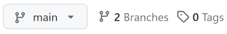
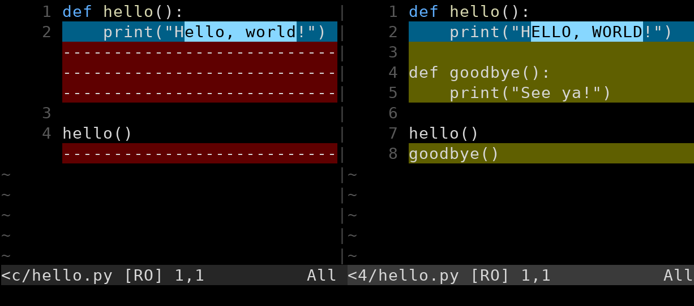

v1.2.9, Copyright © October 15, 2026
Hello again, everyone! In my role as an industry professional-turned-college instructor, I definitely see my fair share of students struggling with Git.
And who can blame ’em? It’s a seemingly-overcomplicated system with lots of pitfalls and merge conflicts and detached heads and remotes and cherrypicks and rebases and an endless array of other commands that do who-knows-what.
Which leads us directly to the goal: let’s make sense of all this and go from complete Git novice up to intermediate! We’ll start off easy (allegedly) with commands mixed in with some theory of operation. And we’ll see that understanding what Git does under the hood is critical to using it correctly.
And I promise there’s definitely a chance that after you get through some of this guide, you might actually start to appreciate Git and like using it.
I’ve been using it for years (I’m using it for the source code for this guide right now) and I can certainly vouch for it becoming easier over time, and then, even, second nature.
But first, some boilerplate!
The initial draft of this guide was put online for the university students where I worked (or maybe still work, depending on when you’re reading this) as an instructor. So it’s pretty natural to assume that’s the audience I had in mind.
But I’m also hoping that there are enough other folks out there who might get something of use from the guide as well, and I’ve written it in a more general sense with all you non-college students in mind.
This guide assumes that you have basic POSIX shell (i.e. Bash, Zsh, etc.) usage skills, i.e.:
cd, ls, mkdir, cp, etc.It also assumes you’re in a Unix-like environment, e.g. Linux, BSD, Unix, macOS, WSL, etc. with a POSIX shell. The farther you are away from that (e.g. PowerShell, Commodore 64), the more manual translation you’ll have to do.
Windows is naturally the sticking point, there. Luckily Git for Windows comes with a Bash shell variant called Git Bash. You can also install WSL1 to get a Linux environment running on your Windows box. I wholeheartedly recommend this for hacker types, since Unix-like systems are hacker-awesome, and additionally I recommend you all become hacker types.
This official location of this document is (currently) https://beej.us/guide/bggit/2.
I’m generally available to help out with email questions so feel free to write in, but I can’t guarantee a response. I lead a pretty busy life and there are times when I just can’t answer a question you have. When that’s the case, I usually just delete the message. It’s nothing personal; I just won’t ever have the time to give the detailed answer you require.
As a rule, the more complex the question, the less likely I am to respond. If you can narrow down your question before mailing it and be sure to include any pertinent information (like platform, compiler, error messages you’re getting, and anything else you think might help me troubleshoot), you’re much more likely to get a response.
If you don’t get a response, hack on it some more, try to find the answer, and if it’s still elusive, then write me again with the information you’ve found and hopefully it will be enough for me to help out.
Now that I’ve badgered you about how to write and not write me, I’d just like to let you know that I fully appreciate all the praise the guide has received over the years. It’s a real morale boost, and it gladdens me to hear that it is being used for good! :-) Thank you!
You are more than welcome to mirror this site, whether publicly or privately. If you publicly mirror the site and want me to link to it from the main page, drop me a line at beej@beej.us.
If you want to translate the guide into another language, write me at beej@beej.us and I’ll link to your translation from the main page. Feel free to add your name and contact info to the translation.
Please note the license restrictions in the Copyright and Distribution section, below.
Beej’s Guide to Git is Copyright © 2024 Brian “Beej Jorgensen” Hall.
With specific exceptions for source code and translations, below, this work is licensed under the Creative Commons Attribution-Noncommercial-No Derivative Works 3.0 License. To view a copy of this license, visit https://creativecommons.org/licenses/by-nc-nd/3.0/ or send a letter to Creative Commons, 171 Second Street, Suite 300, San Francisco, California, 94105, USA.
One specific exception to the “No Derivative Works” portion of the license is as follows: this guide may be freely translated into any language, provided the translation is accurate, and the guide is reprinted in its entirety. The same license restrictions apply to the translation as to the original guide. The translation may also include the name and contact information for the translator.
The programming source code presented in this document is hereby granted to the public domain, and is completely free of any license restriction.
Educators are freely encouraged to recommend or supply copies of this guide to their students.
Contact beej@beej.us for more information.
The hardest things about writing these guides are:
A lot of people have helped me through this process, and I want to acknowledge those who have made this book possible:
Thank you! ♥
BG_NEW_CHAPTERWelcome to the Beej’s Guide to Git!
This guide has two goals, in no particular order:
I feel the second of these is very important for becoming even remotely adept at using Git, which is why I spend so much time talking about it. Yes, you can get by with a cheat-sheet of common Git commands, but if you want to fearlessly use the tool to its full effectiveness, you gotta learn the internals!
And, yes, Git is complex. There’s a lot to it. But like with many complex tools, there’s a lot of power to be found there if you put in the time to get good at it.
Git is a source code control system, also known as a version control system.
Clear? Okay, not really? Let’s dive in a bit more, then!
Git’s main job is to keep a log of snapshots of the current state of all your source code in a particular directory tree. A snapshot is the current state of all tracked files at a particular time. If you wanted to see what your source code looked like last Wednesday, you could go back in time and see it.
The idea is that you’ll make some changes (to implement a feature, for example), and then you’ll commit those changes to the source code repo (repository) once the feature is ready. This saves the changes to the repo and allows other collaborators to see them.
And if you ever change something you didn’t want to, or you want to see how things were implemented in the past, you can always check out a previous commit and take a look.
Git keeps a history of all the commits you’ve ever made. Assuming nothing criminal is happening, this should be a great relief to you; if you accidentally delete a bunch of code, you can look at a previous commit and get it all back.
But that’s not all! As we’ll see, Git also works well as a remote backup mechanism, and works wonderfully when cooperating with a team on the same codebase.
Source Code Control System/Version Control System: Software that manages changes to a software project potentially consisting of thousands of source files edited by potentially hundreds of developers. Git is a source code control system. There are many others.
Commit: An explicit moment in time where a snapshot of the contents of all the source files are recorded in the source code control system. Very, very typically the code is in a working state when the commit is made; in other words, the commit represents in some ways a seal of approval that the repo in this state is in working order even if the changes aren’t complete.
Example commits might be:
Repo/Source Code Repository: This is where a particular software project is stored in the source code control system. Typically each project has its own repo. For example, you might “create a Git repo” to hold a new project you’re working on.
Sometimes repos are local to your computer, and sometimes they’re stored on other, remote computers.
Oh, more?
GitHub is a website that provides a front end to a lot of Git features, and some additional GitHub-specific features, as well.
It also provides remote storage for your repo, which acts as a backup.
Takeaway: GitHub is a web-based front-end to Git (specifically one that works on the copy of your repo at GitHub—stay tuned for more on that later).
What about GitLab and Gitea? GitLab4 is a competitor to GitHub. Gitea5 is an open-source competitor that allows you to basically run a GitHub-like front-end on your own server. None of this information is immediately important.
Regardless of whatever repos you have on GitHub, you’ll also have copies (known as clones) of those repos on your local system to work on. Periodically, in a common workflow, you’ll sync your clone of the repo with GitHub.
You don’t need GitHub. Even though you might be commonly using GitHub, there’s no law that says you have to. You can just create and destroy repos on your local system all you want, even if you’re not connected to the Internet. See Appendix: Making a Playground for more information once you’re more comfortable with the basics.
There’s a super-common workflow that you’ll use repeatedly:
This is not the only workflow; there are others that are also not uncommon.
Clone (verb): to make a copy of a remote repo locally.
Clone (noun): a local copy of a remote repo.
Remote: In Git, a clone of a repo in another location.
Working Tree: The directory that you go into to edit and change the files of the project. This is created when you clone.
Stage: In Git, a place you add copies of files to in preparation for a commit. The commit will include all the modified files that you’ve placed on the stage. It will not include modified files you haven’t placed on the stage.
Index: A less-common name for the stage.
First, some backstory.
Git is what’s known as a distributed version control system. This means that, unlike many version control systems, there’s no one central authority for the data. (Though commonly Git users treat a site like GitHub in this regard, loosely.)
Instead, Git has clones of repos. These are complete, standalone copies of the entire commit history of that repo. Any clone can be recreated from any other. None of them are more powerful than any others.
Looking back at The Most Basic Git Workflow, above, we see that Step 1 is to clone an existing repo.
If you’re doing this from GitHub, it means you’re making a local copy of an entire, existing GitHub repo.
Making a clone is a one time-process, typically (though you can make as many as you want).
Distributed Version Control System: A VCS in which there is no central authority of the data, and multiple clones of a repo exist.
This means after you clone a repo, there are two: one that is remote, and one that is local to your computer.
These clones are completely separate and changes you make to your local repo will not be reflected in the remote clone. Unless, that is, you explicitly make them interact.
After you make a clone, there are two major operations you typically use:
Push: This takes your local commits and uploads them to the remote repo.
Pull: This takes the remote commits and downloads them to your local repo.
Behind the scenes, there’s a process going on called a merge, but we’ll talk more about that later.
Until you push, your local changes aren’t visible on the remote repo.
Until you pull, the changes on the remote repo aren’t visible on your local repo.
Let’s put all this into play. This section assumes you have the command line Git tools installed. It also generally assumes you’re running a Unix shell like Bash or Zsh.
Where do you get these shells? Linux/BSD/Unix and Mac users will already have these shells. Yay!
Recommendation for Windows users is to install and run Ubuntu with WSL6 to get a virtual Linux installation. Or, if you don’t want to jump down that particular rabbit hole just yet, run Git Bash (included with Git).
For this example, we’ll assume we have a GitHub repo already in existence that we’re going to clone.
Recall the process in The Most Basic Git Workflow, above:
“Wait! You didn’t say there was a Step 0!”
Yes, one time, before you start using Git, you should tell it what your name and email address are. These will be attached to the commits you make to the repo.
You can change them any time in the future, and you can even set them on a per-repo basis. But for now, let’s set them globally so Git doesn’t complain when you make a commit.
You just have to do this once then never again (unless you want to).
Type both of these on the command line, filling in the appropriate information.
In this guide, things you type at the shell prompt are indicated by a prefaced
$. Don’t type the$; just type what follows it. Your actual shell prompt might be%or$or something else, but here we use the$to indicate it.
$ git config set --global user.name "Your Name"
$ git config set --global user.email "your-email@example.com"If you need to change them in the future, just run those commands again.
If you get an error with the above commands you might be running an older version of Git. Try them again, but leave out the word
set. Or, better yet, see if you can get a newer version of Git.
Finally, let’s set the default branch name. It’s really too early to explain what that means, but let’s run this command and set the name to main. This will keep Git from complaining when you create a repo.
$ git config set --global init.defaultBranch mainSome repos use
masterfor the default branch name instead ofmain. It’s actually an arbitrary choice, and repo creators can use anything they want. Git itself hints, “Names commonly chosen instead of ‘master’ are ‘main’, ‘trunk’ and ‘development’.”I’m suggesting using
mainfor multiple reasons, not the least of which is that’s what GitHub uses, but it’s up to you. In this guide I’ll usemain.
Let’s clone a repo! Here’s an example repo you can actually use. Don’t worry–you can’t mess anything up on the remote repo even though (and because) you don’t own it.
Like we said before, this isn’t the only workflow. Sometimes people make a local repo first, add some commits, then create a remote repo and push those commits. But for this example, we’ll assume the remote repo exists first, though this isn’t a requirement.
Switch into a subdirectory where you want the clone created. This command will create a new subdirectory out of there that will hold all the repo files.
(In the example, anything that begins with $ represents the shell prompt indicating this is input, not output. Don’t type the $; just type in the part after it.)
$ git clone https://github.com/beejjorgensen/git-example-repo.gitYou should see some output similar to this:
Cloning into 'git-example-repo'...
remote: Enumerating objects: 10, done.
remote: Counting objects: 100% (10/10), done.
remote: Compressing objects: 100% (8/8), done.
remote: Total 10 (delta 2), reused 9 (delta 1), pack-reused 0
remote: (from 0)
Receiving objects: 100% (10/10), done.
Resolving deltas: 100% (2/2), done.Congratulations! You have a clone of the repo. Let’s have a peek:
$ cd git-example-repo
$ ls -laAnd we see a number of files:
total 16
drwxr-xr-x 5 beej staff 160 Jan 18 13:35 .
drwxr-xr-x 106 beej staff 3392 Jan 18 13:35 ..
drwxr-xr-x 12 beej staff 384 Jan 18 13:35 .git
-rw-r--r-- 1 beej staff 162 Jan 18 13:35 README.md
-rwxr-xr-x 1 beej staff 75 Jan 18 13:35 hello.pyThere are two files in this repo: README.md and hello.py.
The directory
.githas special meaning; it’s the directory where Git keeps all its metadata and commits. You can look in there, but you don’t have to. If you do look, don’t change anything. The only thing that makes a directory a Git repo is the presence of a valid.gitdirectory within it.
Let’s ask Git what it thinks the current status of the local repo is:
$ git statusGives us:
On branch main
Your branch is up to date with 'origin/main'.
nothing to commit, working tree cleanThere’s a lot of information here, surprisingly.
We haven’t talked about branching yet, but this is letting us know we’re on branch main. That’s fine for now.
It also tells us this branch is up to date with a branch called origin/main. A branch in Git is just a reference to a certain commit that’s been made, like a Post-It note attached to that commit. (Recall that a commit is a snapshot of the code repo at some time.)
We don’t want to get caught up in the intricacies of branching right now, but bear with me for a couple paragraphs.
origin is an alias for the remote repository that we originally cloned from, so origin/main corresponds to “branch main on the repo you originally cloned from”7.
There is one important thing to notice here: there are two main branches. There’s the main branch on your local repo, and there’s a corresponding main branch on the remote (origin) repo8.
Remember how clones are separate? That is, changes you make on one clone aren’t automatically visible on the other? This is an indication of that. You can make changes to your local main branch, and these won’t affect the remote’s main branch. (At least, not until you push those changes!)
Lastly, it mentions we’re up-to-date with the latest version of main on origin (that we know of), and that there’s nothing to commit because there are no local changes. We’re not sure what that means yet, but it all sounds like vaguely good news.
Let’s edit a file and make some changes to it.
Again, don’t worry about messing up the remote repo—you don’t have permissions to do that. Your safety is completely assured from a Git perspective.
If you’re using VS Code, you can run it in the current directory like so:
$ code .Otherwise, open the code in your favorite editor, which, admit it, is Vim9.
Let’s change hello.py:
It was:
#!/usr/bin/env python
print("Hello, world!")
print("This is my program!")but let’s add a line so it reads:
#!/usr/bin/env python
print("Hello, world!")
print("This is my program!")
print("And this is my modification!")And save that file.
Let’s ask Git what the status is now.
$ git status
On branch main
Your branch is up to date with 'origin/main'.
Changes not staged for commit:
(use "git add <file>..." to update what will be committed)
(use "git restore <file>..." to discard changes in working
directory)
modified: hello.py
no changes added to commit (use "git add" and/or "git commit -a")This is telling us a couple important things.
First, Git has detected that we modified a file, namely hello.py, which we did.
But it also says there are no changes added to commit (i.e. “there is nothing to make a commit with”). What does that mean?
It means we haven’t added any modified files to the stage yet. Recall that the stage is where we can place items that we wish to include in the next commit. Let’s try that.
We’re going to divert for just a moment to briefly introduce a new optional tool: git diff (short for “difference”, though we still pronounce it “diff”).
If you make some changes to files and you need a refresher on all the things you’ve changed, you can run this command to see it. But, fair warning, the output is… esoteric.
Let’s try it.
$ git diff
diff --git a/hello.py b/hello.py
index 9db78d2..1187d32 100755
--- a/hello.py
+++ b/hello.py
@@ -2,3 +2,4 @@
print("Hello, world!")
print("This is my program!")
+print("And this is my modification!")What the heck is this sorcery? If you’re lucky, it got color-coded for you with (by convention) added lines in green and deleted lines in red.
For now, just notice a couple things:
hello.py.+ at the front. This indicates an added line.A - at the front of a line would indicate the line was deleted. And changed lines are often shown as the old line being deleted and a new one added.
Finally, if you want to see the diff for things you’ve added to the stage already (in the next step), you can run git diff --staged.
We’ll dive more into diff later, but I wanted to introduce it here since it’s so useful.
The Git status message, above, is trying to help us out. It says:
no changes added to commit (use "git add" and/or "git commit -a")It’s suggesting that git add will add things to the stage—and it will.
Now we, the developers, know that we modified hello.py, and that we’d like to make a commit that reflects the changes to that file. So we need to first add it to the stage so that we can make a commit.
Let’s do it with git add:
$ git add hello.py
$ git status
On branch main
Your branch is up to date with 'origin/main'.
Changes to be committed:
(use "git restore --staged <file>..." to unstage)
modified: hello.pyNow it’s changed from saying “Changes not staged for commit” to saying “Changes to be committed”, so we have successfully copied hello.py to the stage!
There’s also a helpful message there about how to unstage the file. Let’s say you accidentally added it to the stage and you changed your mind and wanted to not include it in the commit after all. You can run
$ git restore --staged hello.pyand that will change it back to the “Changes not staged for commit” state.
Now that we have something copied to the stage, we can make a commit. Recall that a commit is just a snapshot of the state of the repo given the modified files on the stage. Modified files not on the stage will not be included in the snapshot. Unmodified files are automatically included in the snapshot.
In short, the commit snapshot will contain all the unmodified files Git currently tracks plus the modified files that are on the stage. (Git just doesn’t show all the unmodified files with status because the output would be completely unhelpful.)
Let’s do it:
$ git commit -m "Add another print line"
[main 0e1ad42] Add another print line
1 file changed, 1 insertion(+)The
-mswitch allows you to specify a commit message. If you don’t use-m, you’ll be popped into an editor, which will probably be Nano or Vim, to edit the commit message. If you’re not familiar with those, see Getting Out of Editors for help.If you do get into the editor, know that every line in the commit message that begins with
#is a comment that is ignored for the purposes of the commit. It’s a little weird that the commit message is a comment about the commit, and then you can have commented-out lines in the comment, but I don’t make the rules!
And that’s good news! Let’s check the status:
$ git status
On branch main
Your branch is ahead of 'origin/main' by 1 commit.
(use "git push" to publish your local commits)
nothing to commit, working tree clean“Nothing to commit, working tree clean” means we have no local changes to our branch.
Turns out there’s an optional shortcut here. If you’ve modified a file, you can just commit it directly (without adding it to the stage!) by naming it on the command line.
Let’s say you modified
foo.txtbut didn’t add it. You could:$ git commit -m "jerbify the flurblux" foo.txtAnd that would make the commit directly, bypassing the whole add-it-to-the-stage step. But you can only do this with files that the repo already is aware of, i.e. they aren’t “untracked”.
You can specify multiple files here, or a directory. Also, this doesn’t affect files that are already on the stage.
But look! The status says we’re “ahead of ‘origin/main’ by 1 commit”! This means our local commit history on the main branch has one commit that the remote commit history on its main branch does not have.
Which makes sense—the remote repo is a clone and so it’s independent of our local repo unless we explicitly try to sync them up. It doesn’t magically know that we’ve made changes to our local repo.
And Git is helpfully telling us to run git push if we want to update the remote repo so that it also has our changes.
So let’s try to do that. Let’s push our local changes to the remote repo.
Let’s push our local changes to the remote repo:
$ git pushAnd that produces:
Username for 'https://github.com':Uh oh—trouble brewing. Let’s try entering our credentials:
Username for 'https://github.com': my_username
Password for 'https://beejjorgensen@github.com': [my_password]
remote: Support for password authentication was removed on August
13, 2021.
remote: Please see https://docs.github.com/en/get-started/getting-
started-with-git/about-remote-repositories#cloning-with-
https-urls for information on currently recommended modes
of authentication.
fatal: Authentication failed for 'https://github.com/beejjorgensen/
git-example-repo.git/'Well, that’s all kinds of not-working. Largely this is because you don’t have permission to write to that repo since you’re not the owner. And, notably, support for authenticating with a password seems to have been removed in 2021 which, last I checked, was in the past.
So what do we do? Firstly, we should be the owner of the GitHub repo that we’ve cloned and that’ll solve some of the permission problems. Secondly, we’d better find another way to authenticate ourselves to GitHub that’s not plain password.
Let’s try that in the next section.
BG_NEW_CHAPTER
Now, we’ve said that GitHub (which is a proprietary web front-end to Git run and owned by Microsoft) is not Git, and it’s true. It’s also true that you never even need to touch GitHub in order to use Git.
That said, it’s really common for people to use GitHub, so we’ll get it set up in this chapter.
Here we’ll make a new GitHub account and see how authentication works. This involves some one-time setup.
If you already have a GitHub account, you can skip that section.
If you already have authentication set up with GitHub CLI or with SSH keys, you can skip that section, as well.
If you don’t need to use GitHub, you can skip the entire chapter!
Head on over to GitHub10 and click Sign Up. Follow those instructions.
Eventually you’ll end up on your home screen dashboard.
This will make a repository on GitHub that you own. It does not make a local repository—you’ll have to clone the repo for that, something we’ll do later.
In GitHub, there’s a green New button on the left of the dashboard.
Also, there’s a + pulldown on the upper right center that has a “New Repository” option. Click one of those.
On the subsequent page:
Enter a “Repository name”, which can be anything as long as you don’t already have a repo by that name. Let’s use test-repo for this example.
Check the “Add a README file” checkbox.
(In the future, you might already have a local repo you’re going to push to this new repo. If that’s the case, do not check this box or it’ll prevent the push from happening.)
Click Create repository at the bottom.
And there you have it.
Before we get to cloning, let’s talk authentication. In the previous part of the intro, we saw that username/password logins were disabled, so we have to do something different.
There are a few options:
GitHub CLI is likely easier. SSH keys are geektacular. I only recently learned that you could authenticate with personal access tokens, so I can’t really speak to them much.
Personally, I use SSH keys. But other people… don’t. It’s up to you.
If you already have authentication working with GitHub, skip these sections.
Otherwise, choose one of them (like SSH) and use it.
This is a command line interface to GitHub. It does a number of things, but one of them is providing an authentication helper so you can do things like actually push to a remote repo.
Visit the GitHub CLI page11 and follow the installation instructions. If you’re using WSL, Linux, or another Unix variant, see their installation instructions12 for other platforms.
Once you have it installed, you should be able to run ‘gh –version’ and see some version information, e.g.:
$ gh --version
gh version 2.42.1 (2024-01-15)
https://github.com/cli/cli/releases/tag/v2.42.1Then you’ll want to run the following two commands:
$ gh auth login
$ gh auth setup-gitThe first command (login) will take you through the login process. You’ll have to do this again if you log out.
It’s going to ask you if you want to use SSH or HTTP. If you have SSH keys set up, I recommend using that. If you don’t, choose “HTTP” when it asks. The main difference is that with HTTP, the login credentials are stored unencrypted, whereas with SSH, you can protect them with a passphrase. See below for setting up SSH keys.
And logging in with a web browser is easiest, when it asks.
The second command (setup-git) is one-time only. This just adds to your global config some stuff to help with authentication.
If you don’t want to install and use GitHub CLI, you can take this approach instead. This is more involved, but has more geek cred. This is what I use.
If you already have an SSH keypair, you can skip the key generation step. You’d know you had one if you ran ls ~/.ssh and you saw a file like id_rsa.pub or id_ed25519.pub.
To make a new keypair, run the following command:
$ ssh-keygen -t ed25519 -C youremail@example.com(The -C sets a “comment” in the key. It can be anything, but an email address is common.)
This results in a lot of prompts, but you can just hit ENTER for all of them.
Best practice is to use a password to access this key, otherwise anyone with access to the private key can impersonate you and access your GitHub account, and any other account you have set up to use that key. But it’s a pain to type the password every time you want to use the key (which is any time you do anything with GitHub from the command line), so people use a key agent which remembers the password for a while.
If you don’t have a password on your key, you’re relying on the fact that no one can get a copy of the private portion of your key that’s stored on your computer. If you’re confident that your computer is secure, then you don’t need a password on the key. Do you feel lucky?
Setting up the key agent is outside the scope of this document, and the author is unsure of how it even works in WSL. GitHub has documentation on the matter13.
For this demo, we’ll just leave the password blank. All of this can be redone with a new key with a password if you choose to do that later.
Anyway, just hitting ENTER for all the prompts gets you something like this:
Generating public/private ed25519 key pair.
Enter file in which to save the key (/home/user/.ssh/id_ed25519):
Enter passphrase (empty for no passphrase):
Enter same passphrase again:
Your identification has been saved in id_ed25519
Your public key has been saved in id_ed25519.pub
The key fingerprint is:
SHA256:/lrT43BQBRPJpUXxpTBFInhdtZSQjQwxU4USwt5c0Lw user@locahost
The key's randomart image is:
+--[ED25519 256]--+
| .o.X^%^=+|
| ..oo*^.=o|
| ..o = o..|
| . + E |
| S . |
| . o |
| . + + |
| o = . |
| ... . |
+----[SHA256]-----+If you chose any file name other than the default for your key, you’ll have to do some additional configuration to get it to work with GitHub14.
What’s that randomart thing with all the weird characters? It’s a visual representation of that key. There are ways to configure SSH so that you see the randomart every time you log in. And the idea is that if one day you see it looks different, something could be amiss security-wise. I doubt most people every look at it again once it’s been generated, though.
Now if you type ls ~/.ssh you should see something like this:
id_ed25519 id_ed25519.pubThe first file is your private key. This is never to be shared with anyone. You have no reason to even copy it.
The second file is your public key. This can be freely shared with anyone, and we’re going to share it with GitHub in a second so that you can log in with it.
If you have trouble in the following subsections, try running these two commands:
$ chmod 700 ~/.ssh $ chmod 600 ~/.ssh/*You only have to do that once, but SSH can be a bit picky if the file permissions on those files aren’t locked down.
Now in order to make this work, you have to tell GitHub what your public key is.
First, get a copy of your public key in the clipboard. Be sure you’re getting the file with the .pub extension!
$ cat ~/.ssh/id_ed25519.pubYou should see something like this:
ssh-ed25519 AAAC3N[a bunch of letters]V+znpoO youremail@example.comCopy the entire thing into the clipboard so you can paste it later.
Now go to GitHub, and click on your avatar icon in the upper right.
Choose “Settings”.
Then on the left, choose “SSH and GPG keys”.
Click “New SSH Key”.
For the title, enter something identifying, like, “My laptop key”.
Key type is “Authentication Key”.
Then paste your key into the “Key” field.
And click “Add SSH key”.
We’ll be using SSH to clone URLs later. Remember that.
Remember last chapter when we tried to clone an HTTPS repo URL on the command line and it prompted for a username and password that didn’t work?
Well, we get to actually make new passwords that will work in that case. They’re called personal access tokens.
GitHub has a lot of documentation on this15 but the gist of it is that you’re going to create a token that represents some kind of access, e.g. “ability to read and write my repos”, and you’re going to use that in lieu of the password on the command line.
So that last failed example would look like this:
Username for 'https://github.com': [MY USERNAME]
Password for 'https://beejjorgensen@github.com': [MY TOKEN]In other words:
Your computer might automatically save those credentials so you don’t have to enter them every time. Or it might not.
One of the main things personal access tokens can give you is fine-grained control over access. You can limit access to read-only, or just to certain repos, and so on.
Additionally, you can use GitHub CLI authentication with a token as well. You just have to feed it in there on standard input. Let’s say you have your token in a file called mytoken.txt. You can authenticate with GitHub CLI like so:
$ gh auth login --with-token < mytoken.txtLike with SSH keys, if you lose a laptop that uses a particular access token, you can simply invalidate that token through GitHub’s UI so that mean people can’t use it.
We need to figure out the URL to the repo so we can clone it.
If you click on your icon in the upper right, then “My Repositories”, you should see a page with all your repos. At this point, it might just be your test-repo repo. Click on the name.
And you should then be on the repo page. You can browse the files here, among other things, but really we want to get the clone URL.
Click the big blue “Code” button.
What you do next depends on if you’re using GitHub CLI or SSH keys.
You have two options.
Option 1: Earlier when we authenticated with gh auth login I said to remember if you chose HTTPS or SSH. Depending on which you chose, you should choose that tab on this window.
Copy the URL.
Go to the command line and run git clone [URL] where [URL] is what you copied. So it’ll be this for HTTPS:
$ git clone https://github.com/user/test-repo.gitor this for SSH:
$ git clone git@github.com:user/test-repo.gitOption 2: Choose the “GitHub CLI” tab. Run the command as they have it, which will be something like:
$ gh repo clone user/test-repoIf you set up an SSH key earlier, you can use this method.
After hitting the green “Code” button, make sure the “SSH” tab is selected.
Copy that URL.
Go to the command line and run git clone [URL] where [URL] is what you copied. So it’ll be something like this:
$ git clone git@github.com:user/test-repo.gitNow that you’ve cloned the repo, you should be able to cd into that directory, edit a file, git add it to the stage, then git commit -m message to make a commit…
And then git push to push it back to the clone on GitHub!
And after that if you go to the repo page on GitHub and hit reload, you should be able to see your changes there!
And now we’re back to that standard common flow:
There are two main techniques for this:
We’ll talk about the first one in the future.
For now, the easiest way to add collaborators is to just add them to your repo.
On the repo page on GitHub, choose “Settings”, then “Collaborators” on the left.
After authenticating, you can click “Add people”. Enter the username of the person you want to collaborate with.
They’ll have to accept the invitation from their GitHub inbox, but then they’ll have access to the repo.
Be sure to only do this with people you trust!
BG_NEW_CHAPTERHEADWhen we make commits to a Git repo, it tracks each of those commits in a log that you can visit. Let’s take a look at that now.
You can get the commit log by typing git log.
Let’s say I’m in a repo with a single commit where I’ve just added a file with the commit message “Added”.
$ git logproduces:
commit 5a02fede3007edf55d18e2f9ee3e57979535e8f2 (HEAD -> main)
Author: User Name <user@example.com>
Date: Thu Feb 1 09:24:52 2024 -0800
AddedIf I make another commit, we get a longer log:
commit 5e8cb52cb813a371a11f75050ac2d7b9e15e4751 (HEAD -> main)
Author: User Name <user@example.com>
Date: Thu Feb 1 12:36:13 2024 -0800
More output
commit 5a02fede3007edf55d18e2f9ee3e57979535e8f2
Author: User Name <user@example.com>
Date: Thu Feb 1 09:24:52 2024 -0800
AddedNotice that the most recent commit entry is at the top of the output.
There are a few things to notice in the log:
Also, we have those huge hex16 numbers after the word commit.
This is the commit ID or commit hash. This is universally unique number that you can use to identify a particular commit.
Normally you don’t need to know this, but it can be useful for going back in time or keeping track of commits in multi-developer projects.
We also see a bit at the top that says (HEAD -> main). What’s that about?
HEAD ReferenceWe’ve seen that each commit has a unique and unwieldy identifier like this:
5a02fede3007edf55d18e2f9ee3e57979535e8f2
Luckily, there are a few ways to refer to commits with more-human symbolic names.
HEAD is one of these references. It indicates which branch or commit you’re looking at right now in your project subdirectory17. Remember how we said you could go look at previous commits? The way you do that is by moving HEAD to them.
We haven’t talked about branches yet, but the
HEADnormally refers to a branch. By default, it’s themainbranch. But since we’re getting ahead of ourselves, I’m going to just keep saying thatHEADrefers to a commit, even though it usually does it indirectly via a branch.So this is a bit of a lie, but I hope you forgive me.
Some terminology: the Git subdirectory you’re looking at right now and all the files within it is referred to as your working tree. The working tree is the files as they appear at the commit pointed to by HEAD, plus any uncommitted changes you might have made.
So if you switch HEAD to another commit, the files in your working tree will be updated to reflect that.
Importantly, the data in the files in the working tree might differ from the data in the files at the current commit pointed to by
HEAD. This happens when you’ve modified a file in the working tree but haven’t yet committed it.
Okay then, how do we know which commit HEAD is referring to? Well, it’s right there at the top of the log:
commit 5e8cb52cb813a371a11f75050ac2d7b9e15e4751 (HEAD -> main)
Author: User Name <user@example.com>
Date: Thu Feb 1 12:36:13 2024 -0800
More outputWe see HEAD right there on the first line, indicating that HEAD is referring to commit with ID:
5e8cb52cb813a371a11f75050ac2d7b9e15e4751
Again, that’s a bit of a lie. The HEAD -> main means that HEAD is actually referring to the main branch, and that main is referring to the commit. HEAD is therefore indirectly referring to the commit. More on that later.
HEADHere’s my full Git log:
commit 5e8cb52cb813a371a11f75050ac2d7b9e15e4751 (HEAD -> main)
Author: User Name <user@example.com>
Date: Thu Feb 1 12:36:13 2024 -0800
More output
commit 5a02fede3007edf55d18e2f9ee3e57979535e8f2
Author: User Name <user@example.com>
Date: Thu Feb 1 09:24:52 2024 -0800
AddedIf I look at the files, I’ll see the changes indicated by the “More output” commit. But let’s say I want to go back in time to the previous commit and see what the files looked like then. How would I do that?
Maybe there were some changes that existed back in an earlier commit that had since been removed, and you wanted to look at them, for example.
I can use the git switch command to make that happen.
Before you switch branches, you should be all committed with
git statustelling you everything is clean. If you’re not, make a commit or stash your stuff before your switch.
Let’s check out the first commit, the one with ID 5a02fede3007edf55d18e2f9ee3e57979535e8f2.
Now, I could say:
$ git switch --detach 5a02fede3007edf55d18e2f9ee3e57979535e8f2and that would work, but the rule is that you must specific at least 4 unique digits of the ID, so I could have also done this:
$ git switch --detach 5a02for the same result.
And that result is:
HEAD is now at 5a02fedLet’s take a look around with git log:
commit 5a02fede3007edf55d18e2f9ee3e57979535e8f2 (HEAD)
Author: User <user@example.com>
Date: Thu Feb 1 09:24:52 2024 -0800
AddedThat’s all! Just one commit?! Where’s the second commit I made? Is it gone forever?!
No. Everything is fine. [Soothing image of a kitten sleeping in the sun.]
When you have HEAD at a certain commit, you’re looking at the world as it looked at that snapshot in time. Future commits haven’t “happened” yet from this perspective. They are still out there, but you’ll have to change back to them by name. (It’s like a flippin’ time machine!)
Also, do you see anything different about that first line that reads (HEAD)? That’s right: no main to be seen.
That’s because the main branch is still looking at the latest commit, the one with the “More output” comment. So we don’t see it from this perspective.
Furthermore, this means that HEAD is no longer attached to main. We call this state detached head. And git switch doesn’t let you do that unless you mean it, which is why we have that --detach in there. (And reattaching is easy: just switch to the branch you want to attach to.)
Remember earlier when I said it was a bit of a lie to say that
HEADpoints to a commit? Well, detached head state is the case where it actually does. Detached head state is just what happens whenHEADis pointing to a commit instead of a branch. To reattach it, you have to change it to point to a branch again.
Let’s reattach HEAD to the main branch. There are two options:
git switch -: this switches to wherever we were before this, which, in this case, was main.git switch main: this explicitly switches to main.Let’s try:
$ git switch main
Previous HEAD position was 5a02fed Added
Switched to branch 'main'Notice there was no --detach in that git switch! We’re reattaching the head, not detaching it, so we don’t have to tell Git we know what we’re doing.
`Don’t worry if you forget the
--detach. Git will tell you if you need it.$ git switch 5a02 fatal: a branch is expected, got commit '5a02' hint: If you want to detach HEAD at the commit, try again with the --detach option.
And now if we git log, we see all our changes again:
commit 5e8cb52cb813a371a11f75050ac2d7b9e15e4751 (HEAD -> main)
Author: User Name <user@example.com>
Date: Thu Feb 1 12:36:13 2024 -0800
More output
commit 5a02fede3007edf55d18e2f9ee3e57979535e8f2
Author: User Name <user@example.com>
Date: Thu Feb 1 09:24:52 2024 -0800
Addedand our working tree will be updated to show the files as they are in the main commit.
And you see the HEAD -> main? The arrow means HEAD is reattached to main. (If HEAD were detached at the same commit as main, you’d see HEAD, main.)
git checkoutIn ye olden days before git switch existed, there was a command to do all that stuff called git checkout. git checkout did a lot of things, and it still does. Because it does so much, the maintainers of Git have been trying to break some of that functionality into git switch and other commands.
There are still times when you need to use
checkout, but if your version of Git supportsswitch, this isn’t one of them. Useswitchif you can and skip this section.
But let’s redo the previous section by using just git checkout instead of git switch. Let’s try:
$ git checkout 5a02and it says:
Note: switching to '5a02fede3007edf55d18e2f9ee3e57979535e8f2'.
You are in 'detached HEAD' state. You can look around, make
experimental changes and commit them, and you can discard any
commits you make in this state without impacting any branches by
switching back to a branch.
If you want to create a new branch to retain commits you create, you
may do so (now or later) by using -c with the switch command.
Example:
git switch -c <new-branch-name>
Or undo this operation with:
git switch -
Turn off this advice by setting config variable advice.detachedHead
to false
HEAD is now at 5a02fed AddedWell, that’s a lot of scary stuff, but it’s just Git telling us that we’re now in detached head state. Which of course we are since we just detached the head from branch main by switching to a specific commit hash.
And we can get back to the main branch with:
$ git checkout mainYou can also switch back with the aforementioned git switch variants, but we’re pretending those don’t exist for this section.
HEADThere are a couple shortcuts to get to commits that are earlier than HEAD, like, “I want to switch to the 3rd commit before this one.”
Here’s a pretty useless example that we’ll start with:
$ git switch --detach HEADThis moves HEAD to where HEAD was. That is, it moves it nowhere. (Though it does have the effect of detaching it from the branch.)
But what if I wanted to move to the commit right before where HEAD is now? You can do it with caret notation like this:
$ git switch --detach HEAD^And that gets you to the previous commit.
It’s apparently a little-known Fun Fact™ that you can commonly enter
@instead ofHEADwith these commands. For example, the previous command could be written:$ git switch --detach HEAD^ $ git switch --detach @^ # Same thingBe aware that some shells might require you to put the
@in quotes to get it to work right. But that can potentially save three keystrokes.
What if you wanted to get to the third-previous commit? You can add more carets!
$ git switch --detach HEAD^^^Or the 10th previous commit!
$ git switch --detach HEAD^^^^^^^^^^Or the 100th previous commit!
$ git switch --detach HEAD^^^^^^^^^^^^^^^^^^^^forget thisTyping all these carets is wearing me out. Luckily there’s another shorthand we have at our disposal with tilde notation. The two following lines are equivalent:
$ git switch --detach HEAD^^^
$ git switch --detach HEAD~3After the tilde, you can just give the number of commits back you want to go. So back to my example:
$ git switch --detach HEAD~100 # Much easierAll this said, personally I usually just look at the log and go to a specific commit instead of counting back.
BG_NEW_CHAPTER“But that’s just, like, my opinion, man.”
—The Dude
Normally you think of writing code as a linear sequence of changes. You start with an empty file, add some things, test them, add some more, test some more, and eventually the code is complete.
In Git we might think of this as a sequence of commits. Let’s look at a graph (Figure 5.1) where I’ve numbered commits 1-5. There, (1) was the first commit we made on the repo, (2) is some changes we made on top of (1), and (3) is some changes we made on top of (2), etc.
Git always keeps track of the parent commit for any particular commit, e.g. it knows the parent commit of (3) is (2) in the above graph. In this graph, the parent relationship is indicated by an arrow. “The parent of commit 3 is commit 2”, etc. It’s a little confusing because clearly commit 3 came after commit 2 in terms of time, but the arrow points to the parent, which is the opposite of the nodes’ temporal relationship.
A branch is like a name tag stuck on one specific commit. You can move the name tag around with various Git operations.
We’re assuming the default branch is called main. If you haven’t done so already, configure your default branch as shown in the Git Basics chapter.
So to make it a little more complete, we can show that branch in Figure 5.2. There’s our main branch attached to the commit labeled (5).
It’s tempting to think of the whole sequence of commits as “the branch”, but this author recommends against it. Better to keep in mind that the branch is just a name tag for a single commit, and that we can move that name tag around.
But Git offers something more powerful, allowing you (or collaborators) to pursue multiple branches simultaneously.
So there might be multiple collaborators working on the project at the same time.
And then, when you’re ready, you can merge those branches back together. In Figure 5.4, we’ve merged commit 6 and 7 into a new commit, commit 9. Commit 9 contains the changes of both commits 7 and 6.
In that case, somebranch and anotherbranch both point to the same commit. There’s no problem with this.
I’m actually oversimplifying this a little. When you merge a branch into another, really only the branch you’re merging into moves, not both of them. So to get the two branches to point to the same commit, you’d have to do two merges:
somebranchintoanotherbranchand thenanotherbranchintosomebranch. (Or the other way around.) And then they’d point to the same commit.
And then we can keep merging if we want, until all the branches are pointing at the same commit (Figure 5.5).
And maybe after all this we decide to delete somebranch and anotherbranch; we can do this safely because they’re fully merged, and can do this without affecting main or any commits (Figure 5.6).
This chapter is all about getting good with branching and partially good with merging.
If you like interactive tutorials, Peter Cottle has put together a great website called Learn Git Branching18. I highly recommend it before, during, and/or after reading this chapter.
git pullWhen you do a pull, it actually does two things: (a) fetch all the changes from the remote repo and (b) merge those changes.
If two or more people are committing to the same branch, eventually git pull is going to have to merge. And it turns out there are a few ways it can do this.
For now, we’re going to tell git pull to always classically merge divergent branches, and you can do that with this one-time command:
$ git config set --global pull.rebase falseIf you don’t do that, Git will pop up an error message complaining about it the first time it has to merge on a pull. And you’ll have to do it then. (Leave the word set out of that command if it fails on older Gits.)
When we talk about rebasing later, this will make more sense.
HEAD and BranchesWe said earlier that HEAD refers to a specific commit, namely the commit you’re looking at right now in your unmodified working tree.
And we also said that was a bit of a lie.
In normal usage, HEAD points to a branch, not to a commit. Only in detached head state does HEAD point directly to a commit (i.e. when it’s detached from all branches).
If we look at Figure 5.7, we see HEAD is pointing to a branch as per normal.
But if we check out an earlier commit that doesn’t have a branch, we end up in detached head state, and it looks like Figure 5.8.
So far, we’ve been making commits on the main branch without really even thinking about branching. Recalling that the main branch is just a label for a specific commit, how does the main branch know to “follow” our HEAD from commit to commit?
It does it like this: the branch that HEAD points to follows the current commit. That is, when you make a commit, the branch HEAD points to moves along to that next commit.
If we were here back at Figure 5.7, when HEAD was pointing to the main branch, we could make one more commit and get us to Figure 5.9.
Contrast that to detached head state, back in Figure 5.8. If we were there, a new commit would get us to Figure 5.10, leaving main alone.
At this point, there’s nothing stopping you from creating a new branch at the same commit as HEAD, if you want to do that. Or maybe you are just messing around and decide to switch back to main later, abandoning the commits you’ve made in detached HEAD state.
Now that we have the abstract theory stuff laid out, let’s talk specifics.
Before we start, let’s see how to list branches.
$ git branch
* mainThis is telling you there’s one branch, and you have it checked out (the * lets you know that).
If I make a new branch called foobranch and switch to that, I’ll see this:
% git branch
* foobranch
mainIf I then detach the HEAD, I end up here:
% git branch
* (HEAD detached at 10b6242)
foobranch
mainBut you can always see what branch you’re on with git branch or git status.
When you make the first commit to a new repo, the main branch is automatically created for you at that commit.
But what about new branches we want to make?
Why make a branch? A common case is that you want to work on your own commits without impacting the work of others. (In this case you’re really just putting off the work until you merge your branch with theirs, but it’s a good workflow.)
Another case is that you want to mess around with some changes but you’re not sure if they’ll work. If they end up not working, you can just delete the branch. If they do work, you can merge your changes back into the non-messing-around branch.
The most common way to make new branches is this:
Switch to the commit or branch from which you want to make the new branch.
Make the new branch there and switch HEAD to point to the new branch.
Let’s try it. Let’s branch off main.
You might already have main checked out (i.e. HEAD points to main), but let’s do it again to be safe, and then we’ll create a branch with git switch:
$ git switch main
$ git switch -c newbranchNormally you can just switch to another branch (i.e. have HEAD point to that branch) with git switch branchname. But if the branch doesn’t exist, you need to use the -c switch to create the branch before switching to it.
Make sure all your local changes are committed before switching branches! If you
git statusit should say “working tree clean” before you switch. Later we’ll learn about another option when we talk about stashing.
So after checking out main, we have Figure 5.11.
And then with git switch -c newbranch, we create and switch to newbranch, and that gets us to Figure 5.12.
That’s not super exciting, since we’re still looking at the same commit, but let’s see what happens when we make some new commits on this new branch.
The branches we’re making here exist only on your local clone; they’re not automagically propagated back to wherever you cloned the repo from.
The upshot is that if you accidentally (or deliberately) delete your local repo, when you
git cloneagain, all your local branches will be gone (along with any commits that aren’t part ofmainor any other branches pushed to the server).There is a way to set up that connection where your local branches are uploaded when you push, called remote-tracking branches.
mainis connected to a remote tracking branch (usually calledorigin/main) which is whygit pushfrommainworks whilegit pushfromnewbranch, which is not by default connected to a remote tracking branch, gives an error. But we’ll talk about all this later.
This is not really that different than what we were doing with our commits before. Before we made a branch, we had HEAD pointing to branch main, and we were making commits on main.
Now we have HEAD pointing to newbranch and our commits will go there, instead.
Right after creating newbranch, we had the situation in Figure 5.12. Now let’s edit something in the working tree and make a new commit. With that, we’ll have the scenario in Figure 5.13.
Right? Let’s make another commit and get to Figure 5.14.
We can see that newbranch and main are pointing at different commits.
If we wanted to see the state of the repo from
main’s perspective, what would we have to do? We’d have togit switch mainto look at that branch.
Now for another question. Let’s say we’ve decided that we’re happy with the changes on newbranch, and we want to merge them into the code in the main branch. How would we do that?
Bringing two branches back into sync is called merging.
The branch you’re on is the branch you’re bringing other changes into. That is, if you’re on Branch A, and you tell git to “merge Branch B”, Branch B’s changes will be applied onto Branch A. (Branch B remains unchanged in this scenario.)
But in this section we’re going to be talking about a specific kind of merge: the fast-forward. This occurs when the branch you’re merging from is a direct descendant of the branch you’re merging into.
Let’s say we have newbranch checked out, like from the previous example in Figure 5.14.
I decide I want to merge main’s changes into newbranch, so (again, with newbranch currently checked out):
$ git merge main
Already up to date.Nothing happened? What’s that mean? Well, if we look at the commit graph, above, all of main’s changes are already in newbranch, since newbranch is a direct descendant.
Git is saying, “Hey, you already have all the commits up to main in your branch, so there’s nothing for me to do.”
But let’s reverse it. Let’s check out main and then merge newbranch into it.
$ git switch mainNow we’ve moved HEAD to track main, as shown in Figure 5.15.
And newbranch is not a direct ancestor of main (it’s a descendant). So newbranch’s changes are not yet in main.
So let’s merge them in and see what happens (your output may vary depending on what files are included in the merge):
$ git merge newbranch
Updating 087a53d..cef68a8
Fast-forward
foo.py | 4 +++-
1 file changed, 3 insertions(+), 1 deletion(-)And now we’re at Figure 5.16.
Wait a second—didn’t we say to merge newbranch into main, like take those changes and fold them into the main branch? Why did main move, then?
We did say that! But let’s stop and think about how this can happen in the special case where the branch you’re merging into is a direct ancestor of the branch you’re merging from.
It used to be that main didn’t have commits (5) or (6) in the graph, above. But newbranch has already done the work of adding (5) and (6)!
The easiest way to get those commits “into” main is to simply fast-forward main up to newbranch’s commit!
Again, this only works when the branch you’re merging into is a direct ancestor of the branch you’re merging from.
That said, you certainly can merge branches that are not directly related like that, e.g. branches that share a common ancestor but have both since diverged.
Git will automatically fast-forward if it can. Otherwise it does a “real” merge. And while fast-forward merges can never lead to merge conflicts, regular merges certainly can.
But that’s another story we’ll get into in the Merging and Conflicts chapter.
If you’re done merging your branch, it’s easy to delete it. Importantly, this doesn’t delete any commits; it just deletes the branch “label” so you can’t use it any longer. You can still use all the commits.
Let’s say we’ve finished the work on our topic1 branch and we want to merge it into main. No problem:
$ git commit -m "finished with topic1" # on topic1 branch
$ git switch main
$ git merge topic1 # merge topic1 into mainAt this point, assuming a completed merge, we can delete the topic1 branch:
$ git branch -d topic1
Deleted branch topic1 (was 3be2ad2).Done!
A topic branch is what we call a local branch made for a single topic like a feature, bug fix, etc. In this guide I’ll name branches literally
topicto indicate that it’s just an arbitrary branch. But in real life you’d name the topic branch after what it is you’re doing, likebugfix37,newfeature,experiment, etc.
But what if you were working on a branch and wanted to abandon it before you merge it into something? For that, we have the more imperative Capital D option, which means, “I really mean it. Delete this unmerged branch!”
$ git branch -D topic1Use lowercase -d unless you have reason to do otherwise. It’ll at least tell you if you’re about to lose your reference to your unmerged commits, and then you can override with -D if you really want to.
We’ve seen how a fast-forward merge can bring two branches into sync with no possibility of conflict.
But what if we can’t fast-forward because two branches are not direct ancestors? In other words, what if the branches have diverged? What if a change in one branch conflicts with a change in the other?
Let’s look at a commit graph where things are still OK to fast-forward in Figure 6.1.
Yes, I’ve bent the graph a bit there, but we can merge somebranch into main as a fast-forward because main is a direct ancestor and somebranch is therefore a direct descendant.
But what if, before we merged, someone made another commit on the main branch? And now it looks like it does in Figure 6.2.
There’s a common ancestor at commit (2), but there’s no direct line of descent. main and somebranch have diverged.
Is all hope lost? How can we merge?
Turns out you do it the exact same way as always.
git merge the branch you want to merge from.In our Figure 6.2 example above, let’s say we’ve done this:
$ git switch main
$ git merge somebranch # into mainThe
#is a shell comment delimiter. You can paste that in if you want, but it does nothing.
The difference here is that Git can’t simply fast-forward. It has to somehow, magically, bring together the changes from commit (6) and commit (7) even if they’re radically different than one other.
This means that after we bring those two commits together, the code will look like it’s never looked before, a combination of two sets of changes.
And because it looks like it hasn’t before, we need another commit (another snapshot of the working tree) to represent the joining of both sets of changes.
We call this the merge commit, and Git will automatically make it for you. (When this happens, you’ll see an editor pop up with some text in it. This text is the commit message. Edit it (or just accept it as-is) and save the file and exit the editor. See Getting Out of Editors if you need help with this.)
So after our merge, we end up with Figure 6.3.
Commit labeled (8) is the merge commit. It contains both the changes from (7) and (6). And has the commit message you saved in the editor.
And we see main has been updated to point to it. And that somebranch is unaffected.
Importantly, we see that commit (8) has two parents, the commits that were merged together to make it.
And look! If we want, we can now fast-forward somebranch to main because it’s now a direct ancestor!
In this example, Git was able to determine how to do the merge automatically. But there are some cases where it cannot, and this results in a merge conflict that requires manual intervention. By you.
If two branches have changes that are “far apart” from one another, Git can figure it out. If I edit line 20 of a file in one branch, and you edit line 3490 of the same file in another, Git can bring both edits in automatically.
But let’s say I edit line 20 in one commit, and you edit line 20 (the same line) in another commit.
Which one is “right”? Git has no idea because it’s just dumb software and doesn’t know our business needs.
So it asks us, during the merge, to fix it. After we fix it, Git can complete the merge.
When you’re merging, if a conflict occurs, you’re still merging. Git is in the “merge” state, waiting for more merge-specific commands.
You can resolve the conflict then commit the changes to complete the merge. Or you can back out of the merge making as if you’d never started it in the first place.
The important point is that you’re aware Git is in a special state and you have to either complete or abort the merge to get back to normal before you continue to use it.
Let’s have an example where both main and newbranch have added a line to end of file, i.e. they both added line 4. Git doesn’t know which one is correct, so there’s a conflict.
$ git merge newbranch
Auto-merging foo.py
CONFLICT (content): Merge conflict in foo.py
Automatic merge failed; fix conflicts and then commit the result.Now if I look at my status, I see we’re in merge state, as noted by You have unmerged paths. We’re in the middle of merge; we have to either go out the front or back out the back to get back to normal.
$ git status
On branch main
You have unmerged paths.
(fix conflicts and run "git commit")
(use "git merge --abort" to abort the merge)
Unmerged paths:
(use "git add <file>..." to mark resolution)
both modified: foo.py
no changes added to commit (use "git add" and/or "git commit -a")It’s also hinting that I can do one of two things:
git commit.git merge --abort to abort the merge.The second just rolls back the merge making it as if I hadn’t run git merge in the first place.
So let’s focus on the first. What are these conflicts and how do I resolve them?
My error message above is telling me that foo.py has unmerged paths. So look at what’s happened with that file.
Before I started any of this, the file foo.py only had this in it on branch main:
print("Commit 1")And I added a line so it looked like this:
print("Commit 1")
print("Commit 4")And committed it.
But what I didn’t realize was that my teammate had also made another commit on newbranch that added different lines to the bottom of the file.
So when I went to merge newbranch into main, I got this conflict. Git doesn’t know which additional lines are correct.
Here’s where the fun begins. Let’s edit foo.py here in the middle of the merge and see what it looks like:
print("Commit 1")
<<<<<<< HEAD
print("Commit 4")
=======
print("Commit 2")
print("Commit 3")
>>>>>>> newbranchWhat the giblets is all that? Git has totally screwed with the contents of my file!
Yes, it has! But not for no reason; let’s examine what’s in there.
We have three delimiters: <<<<<<, ======, and >>>>>>.
Everything from the top delimiter to the middle one is what’s in HEAD (the branch you’re on and merging into).
Everything from the middle delimiter to the bottom one is what’s in newbranch (the branch you’re merging from).
So Git has “helpfully” given us the information we need to make a semi-informed decision about what to do.
And here’s exactly the steps we must follow:
git add to add the file(s).git commit to finalize the merge.Now, when I say “make the file Right”, what does that mean? It means that I need to have a chat with my teammate and figure out what this code is supposed to do. We clearly have different ideas, and only one of them is right.
So we have a chat and hash it out. We finally decide the file should look like this:
print("Commit 1")
print("Commit 4")
print("Commit 3")And then I (since I’m the one doing the merge), edit foo.py and remove all the merge delimiters and everything else, and make it look exactly like we agreed upon. I make it look Right.
Then I add the file to the stage:
$ git add foo.py
$ git status
On branch main
All conflicts fixed but you are still merging.
(use "git commit" to conclude merge)
Changes to be committed:
modified: foo.pyNotice that git status is telling me we’re still in the merging state, but I’ve resolved the conflicts. It tells me to git commit to finish the merge.
What if I added the conflict file too soon? For example, what if you add it but then you realize there are still unresolved conflicts or the file isn’t Right? If you haven’t committed yet, you have a couple options. (If you have committed, all you can do is reset or revert.)
One option is to just edit the file again, and re-add it when it’s done. (After editing the file will show up as a “change not staged for commit” until you add it again.)
Another option is to move the file off the stage with
git checkout --mergeon the file to get it back to the “both modified” state. Helpfully, this won’t delete the changes you already added. This is especially useful if you’re using a merge tool.
So now that we’ve added the file, let’s make the merge commit. Here we’re manually making the merge commit, unlike above where Git was able to automatically make it.
$ git commit -m "Merged with newbranch"
[main 668b506] Merged with newbranchAnd that’s it! Let’s check status just to be sure:
$ git status
On branch main
nothing to commit, working tree cleanSuccess!
Just to wrap up, let’s take a look at the log at this point:
$ git log
commit 668b5065aa803fa496951b70159474e164d4d3d2 (HEAD -> main)
Merge: e4b69af 81d6f58
Author: User Name <user@example.com>
Date: Sun Feb 4 13:18:09 2024 -0800
Merged with newbranch
commit e4b69af05724dc4ef37594e06d0fd323ca1b8578
Author: User Name <user@example.com>
Date: Sun Feb 4 13:16:32 2024 -0800
Commit 4
commit 81d6f58b5982d39a1d92af06b812777dbb452879 (newbranch)
Author: User Name <user@example.com>
Date: Sun Feb 4 13:16:32 2024 -0800
Commit 3
commit 3ab961073374ec26734c933503a8aa988c94185b
Author: User Name <user@example.com>
Date: Sun Feb 4 13:16:32 2024 -0800
Commit 1We see a few things. One is that our merge commit is pointed to by main (and HEAD). And looking down a couple commits, we see our now-direct ancestor, newbranch back on Commit 3.
We also see a Merge: line on that top commit. It lists the commit hashes for the two commits that it came from (the first 7 digits, anyway), since the merge commit has two parents.
Generally, it’s because you haven’t coordinated with your team about who is responsible for which pieces of code. Generally two people shouldn’t be editing the same lines of code in the same file at once.
That said, there are absolutely cases where it does happen and is expected. The key is to communicate with your team when resolving the conflict if you don’t know what is Right.
IDEs like VS Code might have a special merge mode where you can choose one set of changes or another, or both. Likely “both” is what you want, but make an informed decision on the matter.
Also, even when selecting “both”, it could be that the editor puts them in the wrong order. It’s up to you to make sure the file is Right before making the final commit to complete the merge.
You can do this by, after the tool has been used to resolve the conflict, opening the file again in a new window and making sure it’s as you want it, and editing it to be if it’s not.
For more information about merge tools, see the Mergetool chapter.
DON’T PANIC! If you have a merge conflict, you can totally work it out. They’re a common occurrence, and the more of them you do, the better at them you get.
Nothing to worry about. Everything is in Git’s commit history, so even if you botch it, you can always get things back the way they were.
BG_NEW_CHAPTER
This is a shorter chapter, but we want to talk about Git’s behavior when it comes to working in subdirectories and some gotchas that you probably don’t want to get wrapped up in.
When you run a git command, Git looks for a special directory called .git (“dot git”) in the current directory. As we’ve already mentioned, this is the directory, created when you create the repo, that holds the metadata about the repo.
But what if you’re in a subdirectory in your project, and there’s no .git directory there?
Git starts by looking in the current directory for .git. If it can’t find it there, it looks in the parent directory. And if it’s not there, it looks in the grandparent, etc., all the way back to the root directory.
One common student question is, “Should I make one single repo for CS101 with subdirectories for each project? Or should I make a different repo for every project?”
Firstly, see if your instructor has a requirement or preference, but other than that, it doesn’t technically matter which approach you use.
In real life, bigger repos (much bigger than you’ll typically be using for a class) take a lot longer to clone due to their size.
What happens if you initialize a new Git repo inside an existing repo? It’s not great. Don’t do this.
For mixing and matching different repos in the same hierarchy, Git has the concept of submodules, and you can find more information in the Submodules chapter. If you’re in school, submodules are typically not used.
Git won’t stop you from making a repo in your home directory, i.e. a repo that contains everything in all your directories.
But that’s probably not what you wanted to do.
How does one make this mistake? Usually it’s with git init . in your home directory. You can also make this error by launching VS Code from your home directory and telling it to “Initialize Repository” in that location.
This is particularly insidious because if you’re in a subdirectory that you think is a standalone repo, you might have been misled since Git searches parent folder for the .git directory and it could be finding the spurious one you accidentally made in your home directory.
We19 recommend against one big repo from your home directory. You should have separate subdirectories for each of your repos.
If you accidentally create a repo where you didn’t want to, changing a Git repo to a regular subdirectory is as simple as removing the .git directory. Be careful that you’re removing the correct one when you do this!
One hack you can do to prevent Git from creating a repo in your home directory is to preemptively put an unwriteable
.gitdirectory there.$ mkdir ~/.git # Make the .git directory $ chmod 000 ~/.git # Take away all permissionsThis way when Git tries to make its metadata folder there, it’ll be stopped because you don’t have write permission to that
.gitdirectory.(You can always delete this directory with
rmdireven if you don’t have write permission to it.)
Turns out Git doesn’t support this. It only tracks files, so if you want a subdirectory represented in your repo, you must have at least one file in it.
A common thing to do is add an empty file called .gitkeep (“dot git keep”) to the subdirectory, then add it to the repo. This will cause Git to recreate the subdirectory when it clones or merges the .gitkeep directory.
BG_NEW_CHAPTERThe file
.gitkeepisn’t special in any way, other than convention. The file could be called anything. For example, if you know you’ll need to eventually put a.gitignorein that directory, you might just use that instead. Or aREADME.
.gitignoreWhat if you have files in your subdirectory you don’t want Git to pay any attention to? Like maybe you have some temporary files you don’t want to see in the repo. Or maybe you have an executable you built from a C project and you don’t want that checked in because your incredibly strict instructor won’t grade your project if the repo contains any build products? For example.
That’s what this part of the guide is all about.
.gitignore FileIn any directory of a Git repository, you can add a .gitignore (“dot gitignore”) file.
This is a simple textfile that contains a list of file names to ignore.
Let’s say I have a C project that builds an executable called “doom”. I wouldn’t want to check that into my source repo because it’s not source, and it’s just a big binary that takes a bunch of disk.
But when I get the status, it’s annoying to see Git complaining about it:
$ git status
On branch main
Untracked files:
(use "git add <file>..." to include in what will be committed)
doom
nothing added to commit but untracked files present (use "git
add" to track)So I edit a .gitignore file in that directory and add this one line to it:
doomNow I run status again:
$ git status
On branch main
Untracked files:
(use "git add <file>..." to include in what will be committed)
.gitignore
nothing added to commit but untracked files present (use "git
add" to track)What? Same thing? Not quite! Read the fine print!
It used to be complaining that doom was untracked, but now it’s not complaining. So the .gitignore worked. Woo hoo!
But Git has found another untracked file in the brand new .gitignore. So we should add that to the repo.
Always put your .gitignore files in the repo unless you have a compelling reason not to. This way they’ll exist in all your clones, which is handy.
$ git add .gitignore
$ git commit -m Added
[main 07582ad] Added
1 file changed, 1 insertion(+)
create mode 100644 .gitignoreNow we get the status:
$ git status
On branch main
nothing to commit, working tree cleanand we’re all clear. That doom file is still there in the working tree, but Git pays it no heed since it’s in the .gitignore.
.gitignore?Yes!
You can be as specific or as non-specific as you like with file matches.
Here’s a .gitignore looking for a very specific file:
subdir/subdir2/foo.txtThat will match anywhere in the repo. If you want to only match a specific file from the repo root, you can prepend a slash:
/subdir/subdir2/foo.txtNote that means subdir in the root of the repo, not the root directory of your entire filesystem.
If you put this in your .gitignore:
foo.txtit will ignore foo.txt in all subdirectories of the repo.
.gitignore?You can add .gitignore files to any subdirectories of your repo. But how they behave depends on where they are.
The rule is this: each .gitignore file applies to its containing directory and all the subdirectories below it.
So if you put a .gitignore in your repo’s root directory that has foo.txt in it, every single foo.txt in every subdirectory of your repo will be ignored.
Use the highest-level .gitignore file to block things you know you don’t want anywhere in your repo.
If you add additional .gitignore files to subdirectories, those only apply to that subdirectory and below.
The idea is that you start with the most broadly applicable set of ignored files in your repo root, and then get more specific in the subdirectories.
For simple repos, you’re fine just having one .gitignore in the repo root directory.
And we’ll also talk about overriding .gitignore entries soon.
Do I have to individually list all the files I don’t want in the .gitignore? What a pain!
Luckily Git supports wildcards in ignored file naming.
For example, if we wanted to block all the files that ended with a .tmp or .swp (Vim’s temp file name) extension, we could use the * (“splat”) wildcard for that. Let’s make a .gitignore that blocks those:
*.tmp
*.swpAnd now any files ending with .tmp or .swp will be ignored.
Turns out that Vim has two kinds of swap files, .swp and .swo. So could we add them like this?
*.tmp
*.swo
*.swpSure! That works, but there’s a shorter way where you can tell Git to match any character in a bracketed set. This is equivalent to the above:
*.tmp
*.sw[op]You can read that last line as, “Match file names that begins with any sequence of characters, followed by .sw, followed by either o or p.”
.gitignore RulesWhat if your root .gitignore is ignoring *.tmp files for the entire repo. No problem.
But then later in development you have some deeply nested subdirectory that has a file needed.tmp that you really need to get into Git.
Bad news, though, since *.tmp is ignored at the root level across all subdirectories in the repo! Can we fix it?
Yes! You can add a new .gitignore to the subdirectory with needed.tmp in it, with these contents:
!needed.tmpThis tells Git, “Hey, if you were ignoring needed.tmp because of some higher-up ignore rule, please stop ignoring it.”
So while needed.tmp was being ignored because of the root level ignore file, this more-specific file overrides that.
If you needed to allow all .tmp files in this subdirectory, you could use wildcards:
!*.tmpAnd that would make it so all .tmp files in this subdirectory were not ignored.
You can use the negated rules for that.
Here’s a .gitignore that ignores everything except files called *.c or Makefile:
*
!*.c
!MakefileThe first line ignores everything. The next two lines negate that rule for those specific files.
.gitignore FilesHere’s a repo20 with a whole bunch.
But you can also roll your own as needed. Use git status often to see if any files are there you want to ignore.
When you create a new repo on GitHub, it also gives you the option to choose a prepopulated .gitignore. Warning! Only do this if you’re not planning to push an already-existing repo into this newly-made GitHub repo. If you plan to do this, GitHub’s .gitignore will get in the way.
A remote is just a name for a remote server you can clone, push, and pull from.
We identify these by a URL. With GitHub, this is a URL we copied when we went to clone the repo initially.
It’s possible to use this URL to identify the server in our everyday Git usage, but it’s unwieldy to type. So we give the remote server URLs nicknames that we just tend to call “remotes”.
A remote we’ve already seen a bunch of is origin. This is the nickname for the remote repo you cloned from, and it gets set automatically by Git when you clone.
Before we begin, note that Git uses slash notation to refer to a specific branch on a specific remote: remotename/branchname.
For example, this refers to the main branch on the remote named origin:
origin/mainAnd this refers to the branch named feature3490 on a remote named nitfol:
nitfol/feature3490We’ll talk more about this in the Remote Tracking Branches chapter.
You can run git remote with the -v option in any repo directory to see what remotes you have for that repo:
$ git remote -v
origin https://github.com/example-repo.git (fetch)
origin https://github.com/example-repo.git (push)We see that we’re using the same URL for the remote named origin for both pull (part of which is fetch) and push. Having the same URL for both is super common.
And that URL is the exact same one we copied from GitHub when cloning the repo in the first place.
Remember that a remote name is just an alias for some URL that you cloned the repo from.
Let’s say that you are all set up with your SSH keys to use GitHub for both push and pull, but you accidentally cloned the repo using the HTTPS URL. In that case, you’ll see the following remote:
$ git remote -v
origin https://github.com/example-repo.git (fetch)
origin https://github.com/example-repo.git (push)And then you try to push, and GitHub tells you that you can’t push to an HTTPS remote… dang it!
You meant to copy the SSH URL when you cloned, which for me looks like:
git@github.com:beejjorgensen/git-example-repo.gitLuckily it’s not the end of the world. We can just change what the alias points to.
(The example below is split into two lines so that it’s not too wide for the book, but it can be on a single line. The backslash lets Bash know that the line continues.)
$ git remote set-url origin \
git@github.com:beejjorgensen/git-example-repo.gitAnd now when we look at our remotes, we see:
$ git remote -v
origin git@github.com:beejjorgensen/git-example-repo.git (fetch)
origin git@github.com:beejjorgensen/git-example-repo.git (push)And now we can push! (Assuming we have our SSH keys set up.)
There’s nothing stopping you from adding another remote.
A common example is if you forked a GitHub Project (more on that later). A fork is a GitHub construct that enables you to easily clone someone else’s public repo into your own account, and gives you a handy way to share changes you make with the original repo.
Let’s say I forked the Linux source repo. When I clone my fork, I’ll see these remotes:
origin git@github.com:beejjorgensen/linux.git (fetch)
origin git@github.com:beejjorgensen/linux.git (push)I don’t have access to the real Linux source code, but I can fork it and get my own copy of the repo.
Now, if Linus Torvalds makes changes to his repo, I won’t automatically see them. So I’d like some way to get his changes and merge them in with my repo.
I need some way to refer to his repo, so I’m going to add a remote called reallinux that points to it:
$ git remote add reallinux https://github.com/torvalds/linux.gitNow my remotes look like this:
origin git@github.com:beejjorgensen/linux.git (fetch)
origin git@github.com:beejjorgensen/linux.git (push)
reallinux https://github.com/torvalds/linux.git (fetch)
reallinux https://github.com/torvalds/linux.git (push)Normally when setting up a remote that refers to the source of a forked repo on GitHub, people tend to call that remote
upstream, whereas I’ve clearly called itreallinux.I did this because when we subsequently talk about remote tracking branches, we’re going to use “upstream” to mean something else, and I don’t want the two to be confusing.
Just remember IRL when you set up a remote to point to the forked-from repo, it’s relatively customary to call that remote
upstream.
Now I can run this to get all the changes from Linus’s repo:
$ git fetch reallinuxAnd I can merge it into my branch (the Linux repo uses master instead of main for the main branch):
$ git switch master # My local master
$ git merge reallinux/master # Note the slash notation!That will merge the master branch from the reallinux into my local master, once we’ve dealt with any conflicts.
If I make another commit, this will move my local HEAD and master to that new commit, and will leave origin/master (my fork on GitHub) and reallinux/master (Linus’s repo) farther behind.
Let’s say for fun I made two commits that I didn’t have on my origin remote at GitHub. In that case, a chopped up and fabricated-for-demonstration-purposes log might look like this:
commit 2d7d5d (HEAD -> master)
commit cde831
commit 311eb3 (origin/master)
commit d5d2cc (reallinux/master)At this point I’d do a git push to send my local master changes to GitHub and catch up my origin/master there. So the top commit would show:
commit 2d7d5d (HEAD -> master, origin/master)
commit cde831
commit 311eb3
commit d5d2cc (reallinux/master)And reallinux/master would still be behind somewhere. (And there it would remain until Linus deigned to merge my changes.)
It’s interesting that my local master can be out of sync from the master on origin, right?
We’ll look at this in the Remote Tracking Branches chapter.
BG_NEW_CHAPTERWe’ve seen how to create local branches that you do work on, then merge back into the main branch, then git push it up to a remote server.
This part of the guide is going to try to clarify what’s actually going on behind the scenes, as well as give us a way to push our local branches to a remote for safe keeping.
First, a refresher!
Recall that the remote repo you cloned yours from is a complete copy of your repo. The remote repo has a main branch, and therefore your clone also has a main branch.
That’s right! When you make a GitHub repo and then clone it, there are two main branches!
How do we differentiate them?
Well, on your local clone, we just refer to branches by their plain name. When we say main or topic2, we mean the local branch by that name on our repo.
If we want to talk about a branch on a remote, we have to give the remote name along with the branch using that slash notation we’ve already seen:
main # main branch on your local repo
origin/main # main branch on the remote named origin
upstream/main # main branch on the remote named upstream
zork/mailbox # mailbox branch on the remote named zork
mailbox # mailbox branch on your local repoImportantly, not only do the words origin/main refer to the main branch on origin in casual conversation, but you actually have a branch on your local repo called origin/main.
This is called a remote-tracking branch. It’s your local copy of the main branch on the remote. You can’t move your local origin/main branch directly; Git does it for you as a matter of course when you interact with the remote (e.g. when you push or pull).
We’re going to call the main branch on our local machines the local branch, and we’ll call the one on origin the upstream branch.
And this is going to get confusing later when we name a remote
upstreamin a way that has nothing to do with the upstream branch terminology we’re using here.
I want to go over that one more time to drive it home.
Let’s say you have these two branches on your computer because you’ve just cloned the remote repo at the origin:
main # main branch on your local repo
origin/main # main branch on the remote named originWhen you have those two branches on your computer, there are actually three branches in the world.
main on your computer.origin/main on your computer.main on the origin computer, usually a different computer than yours, e.g. one at GitHub or something.Notice that the first two of these are on the repo on your computer!
The branch origin/main is just where your computer thinks that main on the origin is. Your computer got this information the last time you pulled or fetched from origin.
If other people have pushed to main on origin since your last pull, your origin/main on your local computer won’t be up to date.
And normally you don’t have to worry about this much; when you try to push, Git will tell you if someone else has pushed changes in the meantime and you have to pull first to update your origin/main branch. No biggie.
But I wanted to spell that out so you had a more complete mental model of what’s happening behind the curtain, here.
Remember how git branch listed the branches you had? Let’s power it up so you can see all the remote tracking branches, as well. This will help in the following sections.
Basically, we just give it the -avv switch for “all” (to list the remote tracking branches) and “verbose” (to give info about which commits they’re pointing to) and “verbose” again (to give info about which remote branches map to which local branches.)
Here’s the result for the repo that holds the source for this book:
% git branch -avv
* main 2d63af5 [origin/main] indexing
sphinx cdac325 [origin/sphinx] partial port
remotes/origin/HEAD -> origin/main
remotes/origin/main 2d63af5 indexing
remotes/origin/sphinx cdac325 partial portWe see my two local branches (main and sphinx). Looking on those two top lines, you see remote tracking branches in brackets (origin/main and origin/sphinx). When I push or pull from main or sphinx, those are the remote tracking branches that are merged to.
Additionally, we see information about the remote below that.
The first line about remotes/origin/HEAD is a little strange. It just points to origin/main which simply lets us know that main is the initial branch for the repo that Git will use when you clone it. You typically don’t need to think about this line.
The remaining two lines tell us what commits the remote tracking branches origin/main and origin/sphinx are pointing at. Looking closely, we see they’re pointing to the same commits as our local main and sphinx indicating that everything is in sync. (As far as we know—someone else might have pushed something to the repo since our last pull and we don’t know about that yet.)
Fun Fact: when you push or pull, you technically specify the remote and the branch you want to use. This is me saying, “Push the branch I’m on right now (presumably main) and merge it into main on origin.
$ git push origin main“But wait! I haven’t been doing that!”
It turns out there’s an option you can set to make it happen automatically. Let’s say you’re on the main branch and then run this:
$ git push --set-upstream origin main
$ git push -u origin main # same thing, shorthandThis will do a couple things:
main to the remote server (that’s the push origin main part).main branch is tracking the remote branch origin/main (that’s the -u part).And then, from then on, from the main branch, you can just:
$ git pushand it’ll automatically push to main on origin (and update your origin/main branch) thanks to your earlier usage of --set-upstream.
And git pull has the same option, as well, though you only need to do it once with either push or pull.
“But wait! I’ve never used --set-upstream, either!”
That’s because by default when you clone a repo, Git automagically sets up a local branch to track the main branch on the remote.
Depending on how you made your repo, you might also have a reference to
origin/HEAD. It might be weird to think that there’s aHEADref on a remote server that you can see, but in this case it’s just referring to the branch that you’ll be checking out by default when you clone the repo.
“OK, so what you’re telling me is that I can just git push and git pull like always and just ignore everything you wrote in this section?”
Well… yes. Ish. No. We’re going to make use of this to push other branches to the remote!
I’m going to make a new local branch topic99:
$ git switch -c topic99
Switched to a new branch 'topic99'And make some changes:
$ vim README.md # Create and edit a README
$ git add README.md
$ git commit -m "Some important additions"In our log, we can see where all the branches are:
commit 79ddba75b144bad89e1cbd862e5f3b3409f6c498 (HEAD -> topic99)
Author: User Name <user@example.com>
Date: Fri Feb 16 16:44:50 2024 -0800
Some important additions
commit 3be2ad2c31b627b431af8c8e592c01f4b989d621 (origin/main, main)
Author: User Name <user@example.com>
Date: Fri Feb 16 16:14:13 2024 -0800
Initial checkinHEAD refers to topic99, and that’s one commit ahead of main (local) and main (upstream on the origin remote), as far as we know. And we know this because it’s one commit ahead of our remote-tracking branch origin/main.
Now let’s push!
$ git push
fatal: The current branch topic99 has no upstream branch.
To push the current branch and set the remote as upstream, use
git push --set-upstream origin topic99
To have this happen automatically for branches without a tracking
upstream, see 'push.autoSetupRemote' in 'git help config'.Ouch. The short of all this is that we said “push”, and Git said, “To what? You haven’t associated this branch with anything on the remote!”
And we haven’t. There’s no origin/topic99 remote-tracking branch, and certainly no topic99 branch on that remote. Yet.
The fix is easy enough—Git already told us what to do.
$ git push --set-upstream origin topic99And that will do it.
At this point, assuming you’ve pushed to GitHub, you could go to your GitHub page for the project, and near the top left you should see something that looks like Figure 10.1.

If you pull down that main button, you’ll see topic99 there as well. You can select either branch and view it in the GitHub interface.
There are few things that can happen here.
Someone deletes the branch on the remote, but your corresponding remote tracking branch (the one on your clone) still exists and you want to delete it.
You want to delete your remote tracking branch, and you want to leave the corresponding branch untouched on the remote.
You delete your remote tracking branch and you want to delete the corresponding branch on the remote, too.
For all of these, it’s good to have your working tree clean, of course.
The first one is pretty easy. Let’s tell Git to delete all our remote tracking branches that no longer exist on the origin remote:
$ git fetch --pruneor if you want to specify a remote:
$ git fetch --prune someremoteor if you want to prune all remotes:
$ git fetch --prune --allIn this case, you have a remote tracking branch on your clone that you want to delete. But you don’t want to delete that branch from the server.
Use -d for delete and -r for remote:
$ git branch -dr remote/branchFor example:
$ git branch -dr origin/topic99Finally, let’s say you’ve deleted your remote tracking branch on your clone, as per above, and you also want to delete it on the remote.
We’re going to (perhaps surprisingly) use git push for this.
To delete a branch on the remote, you:
$ git push someremote --delete branchnameFor example:
$ git push origin --delete topic99And that’s it! Make sure you delete your remote tracking branch if you haven’t done so already.
It’s possible that you might have multiple remotes. (This is commonly put in place when you’ve forked someone’s repo on GitHub.)
How do remote tracking branches work in that case?
Let’s say your main remote is called origin as usual. But you’ve also set another remote called remote2, unoriginally.
Someone else pushes a new branch called foobranch (slightly more originally) up to remote2 and you’d like to get it.
So you do this:
$ git fetch remote2
remote: Enumerating objects: 15, done.
remote: Counting objects: 100% (15/15), done.
remote: Compressing objects: 100% (4/4), done.
remote: Total 12 (delta 6), reused 11 (delta 5), pack-reused 0
Unpacking objects: 100% (12/12), 1.61 KiB | 34.00 KiB/s, done.
From github.com:user/somerepo
* [new branch] foobranch -> remote2/foobranchSo far so good. Let’s switch to it:
$ git switch foobranch
branch 'foobranch' set up to track 'remote2/foobranch'.
Switched to a new branch 'foobranch'Wait! We’re tracking at remote2? That’s a little weird because it’s the other person’s repo. Maybe you have permission to write to it, and that’s what you want to do. But it’s more probably you’d like your own version of this branch on your repo as well.
You can do that by pushing it to your remote with -u again.
$ git push -u origin foobranchAnd that’ll do it.
If you look at your branches with git branch -avv you’ll see now several foobranch variants for different clones.
foobranch
remotes/origin/foobranch
remotes/remote2/foobranchIf you want to keep your origin/foobranch in sync with that on remote2, you’ll have to do a bunch of merging.
$ git fetch remote2 # Get remote2 changes
$ git switch foobranch # Get onto the merge-into branch
$ git merge remote2/foobranch # Merge changes from remote2
$ git push origin foobranch # Push changes back to origin(You can leave the origin foobranch off the push if you’ve already pushed it with -u earlier, of course.)
At that point, every foobranch should be on the same commit.
BG_NEW_CHAPTER
We’ve talked about this quite a bit in passing already.
If you create a new file, you have to git add it to the stage before you commit.
If you modify a file, you should git add it to the stage before you commit.
If you add a file foo.txt to the stage, you can remove it from the stage before you commit with git restore --staged foo.txt.
So clearly files can exist in a variety of “states” and we can move them around between those states.
To figure out what state a file is in and get a hint on how to “undo” it from that state, git status is your best friend (except in the case of renaming, but more on that mess soon).
There are four of them: Untracked, Unmodified, Modified, and Staged.
Untracked: Git does not know anything about this file (e.g. you just created it in the working tree and haven’t added it). Git will ignore it, but you’ll see it in the status.
You can make Git aware of this file by moving it to Staged State with git add.
Or you can simply remove the file if you don’t want it to exist, or you can add it to your .gitignore if you want to leave it in place but still have Git ignore it.
Unmodified: Git knows about this file and it’s in the repo. But you haven’t made any changes to it since it was last committed.
You can move this file to Modified State by making changes to the file (and saving).
You can remove this file with git rm, which changes the removed file to the Staged State. (Wait—removing the file puts it on the stage? Yes! More on that later.)
Modified: Git knows about this file and knows that you’ve changed it. It’s ready for you to stage those changes or to undo them.
You can change the file to Staged State with git add.
You can change the file to Unmodified State (throwing away your changes) with git restore.
Staged: The file is ready to be included in the next commit.
You can change to Unmodified State by making a commit with git commit.
You can remove the file from the stage and back to Modified State with git restore --staged.
A file typically goes through this process to be added to a repo:
The user creates a new file and saves it. This file is Untracked.
The user adds the file with git add. The file is now Staged.
The user commits the file with git commit. The file is now Unmodified and is part of the repo and ready to go.
After it’s in the repo, the typical file life cycle only differs by the first step:
The user changes the file and saves it. The file is now Modified.
The user adds the file with git add. The file is now Staged.
The user commits the file with git commit. The file is now Unmodified and is part of the repo and ready to go.
Keep in mind that often a commit is a bundle of different changes to different files. All those files would be added to the stage before the single commit.
Here’s a partial list of ways to change state:
git add foo.txt → Staged (as “new file”)git add foo.txt → Stagedgit restore foo.txt → Unmodifiedfoo.txt → Modified (with your favorite editor)git commit → Unmodifiedgit restore --staged → ModifiedAgain, git status will often give you advice of how to undo a state change.
A variation of git rm tells Git to remove the file from the repo but leave it intact in the working tree. Maybe you want to keep the file around but don’t want Git to track it any longer.
To make this happen, you use the --cached switch.
Here’s an example where we remove the file foo.txt from the repo but keep it around in our working tree:
$ ls
foo.txt
$ git rm --cached foo.txt
rm 'foo.txt'
$ git status
On branch main
Changes to be committed:
(use "git restore --staged <file>..." to unstage)
deleted: foo.txt
Untracked files:
(use "git add <file>..." to include in what will be committed)
foo.txt
$ ls
foo.txtThere you see in the status output that Git has staged the file for deletion, but it’s also mentioning that the file exists and is untracked. And a subsequent ls shows that the file still exists.
At this point, you can commit and the file would then be in Untracked state.
A file can actually sort of exist in multiple states at once. To be more technically accurate, there can be copies of files which are in different states than one another. For instance, you might have one version of a file on the stage, and another version of that file, with different modifications, in your working tree at the same time. Technically these are actually different files since they don’t contain the same data.
Just remember that when you stage a file, it effectively stages a copy of that file as it exists right then. There is nothing stopping you from making another modification to the file in the working tree and ending up like this, where one version of the file is on the stage ready to commit, and another one is in the working tree with additional changes not-yet-staged:
$ git status
On branch main
Changes to be committed:
(use "git restore --staged <file>..." to unstage)
modified: foo.txt
Changes not staged for commit:
(use "git add <file>..." to update what will be committed)
(use "git restore <file>..." to discard changes in working
directory)
modified: foo.txtYou can overwrite the version on the stage by adding it again. And various incantations of restore can change the files in different ways. Look up the --staged and --worktree options for git restore.
I’ll leave how to move files around in these simultaneous states as an exercise to the reader, but I wanted you to at least be aware of it.
BG_NEW_CHAPTERThe powerful git diff command can give you differences between two files or commits. We mentioned it briefly at the beginning, but here we’re going to delve more deeply into all the things you can do with it.
It’s not the easiest thing to read at first, but you do get used to it after a while. My most common use case is to quickly scan to remember what I’ve changed in the working tree so I know what to add to the stage and what commit message to use.
The most basic use case is that you’ve modified some files in your working tree and you want to see what the differences are between what was there and what you added.
For example, let’s say I’ve modified my hello.py file (but haven’t staged it yet). I can check out what I’ve changed like so:
$ git diff
diff --git a/hello.py b/hello.py
index 4a8f53f..8ee1fe4 100644
--- a/hello.py
+++ b/hello.py
@@ -1,4 +1,8 @@
def hello():
- print("Hello, world!")
+ print("HELLO, WORLD!")
+
+def goodbye():
+ print("See ya!")
hello()
+goodbye()What do we have there? Why, it’s an impenetrable mess, of course!
The End
All right, take a deep breath and let’s figure it out.
Since the output is plastered over with hello.py, we can safely assume this is the file we’re talking about. If the diff is reporting on multiple files (e.g. you’re comparing two commits), each file will have its own section in the output.
The
indexline has the blob hashes and file permissions. A blob hash is the hash of the specific file in the states being compared. This isn’t something you need to worry about, typically. Or maybe not even ever.
After that we have a couple lines indicating that the old version of the file a/hello.py is the one marked with minus signs, and the new version (that you haven’t staged yet) is b/hello.py and is marked with plus signs.
Then we have @@ -1,4 +1,8 @@. This means that lines 1-4 in the old version are shown, and lines 1-8 in the new version are shown. (So clearly we’ve at least added some lines here.)
Finally, we get to the steak and potatoes of the whole thing—what has actually changed? Remembering that the old version is minus and the new version is plus, let’s look at just that part of the diff again:
def hello():
- print("Hello, world!")
+ print("HELLO, WORLD!")
+
+def goodbye():
+ print("See ya!")
hello()
+goodbye()Rules:
If a line is prefixed with -, it means this is how the line was in the old version.
If a line is prefixed with +, it means this is how the line is in the new, modified version.
If a line is not prefixed with anything, it means it is unchanged between the versions.
The diff won’t show you all the lines of the file! It only shows you what’s changed and some of the surrounding lines. If there are changes in different parts of the file, the unchanged parts of the file will be skipped over in the diff.
Another way to read the diff is that lines with a - have been removed and lines with a + have been added.
What if you’ve added some stuff to the stage and you want to diff it against the previous commit?
Just typing git diff shows nothing!
Why? It’s because diff, by default, is showing the difference between your working tree and the stage. You just staged that file, copying it from the working tree to the stage, so the two are identical. So a diff shows no differences.
How do we diff the stage with the previous commit?
The answer is really easy: git diff --staged21. Done.
But I want to use this subsection to dig a little deeper into what’s happening so you can improve your understanding of how this works.
Mental model time!
Let’s say that these two things are true. Now, whether or not they’re true doesn’t really matter.
“It’s only a model.”
—Patsy, Monty Python and the Holy Grail
The stage contains a copy of all unmodified files at your current commit.
A git status or git diff only shows files that differ between your working tree and the stage.
So if you don’t have any modifications, git diff won’t show any differences. Because the stage and working tree are the same.
Now if you modify a file in your working tree and then git diff, you will see some changes, because the working tree differs from the stage.
But then if you add the modified file to the stage, then the stage and working tree become the same again. And git diff will show no differences.
git diff always compares the working tree to the stage. (Unless you’re diffing specific commits—see below.) And in this case, after you’ve added your modified file to the stage, it’s the same as the working tree. So no diffs.
Contrast this to where you’ve modified the working tree but haven’t added the file to the stage. In this case, the file on the stage is just like the last commit, which is different than your working tree. So git diff shows the differences.
Well, okay, then… what if you want to diff what’s on the stage with the last commit? That is, instead of diffing the working tree with the stage, you want to diff the stage with the HEAD?
Back to the punchline:
$ git diff --stagedAnd that’ll do it. This will run a diff between what’s on the stage and the last commit, showing you the changes you’ve staged.
Let’s speed through some examples of things you can do with diff.
You have more at your disposal than just diffing the working tree or stage. You can actually diff any two commits. This will show you all the differences between them.
For example, if you know the commit hashes, you can diff them directly:
$ git diff d977 27a3Or if you have two branch names:
$ git diff main topicOr mix and match:
$ git diff main 27a3Or use HEAD:
$ git diff HEAD 27a3Or relative HEAD… This one diffs the previous-to-HEAD commit with the HEAD:
$ git diff HEAD^ HEADAnd this one diffs four commits before HEAD with three commits before HEAD:
$ git diff HEAD~4 HEAD~3These are both valid ways to diff, but they give different (inverted) results:
$ git diff main topic
$ git diff topic mainOne way to think about this is that it’s like:
$ git diff FROM TOThat is, “Hey, Git, tell me the changes I need to make to get from commit FROM to commit TO.”
Let’s say I made a file foo.md and committed it with a single line First in it. And then I overwrote it with Second and committed it again.
In this example, I can ask, “What do I have to change from the previous-to-HEAD commit to the HEAD commit?”
$ git diff HEAD^ HEAD
diff --git a/foo.md b/foo.md
index d00491f..495a7e9 100644
--- a/foo.md
+++ b/foo.md
@@ -1 +1 @@
-First
+SecondIt’s telling me to get from previous-to-HEAD to HEAD, I would need to delete First and add Second.
But if I reverse it and ask, “What do I have to change from HEAD to get back to the previous-to-HEAD commit?” I’ll get the opposite:
$ git diff HEAD HEAD^
diff --git a/foo.md b/foo.md
index 495a7e9..d00491f 100644
--- a/foo.md
+++ b/foo.md
@@ -1 +1 @@
-Second
+FirstThere it’s telling me to get back to the previous-to-HEAD I’d need to delete Second and add First.
So remember, git diff FROM TO is telling you the changes you have to make to get from the FROM commit to the TO commit.
We just showed this example:
$ git diff HEAD~4 HEAD~3But since HEAD~4 is the parent of HEAD~3, is there some shorthand we can use here? Yes!
$ git diff HEAD~4 HEAD~3
$ git diff HEAD~3^! # Same thing!You can use it anywhere you want to compare a commit with its parent, which is really showing just what changes were in that one particular commit.
$ git diff HEAD^!
$ git diff HEAD~3^!
$ git diff main^!
$ git diff 27a3^! By default, git diff shows 3 lines of context around the changes. If you want to see more, like 5 lines, use the -U switch.
$ git diff -U5 If you just want a list of files that have changed, you can use the --name-only option.
$ git diff --name-onlyThere might be a time when you get some tabs/spaces confusion in your source code, which is always painful. Protip: stick to one and force everyone else on the team to do the same under penalty of paying for lunch.
But you can commit git diff to ignore whitespace in the comparison:
$ git diff -w
$ git diff --ignore-all-space # Same thingYou can just diff certain files.
One way is to just put the file names after a --:
$ git diff -- hello.py
$ git diff -- hello.py another_file.pyYou can also specify commits or branches before the --:
$ git diff somebranch -- hello.pyThat’ll compare hello.py in the working tree with the version on somebranch.
Or you could give two commits or branches to compare the file there:
$ git diff main somebranch -- hello.pyFinally, you can restrict to a file extension using a glob and single quotes:
$ git diff '*.py'That will just diff the Python files.
This is an interesting version of comparing two branches.
We already showed the following example for comparing the commits at two branches:
$ git diff branch1 branch2But sometimes you want to know what changed in a branch since the branches diverged.
That is, you don’t want to know what’s different now between branch1 and branch2, which is what the above would give you.
You want to know what branch2 added or deleted that branch1 did not.
In order to see this, you can use this notation:
$ git diff branch1...branch2This means “diff the common ancestor of branch1 and branch2 with branch2.”
In other words, tell me all the changes that were made in branch2 that branch1 is unaware of. Don’t show me anything that branch1 has changed since they diverged.
I know the diff output is tough to read. I recommend practice and offer myself as living proof that with enough practice, the output becomes penetrable. And eventually it even becomes easy to read, which might be difficult to imagine. But it does!
That said, there are third-party tools that exist to make diffs more manageable, and Git supports these tools. You can read more about it in the diff tool chapter.
BG_NEW_CHAPTERThis is an extension of dealing with file states, so make sure you read that chapter first!
Also, I’m going to interchangeably use the terms rename and move to mean the same thing. Moving as a concept is a little more powerful because not only can it rename, but it can also move files to other directories. It’s notable because the command to rename is git mv.
You can use the OS rename command to rename files, but if they’re in a Git repo, it’s better to git mv them so that Git has total awareness.
Git is confusingly unhelpful with this.
Let’s rename foo.txt to bar.txt and get a status:
$ git mv foo.txt bar.txt
On branch main
Changes to be committed:
(use "git restore --staged <file>..." to unstage)
renamed: foo.txt -> bar.txtSo it knows the file is renamed, and the file has been moved to the stage. Like so:
git mv foo.txt bar.txt → Staged (as “renamed”)And if we look, we see the file has actually been renamed in the directory to bar.txt, as well.
If we make a commit at this point, the file will be renamed in the repo. Done.
But what if we want to undo the rename?
Git suggests git restore --staged to the rescue… But which file name to use, the old one or new one? And then what? It turns out that while you can use git restore to undo this by following it with multiple other commands, you should, in this case, ignore Git’s advice, and instead read the following section.
Just remember this part: the easiest way to undo a Staged rename is to just do the reverse rename.
Let’s say we renamed and got here:
$ git mv foo.txt bar.txt # Rename foo.txt to bar.txt
$ git status
On branch main
Changes to be committed:
(use "git restore --staged <file>..." to unstage)
renamed: foo.txt -> bar.txtThis easiest way to revert this change is to do this:
$ git mv bar.txt foo.txt # Rename it back to foo.txt
$ git status
On branch main
nothing to commit, working tree cleanAnd there you go.
In summary, the way to rename a file is:
git mv foo.txt bar.txt → Stagedgit commit → UnmodifiedAnd the way to back out of a Staged rename is to rename them back the way they were:
git mv bar.txt foo.txt → Unmodified
You can use the OS remove command to remove files, but if they’re in a git repo, it’s better to git rm them so that Git has total awareness.
And what happens might seem a little strange.
Let’s say we have a file foo.txt that has already been committed. But we decide to remove it.
$ git rm foo.txt
rm 'foo.txt' # This is Git's outputThis actually removes the file—if you look in the directory, it’s gone.
But let’s check the status:
$ git status
On branch main
Changes to be committed:
(use "git restore --staged <file>..." to unstage)
deleted: foo.txtSo the now-deleted file is in Staged State, as it were. Which makes sense since there’s now a “difference” between the working tree (where the file is gone) and the stage (where the file still exists).
If we do a commit here, the file is deleted. Done.
But what if we want to undo the staging of the now-deleted file? There’s a hint for how to get it back with git restore --staged, as per usual.
Let’s try it:
$ git restore --staged foo.txt
$ git status
On branch main
Changes not staged for commit:
(use "git add/rm <file>..." to update what will be committed)
(use "git restore <file>..." to discard changes in working
directory)
deleted: foo.txt
no changes added to commit (use "git add" and/or "git commit -a")Hmmm. “Changes not staged for commit” are files in Modified State. This means that foo.txt has been “modified”, which is, in this context, a friendlier way of saying “deleted”.
So we’ve backed up from Staged State to Modified State. But looking around, the file is still gone! I want my file back!
We want to move it back to Unmodified State, which Git once again hints how to do in the status: git restore. Let’s try:
$ git restore foo.txt
$ git status
On branch main
nothing to commit, working tree cleanGit’s telling us there are no Modified files here. Let’s look and see:
$ ls foo.txt
foo.txtThere it is, back safe and sound.
So the process for deleting a committed file is a variant of what we’ve already seen:
git rm foo.txt → Stagedgit commit → The file is now goneAnd you can undo a deleted file (as long as the delete hasn’t yet been committed) in the same way you can undo any other file states:
git restore --staged foo.txt → Modifiedgit restore foo.txt → UnmodifiedWhat if there’s a file that was removed some time ago and you want it back?
Presumably you know the name of the file, but if you don’t, you’ll have to painstakingly pore over the logs with git log --name-only until you find it.
But let’s say you know the name. In this case, you can get the log for the deleted file like so (assuming the file we want is foo.txt):
$ git log -- foo.txt
commit 97bdb61727f7515d6953c965f56ef8329585f348
Author: User <user@example.com>
Date: Sun Jan 12 11:08:33 2025 -0800
Removed due to horrid commit messages
commit 1c9bf4514ee90a0e65fb9b0a916765bb6c78dee6
Author: User <user@example.com>
Date: Sun Jan 12 11:08:33 2025 -0800
Add the barfsplant
commit cc7a1940f13fca9092dbe9ce4a8e9012babd9314
Author: User <user@example.com>
Date: Sun Jan 12 11:08:33 2025 -0800
Initial splungificationThere we see the history of the illustrious foo.txt.
We see it was removed in commit 97bdb. So no point in restoring it from there (it’s already gone by then!). But the commit just prior to that (1c9bf) is the most recent version of foo.txt before it was deleted. That’s probably what we want. (Or maybe an earlier one if you want to go back farther in time—no law against that.)
And the restore is pretty easy:
$ git restore --source=1c9bf foo.txt
$ ls foo.txt
foo.txtThere it is! But in what state?
$ git status
On branch main
Untracked files:
(use "git add <file>..." to include in what will be committed)
foo.txtIt’s not even added yet. So if you want to bring it back to life, you’ll have to add and commit it just as if it were a brand new file.
We’ve seen that once something is committed and deleted, it’s possible to resurrect that thing.
Now, let’s say you’ve committed some code that looks like this:
MASTER_PASSWORD_FOR_THE_ENTIRE_COMPANY=pencilAnd then you make the horrible mistake of pushing it.
That’s bad enough, but let’s say it’s even worse and you pushed it to a repo on GitHub that has public access.
Now the entire world has your password! You’re hosed!
“But wait! I’ll just remove it real fast and push and no one will notice!”
No. The company can’t take that chance. Anyone can clone the repo and look back in the history to get the deleted file. The only recourse is to change that password immediately. Throughout the entire company. That is what must happen. Your manager is not amused.
Never, EVER commit secrets to Git. Use a dot-env22 file or literally anything other than committing the secret.
Let’s make the infraction less severe. Let’s say you’ve pushed to GitHub, but it’s a private repo. It’s still kinda bad. You have to trust everyone who has access, and trust that no clones of the repo will ever end up in the hands of anyone outside the company or those of any disgruntled employees. The only recourse is to change that password.
Okay. Let’s make it even less severe, still. Let’s say you’ve committed the password to your repo, but you haven’t yet pushed.
Now we can do something about it because there’s no chance anyone other than you has seen the code. You didn’t push it, so no one can have pulled it. But we’ll not talk about that here; see the chapter on Amending Commits for fixing the file before the push.
BG_NEW_CHAPTERLet’s say you’re on a team of coders and you all have access to the same GitHub repo. (One person on the team owns the repo, and they’ve added you all as collaborators23.)
I’m going to use the term collaborator to mean “someone to whom you have granted write access to your repo”.
How can you all structure your work so that you’re minimizing conflicts?
There are a number of ways to do this.
main, ormain for each official release.We’ll look at the first few ways in this chapter, but we’ll save pull requests for later.
There’s no one-size-fits-all approach to teamwork with Git, and the methods outlined below can be mixed and matched with local topic branches, or people having multiple remote tracking branches, or whatever. Often management will have an approach they want to use for collaboration which might be one of the ones in this section, or maybe it’s a variant, or maybe it’s something completely different.
In any case, the best strategy for you, the learner, is to just be familiar with the tools (branching, merging, conflict resolution, pushing, pulling, remote tracking branches) and use them for effect where it makes the most sense.
And when you’re first starting out, your intuition about “where it makes the most sense” might not be dead-on, but it probably won’t be lethal and you’ll figure it out in the school of hard knocks.
“Oh great. Another f---ing learning experience.”
—Actual quote from my mother
Finally, I’ll be using GitHub in all these examples, but you could use any server or service as the remote instead.
Git can’t save you from poor communication. The only way to minimize conflicts in a shared project is to communicate with your team and clearly assign different tasks to people in a non-conflicting way.
Two people shouldn’t generally be editing the same part of the same file, or even any part of the same file. That’s more of a guideline than a rule, but if you follow it, you will never have a merge conflict.
As we’ve seen, it’s not the end of the world if there is a merge conflict, but life sure is easier if they’re just avoided.
Takeaway: Without good communication and a good distribution of work on your team, you’re doomed. Make a plan where no one is stepping on toes, and stick to it.
This is really easy. Everyone has push access to the repo and does all their work on the main branch.
Benefits:
Drawbacks:
Initial setup:
Workflow:
main and resolves any merge conflicts.main.In real life, this approach is probably only used on very small teams, e.g. three people at most, with frequent and easy communication between all members. If you’re working on a small team in school, it could very well be enough, but I’d still recommend trying a different approach just for the experience.
The other approaches are not that much more complex, and give you a lot more flexibility.
In this scenario, we treat main as the working code, and we treat contributors’ branches as where work is done. When a contributor gets their code working, they merge it back into main.
Benefits:
main.Drawbacks:
main, merging might become painful.main with a lot of tiny commits.Initial setup:
Workflow:
main into their branch; do a pull to make sure you have it. (The collaborator might already have the latest main if no one else has merged into it, which will cause Git to say there’s nothing to do. This is fine.)main.main while you were testing, Git will complain that you have to pull before you can push. If there’s a conflict at this point, you’ll have to resolve, test, and push it. And you’ll have to merge main back into your branch so that your branch is up-to-date.The result will look something like Figure 14.1 to start, where all the collaborators have made their own branches off of main.
Let’s say Chris (on branch chris) finishes up their work and wants other contributors to be able to see it. It’s time to merge into main, as we graphically see in Figure 14.2.
After that, other contributors who pull main will see the changes.
In this scenario, we treat main as the published code that we’re going to distribute, often tagged with a release version number, and we treat a dev branch as the working, unreleased code. And, as in the previous scenario, everyone has their own branches they’re developing on.
The idea is basically we’re going to have two versions of the working code:
main.dev.And then, of course, we’ll have one branch per collaborator.
Another way of thinking about it is that we’re going to have our internal build on dev that is good for testing and then, when it’s all ready, we’ll “bless” it and merge it into main.
So there will be a lot of merges into dev from all the developer branches, and then every so often there will be a merge from dev into main.
The developers will never directly merge into main! Usually that is performed by someone in a managerial role.
Overall the process works as in Figure 14.3. This is a busy image, but notice how Bob and Alice are only merging their work into the dev branch, and then every so often, their manager merges the dev branch into main and tags that commit with a release number.
Benefits:
Drawbacks:
dev, merging might become painful.dev branch diverges too far from main, merging might become painful.dev and main with a lot of tiny commits.Initial setup:
dev branch.Workflow:
dev into their branch; do a pull to make sure you have it. (The collaborator might already have the latest dev if no one else has merged into it, which will cause Git to say there’s nothing to do. This is fine.)dev.dev while you were testing, Git will complain that you have to pull before you can push. If there’s a conflict at this point, you’ll have to resolve, test, and push it. And you’ll have to merge dev back into your branch so that your branch is up-to-date.Managerial Workflow:
dev tested out and ready.dev into main.main commit with some version number, optionally.BG_NEW_CHAPTER
I’m going to start with the Number One Rule of Rebasing: never rebase anything that you have pushed. That is, only rebase local changes that no one else has seen. You can push them after the rebase.
This is more of a guideline than a rule in that you can rebase things you’ve pushed if you understand the consequences. It’s typically not a great situation, though, so you’ll want to generally avoid it.
The reason is that rebasing rewrites history. And that makes your history get out of sync with the history of other devs who have cloned the repo with the old history, and it makes syncing up quite challenging.
There are other commands in Git that also rewrite history. And the general rule is never rewrite history on anything that’s already been pushed. Unless you really know what you’re doing.
But before we go run off in high spirits talking about rebasing, let’s do a quick merge refresher. Here’s a variation of an earlier example where we have two divergent branches, Figure 15.1. Let’s say you’re working on the topic branch.
Then you hear that someone has made a change to main and you want to roll those changes into your topic branch, but not necessarily get your changes in main yet.
At this point, if we wanted to get the changes in main into topic, our merge option was to make another commit, the merge commit. The merge commit contains the changes from two parent commits (in this case the commit labeled (2) and the one labeled (4) are the parents) and makes them into a new commit, marked (5) in Figure 15.2.
If we look at our log at that point, we can see the changes from all the other commits in the graph from the topic branch.
And we’re good at this point. That worked, and it did what we wanted. Merging is a completely acceptable solution to this problem.
But there are a couple drawbacks to doing the merge. See, we really just wanted to get the latest stuff from main into our branch so we could use it, but we didn’t really want to commit anything. But here we’ve made a new commit for everyone to see.
Not only that, but now the commit graph forms a loop, so the history is a little more convoluted than perhaps we’d like it.
What really would have been nice is if I could just have taken commits (3) and (4) from topic and just somehow applied those changes to (2) on main. That is, could we pretend that instead of branching off (1) like topic did, that we instead branched off (2)?
After all, if we branched off (2), then we’d have those changes from main that we wanted.
What we need is a way to somehow rewind our commits back to the branch point at (1), and then reapply them on commit (2). That is, the base of our topic branch, which was commit (1), needs to be changed to another base at commit (2). We want to rebase it to commit (2)!
So let’s do exactly that. Let’s take the changes we made in commit (3) and apply them to main at commit (2). This will make a brand new commit that includes changes from both commit (2) and commit (3). (Importantly, this commit didn’t exist before; there was no commit that contained changes from (2) and (3).) We’ll call this new commit (3') (“three prime”), since it has the changes that we made in (3).
After that, we’ll do the same thing with commit (4). We’ll apply the changes from old commit (4) to (3'), making a new commit (4').
And if we do that, we end up with Figure 15.3.
And there you see (3') and (4') now rebased onto main! And now the topic branch includes commit (2) from the main branch!
Again, these two commits have the same changes that you originally had in commits (3) and (4), but now they’ve been applied to main at commit (2). So the code is necessarily different since it now contains the changes from main. This means your old commits (3) and (4) are effectively gone, and the rebase has replaced them with two new commits that contain the same changes, just on a different base point.
We just changed history. When we mentioned rewriting history at the top of this chapter, this is what we were talking about. Imagine some other dev had your old commits
(3)and(4)and was working off those making their own new commits. And then you rebased effectively destroying commits(3)and(4). Now your commit history is different than the other dev’s and all kinds of Fun™ will be had trying to sort it out.If you only rebase commits that you haven’t pushed, you’ll never get into trouble. But if some other dev has a copy of your commits (because you’ve already pushed them and they pulled them), don’t rebase those commits!
There’s no fixed rule about this. Sometimes a shop will have one, saying that everyone should rebase all the time so that the commit history has a cleaner look (no merge commits, no loops).
Other shops will say to merge all the time so that the complete history is preserved.
If you might recall from way back when, doing a pull is actually a couple operations: fetch and merge.
The fetch downloads all the new data from the remote, but doesn’t actually merge anything into your branches or working tree. So you won’t see any local changes after a fetch.
But the pull follows it up with a standard merge so that you see the remote tracking branch’s changes in your local branch.
So, assuming you have everything set up and you’re on your main branch, when you do this:
$ git pullGit actually does something like this:
git fetch # Get all the information from origin
git merge origin/main # Merge origin/main into main(Recall that origin/main is your remote-tracking branch—it’s the version of main that’s on origin, not the main on your local machine.)
But merging isn’t the only thing you can do there. Given that this is the chapter on rebasing, you might correctly suspect that we can make it do a rebase instead.
And here’s how:
$ git pull --rebaseThat causes these two things to happen:
git fetch # Get all the information from origin
git rebase origin/main # Rebase main onto origin/mainIf you want that to be the default behavior for the current repo, you can run this one-time command:
$ git config pull.rebase trueIf you want it to be the default behavior for all repos, you can:
$ git config --global pull.rebase trueIf you’ve configured your repo to always rebase on a pull, you can override that to force a merge (if you want) with:
$ git pull --no-rebase # Do a merge instead of a rebaseWhen you do a merge, there’s a chance that you might conflict with some of the changes in the other branch, and you have to resolve those, as we’ve seen.
Can the same thing happen with a rebase?
Of course! If the commit you’re trying to rebase onto conflicts with your commit, you’ll have the same trouble you’d have with a merge.
Luckily, Git will let you resolve the conflict in a way similar to the merge.
Let’s start with a simple example. I’m going to have a text file that contains the following:
The magic number is 1.We’ll have that in a commit on the main branch.
Then we’ll make a new topic branch there.
Then on the main branch we’ll change the number to 2 and commit.
And on the topic branch we’ll change the number to 3 and commit.
So we’ll have the scenario in Figure 15.4.
Finally, we’ll try to rebase topic onto main.
At that point, Git will become confused. It knows the last commit on main has 2 and that topic is unaware of this (because it branched off before that change). And it knows the last commit on topic has 3. So which one is right?
Let’s try to rebase while we’re on the topic branch and see what happens.
$ git rebase main
Auto-merging magic.txt
CONFLICT (content): Merge conflict in magic.txt
error: could not apply 9f19221... Update to 3
hint: Resolve all conflicts manually, mark them as resolved with
hint: "git add/rm <conflicted_files>", then run "git rebase
hint: --continue".
hint: You can instead skip this commit: run "git rebase --skip".
hint: To abort and get back to the state before "git rebase", run
hint: "git rebase --abort".
hint: Disable this message with "git config advice.mergeConflict
hint: false"
Could not apply 9f19221... Update to 3Whoa, Nelly. OK, so it can’t do that. It says we need to “Resolve all conflicts manually”, and then add them, and then we’ll run rebase again with the --continue flag to continue the rebase.
If you keep reading the hints, you’ll see there is some more stuff in there. We’ll get to
--skiplater, but do note that if the conflict is more than you want to take on right now, you can just run:$ git rebase --abortto pretend you never started it in the first place.
This might sound a little familiar. It’s basically the same process as we went through with the merge conflict.
Let’s do that. If I pop open that file magic.txt in my editor, I see:
<<<<<<< HEAD
The magic number is 2
=======
The magic number is 3
>>>>>>> 9f19221 (Update to 3)That’s just like in a merge conflict—Git is showing us the two choices we have for this line. So we’ll consult with the team and come to an agreement on what should be in the file, and we delete everything that shouldn’t be there and we make it Right.
The magic number is 3And I save that.
Now, what were we supposed to do at this point, again? If you’ve forgotten, it’s fine. Just run git status to see where we’re at.
$ git status
interactive rebase in progress; onto 6ceeefb
Last command done (1 command done):
pick 9f19221 Update to 3
No commands remaining.
You are currently rebasing branch 'topic' on '6ceeefb'.
(fix conflicts and then run "git rebase --continue")
(use "git rebase --skip" to skip this patch)
(use "git rebase --abort" to check out the original branch)
Unmerged paths:
(use "git restore --staged <file>..." to unstage)
(use "git add <file>..." to mark resolution)
both modified: magic.txt
no changes added to commit (use "git add" and/or "git commit -a")Oh yeah! --continue, right?
$ git rebase --continue
magic.txt: needs merge
You must edit all merge conflicts and then
mark them as resolved using git addWhat? Oh, we should have read more of the status message. It says to use git add to mark resolution of the file magic.txt. Let’s do that.
$ git add magic.txt
$ git status
interactive rebase in progress; onto 6ceeefb
Last command done (1 command done):
pick 9f19221 Update to 3
No commands remaining.
You are currently rebasing branch 'topic' on '6ceeefb'.
(all conflicts fixed: run "git rebase --continue")
Changes to be committed:
(use "git restore --staged <file>..." to unstage)
modified: magic.txtThat status looks nicer. (But note that Git’s in a special “rebase” state similar to how it gets into a special “merge” state when merging. We have to either abort or continue before we can use Git normally again.)
Now --continue.
$ git rebase --continueThis pops me into my editor to edit the commit message. This is your opportunity to change the commit message if it no longer reflects the commit. (That is, if you changed the commit when resolving the conflict to be something entirely different, you might need to edit the message.) Edit it if necessary and save it.
And Git says:
[detached HEAD 443fa53] Update to 3
1 file changed, 1 insertion(+), 1 deletion(-)
Successfully rebased and updated refs/heads/topic.And git status shows we’re all clear.
After all that, we see our new commit graph in Figure 15.5.
One last note: if you find yourself resolving the same conflicts with a rebase over and over with every pull, you might check out git rerere24 to help automate that process.
This concept fits in with the notion of a clean commit history.
Let’s say you were tasked with implementing a feature, namely adding an alert box saying that the storage limit was exceeded.
No problem. You add it and commit with message “Added feature #121”. (And you don’t push yet.)
alert("Strrage limit exceeeded");Then after the commit, you notice a typo. Heck.
So you fix it and commit with message “Fixed typo”.
alert("Storage limit exceeeded");Done.
Wait! There’s another typo! Are you kidding me?
So you fix it:
alert("Storage limit exceeded");And add another commit saying “Fixed another typo”.
Now your local commit history reads:
Fixed another typo
Fixed a typo
Added feature #121That’s not super clean, right? Really this was supposed to be one commit that implemented feature #121.
But luckily you haven’t pushed yet, which means you’re still free to rewrite that history!
You can use a feature of rebase called squashing to get this done.
What you want to do is squash those two typo fixes into the previous commit, the one where you first tried to implement the feature.
First, let’s look at the log.
$ git log
commit c1820e6d0da19013208b389d264310162477b099 (HEAD -> main)
Author: User <user@example.com>
Date: Wed Jul 17 11:53:10 2024 -0700
Fixed another typo
commit c62c0db7b82e6b415d36bd0f00d568fd503164b7
Author: User <user@example.com>
Date: Wed Jul 17 11:53:10 2024 -0700
Fixed typo
commit ab84a428b8baae0078ee0647a67b34a89a6abed8
Author: User <user@example.com>
Date: Wed Jul 17 11:53:10 2024 -0700
Added feature #121
commit a95854659e31d203e2325eee61d892c9cdad767c
Author: User <user@example.com>
Date: Wed Jul 17 11:53:10 2024 -0700
AddedSince this is a rebase, we’re going to rebase onto something, namely the commit prior to the added feature commit, the commit ID starting with a9585.
And we want to do it interactively, which is a special rebase mode that lets us do the squashing, and we get there with the -i flag.
$ git rebase -i a9585This brings us into an editor that has this information, and a huge comment block below it full of instructions.
pick ab84a42 Added feature #121
pick c62c0db Fixed typo
pick c1820e6 Fixed another typoNotice that they’re listed in forward order instead of the reverse log order we’re used to.
Look at all those options shown in the comment block (and not shown here in the guide)! Pick, reword, edit, squash, fixup… so many things to choose from. As you might imagine we’re in a pretty powerful history rewriting mode.
For now, though, let’s just look at “squash” and “fixup”, which are almost the same thing.
Starting with “squash”, what I want to do is take those typo fix commits and work them into the “Added feature” commit. We can use the squash mode to do this.
I’ll edit the file to look like this:
pick ab84a42 Added feature #121
squash c62c0db Fixed typo
squash c1820e6 Fixed another typoThat will squash “Fixed another typo” into “Fixed typo” and then squash that result into “Added feature #121”.
And pick just means “use this commit as-is”.
There are shorthand versions for all these commands. I could have used
sinstead ofsquash.
After I save the file, I get launched right back into another editor that has this in it:
# This is a combination of 3 commits.
# This is the 1st commit message:
Added feature #121
# This is the commit message #2:
Fixed typo
# This is the commit message #3:
Fixed another typoWe’re making a new rebased commit here with the three commits squashed into one, and so we get to write a new commit message. Helpfully, Git has included all three commit messages. Let’s hack it down to just have the commit message we want.
Added feature #121And saving gets us back out with a message.
[detached HEAD 4bc6bca] Added feature #121
Date: Wed Jul 17 11:53:10 2024 -0700
1 file changed, 1 insertion(+)
create mode 100644 foo.js
Successfully rebased and updated refs/heads/main.Success is good. I like success.
What’s that about detached HEAD? Git detaches the
HEADbriefly when doing a rebase. Don’t worry—it gets reattached for you.
Now my commit history is all cleaned up.
commit 4bc6bca6870d124b3eebc9afd32486a5a23189fc (HEAD -> main)
Author: User <user@example.com>
Date: Wed Jul 17 11:53:10 2024 -0700
Added feature #121
commit a95854659e31d203e2325eee61d892c9cdad767c
Author: User <user@example.com>
Date: Wed Jul 17 11:53:10 2024 -0700
AddedAnd you can see, if you look at the earlier log, that the “Added feature” commit ID has changed. We did a rebase, after all, so those old commits are gone, replaced by the new ones.
Finally, after all this, now you can push. And always remember that since this is a history rewrite, you shouldn’t do it after you’ve pushed.
Now a quick note about fixup instead of squash. It’s the same thing, except only the squashed-into commit message is kept by default. So if I ran this:
pick fbc1075 Added feature #121
fixup fd4ca42 Fixed typo
fixup 6a10e97 Fixed another typoGit instantly returns with:
Successfully rebased and updated refs/heads/main.And Git log only shows the “Added feature #121” commit. With fixup, Git automatically discards the squashed commit messages.
When you merge with commit and there are multiple conflicts, you resolve them all in one big merge commit and then you’re done. You use git commit to wrap it all up.
Rebase is a little different. Since rebase “replays” your commits onto the new base one at a time, each replay is a merge conflict opportunity. This means that as you rebase, you might have to resolve multiple conflicts one after another.
For example, let’s say on your topic branch you made a commit that modified file foo.txt. And then you made another commit that modified file bar.txt.
But unbeknownst to you, someone on the main branch has also modified those two files, so they’re bound to conflict when you rebase.
And so you begin git rebase main, and we’re in trouble right off the bat. It’s telling us that foo.txt conflicts.
So you fix it up and then run git rebase --continue and edit the commit message, and get on with it.
But all that does is move on to your next commit to bar.txt and try to rebase that. And it conflicts, too!
So you fix it up and then run git rebase --continue and edit the commit message, and get on with it. Again.
And finally you get the success message:
[detached HEAD 31c3947] topic change bar
1 file changed, 1 insertion(+)
Successfully rebased and updated refs/heads/topic.This is why you can conclude a merge with a simple commit, but you have to conclude a rebase by repeatedly running git rebase --continue until all commits have been rebased cleanly.
Is this good or bad? It might be better in that you get a chance to merge each commit in isolation so it might be easier to reason about and avoid errors. But at the same time it’s more legwork to get through it.
As always, use the right tool for the job!
BG_NEW_CHAPTERIf you’re in the middle of working on something and you realize you want to pull some changes in, but you’re not ready to make a commit because your stuff is still completely broken, git stash is your friend. It takes the stuff you’re working on and stashes it away on the side, returning your working tree to the state of the last commit.
So your changes will look like they’re gone—but don’t worry, they’re safely stashed away and you can bring them back later.
Then you can pull the new stuff down so you’re up-to-date, and then unstash your stuff on top of it.
It’s kind of like a mini rebase in spirit.
Let’s say we’re all caught up to the latest.
$ git pullGreat. And we start hacking. We open an existing file foo.rs and add some code to it as per usual.
Then Chris calls from the next desk over and says, “Hey wait—I just made a critical update to main and you should use that!”
And you think, “Well, heck, I was in the middle of something.” You’re not ready to commit, but you want Chris’s changes.
So you save your files and then run this:
$ git stash
Saved working directory and index state WIP on main: c72c245
some very descriptive commit messageAnd, if you were watching, you might have seen your file in your editor change back to what it used to be! Your changes have been undone and stashed away!
If you git status at this point, you’ll see:
$ git status
On branch main
Your branch is up to date with 'origin/main'.
nothing to commit, working tree cleanIt’s all clean, which means now you can pull and get the latest main. So you do that.
$ git pull
remote: Enumerating objects: 5, done.
remote: Counting objects: 100% (5/5), done.
remote: Total 3 (delta 0), reused 0 (delta 0), pack-reused 0
remote: (from 0)
Unpacking objects: 100% (3/3), 943 bytes | 943.00 KiB/s, done.
From /home/beej/tmp/origin
10a8ad6..e286011 main -> origin/main
Updating 10a8ad6..e286011
Fast-forward
foo.rs | 1 +
1 file changed, 1 insertion(+)And now you’re up to date.
Oh, wait. What was it we were working on? Oh yeah! We stashed it! Let’s unstash those changes with pop:
$ git stash pop
Auto-merging foo.rs
On branch main
Your branch is up to date with 'origin/main'.
Changes not staged for commit:
(use "git add <file>..." to update what will be committed)
(use "git restore <file>..." to discard changes in working
directory)
modified: foo.rs
no changes added to commit (use "git add" and/or "git commit -a")
Dropped refs/stash@{0} (046ac112f8c02c3dc02984ad71d353a3e5be9a7a)Auto-merging sounds good. Looks like things went well. And if we look at our file now we’ll see our changes brought out of the stash and reapplied. Our file foo.rs is in “modified” state and ready for us to work on, or add and commit.
If you’re familiar with the stack abstract data type25, your ears might have perked up when you read git stash pop.
Yes, Git tracks stashes in a stack. If you’re not familiar with a stack, read up on it first.
git stash pushes the working tree on the stash stack.git stash pop pops the top of the stash stack and applies it to the working tree.git stash list shows you the current stash stack.git stash drop deletes a particular stash stack entry.Because of this, I could stash, then do something else, then stash again, and we’ll have two stashes on the stack.
$ git stash list
stash@{0}: WIP on main: 659b132 added repo1 another line
stash@{1}: WIP on main: 659b132 added repo1 another lineThe top of the stack is stash@{0}.
If I ran just plain git stash pop, it would take the stash at the top, which is index 0, removing it from the stack and applying it to the working tree.
But you can also pop by stash name if you want to pop something from the middle of the stack.
$ git stash pop 'stash@{1}'
$ git stash pop --index 1 # same thingSimilarly stash drop will pop the top of the stack and not apply the changes to the working tree, discarding them instead.
And stash drop can also operate on a particular stash by name if you want to drop something from the middle of the stack.
Now that you’ve spent so much time reading about conflicts during merge and rebase, you might start to get a little worried here.
What if I stash then pull, but then popping the stash does something that conflicts with the changes I pulled? Can that happen?
Of course it can. Hooray.
When it happens, it looks like this:
$ git stash pop
Auto-merging foo.rs
CONFLICT (content): Merge conflict in foo.rs
On branch main
Your branch is up to date with 'origin/main'.
Unmerged paths:
(use "git restore --staged <file>..." to unstage)
(use "git add <file>..." to mark resolution)
both modified: foo.rs
no changes added to commit (use "git add" and/or "git commit -a")
The stash entry is kept in case you need it again.Sure looks like a merge conflict, and it looks doubly so in the editor.
fn main() {
<<<<<<< Updated upstream
println!("This is critically fixed");
=======
println!("This is sorta working");
>>>>>>> Stashed changes
}You can see our stashed changes below where we tried to fix it, but then we see that conflicts with Chris’s fix from upstream.
So we do the merge thing and make it Right, editing it to look the way we want, and we save it. Our status is still not clean, though.
$ git status
On branch main
Your branch is up to date with 'origin/main'.
Unmerged paths:
(use "git restore --staged <file>..." to unstage)
(use "git add <file>..." to mark resolution)
both modified: foo.rs
no changes added to commit (use "git add" and/or "git commit -a")Let’s add it with git add to mark it resolved.
A couple things can happen at this point.
If you just accepted the pulled version (i.e. discarding your conflicting changes), nothing new will happen. After all, there’s already a commit in your repo with their version, so Git it smart enough to just call it a day. git status reports clean.
If you accepted a version different than the one you pulled (i.e. you kept some or all of your changes), then git status will report that file as modified and staged to be committed.
If you’re not ready to commit at this point, use git restore --staged to unstage the file. That will change it to just be modified and you can work on it more before you commit it.
In both conflict cases the stashed changes are still in the stash! Yes, you ran stash pop, but when there’s a conflict, the stash remains untouched and doesn’t actually pop.
If you’re done with it (and you probably are), you can use git stash drop to discard the particular stash from the stack and get all cleaned up.
What if you’ve added a new file to your working tree but it’s currently untracked? Can stash see it?
No. You have to add it first. So do a git add (but not a commit!) then stash it. The new file should disappear from the working tree.
For a lot of projects you’re on, maybe you have write permission to the main repo that everyone is using. That is, you’ve been added as a collaborator and you can just push directly.
If that’s the case, you don’t need to fork GitHub repos or create pull requests. You can just keep committing and pushing as always.
But what if you want to make changes to a repo on GitHub but you don’t have write permission? This might happen if you forked a repo that you want to make changes to. You can write to your fork, but not to the repo you forked from. How do you get the changes you made to your fork into the original repo?
Let’s check it out.
A fork is a clone of someone else’s GitHub repo that you’ve made on GitHub using their “Fork” command. It’s a regular clone except that GitHub is doing some bookkeeping to track which repo you forked from.
The upstream is by convention the name of the remote that you forked from. I know this conflicts with some other definitions of “upstream”. But for this chapter, in the context of forks, let’s assume it means this.
A pull request (or “PR” for short) is a way for you to offer changes you’ve made to your fork to the owner of the original repo.
Forks and Pull Requests are a GitHub thing, not a Git thing. It’s some additional functionality that GitHub has implemented on their website that you can use.
Let’s say, for example, you found an open source project you liked and there was a bug in it. You don’t have permission to write to the project’s GitHub repo, so how can you change it?
The process for someone making a pull request is:
Let’s give it a try! Feel free to issue PRs on my sample repo, used below. I’m just going to delete them (they won’t be merged); don’t take it personally—I just don’t have time to review them all.
Head on over to my test repo26 and let’s do this:
This can be done with impunity. That is, you’ve made your own fork but the original owner is unaware that you did. You can delete it with no damage to the original repo. Remember that a fork is a clone on GitHub that you have ownership of, independent of the original repo.
At this point, you should land on the project page for your fork, and the fine print on the page reads: “forked from beejjorgensen/git-example-repo”.
And now we have our own version of that repo on GitHub to do with as we please.
We can clone it as normal, pull, push, delete the repo, etc. The owner of the original repo will not know about it—our changes affect our repo alone. Later we’ll see how to issue a pull request to try to get our changes merged into the original upstream repo.
Let’s make some changes. First, we have to clone our repo (that is, clone the fork we made) onto our local machine.
So pull down the “Code” button as usual and select the SSH link to clone (or use the GitHub CLI variant if you’re using that).
$ git clone git@github.com:user/git-example-repo.git
Cloning into 'git-example-repo'...
remote: Enumerating objects: 4, done.
remote: Counting objects: 100% (4/4), done.
remote: Compressing objects: 100% (3/3), done.
remote: Total 4 (delta 0), reused 4 (delta 0), pack-reused 0
Receiving objects: 100% (4/4), done.And then you can cd into that directory and see the files there.
$ cd git-example-repo
$ ls
hello.py README.mdLet’s modify hello.py to this:
#!/usr/bin/env python
print("Hello, world!")
print("This is my program!")
print("This is my modification")And let’s add it, make a commit, and push.
$ git add hello.py
$ git commit -m "modified"
[main 5d3fe49] modified
1 file changed, 1 insertion(+)
$ git push
Enumerating objects: 5, done.
Counting objects: 100% (5/5), done.
Delta compression using up to 8 threads
Compressing objects: 100% (3/3), done.
Writing objects: 100% (3/3), 1.02 KiB | 1.02 MiB/s, done.
Total 3 (delta 0), reused 0 (delta 0), pack-reused 0 (from 0)
To github.com:user/git-example-repo.git
4332527..5d3fe49 main -> mainAgain, this just pushed to our fork, not the upstream. You can look at your fork’s page on GitHub and see the change there.
Are you ready to make a PR? Hold up just a moment!
What if the upstream owner has made changes to their repo in the meantime? Don’t you want to make sure your code works with the latest version of their code?
Of course you do.
On your fork’s page, you might have noticed that it has a “Sync fork” button that you can pull down.
If you pull it down and it says “This branch is not behind the upstream”, then congratulations! You’re already up to date! Go ahead and make a PR, as outlined in the next section.
If you pull it down and it says “This branch is out-of-date” and offers you an “Update branch” button, then congratulations! You’re out of date, but you can be brought up to date without a conflict. Click “Update branch” and then go ahead and make a PR, as outlined in the next section. (It might also offer you a “Discard” button, but don’t press that unless you want to discard your changes!)
If it instead says “This branch has conflicts that must be resolved”, bad news. You have some changes in your repo that conflict with someone else’s changes in the upstream. You have some options:
In general, it’s a good idea to keep in sync with the upstream repo. This way you can be sure your changes aren’t conflicting with any upstream changes as you go. It’s way better than waiting to resolve them all at the end when you’re ready to issue a pull request.
Now that we’ve modified our fork to our satisfaction, we can ask the upstream maintainer if they’re willing to accept it into the official repo.
Maybe they aren’t ready! Don’t take it personally if they don’t answer or answer with ways they need your patch improved. Work with the owners to get the job done to both of your satisfactions.
Let’s go!
This lands us on the PR page. You can add more comments or close the request (if you changed your mind about it).
The owner of the upstream will see the PR has been issued, and now you have to wait for a response.
Maybe they respond with a comment asking for improvements or other questions. Maybe they reject the PR and close it, unmerged. Or maybe they accept! Happy days!
As the upstream owner, if someone issues a PR you’ll be notified (unless you’ve turned those notifications off) with an email and in the notifications in GitHub in the upper right.
When you do, you can visit your project page on GitHub and decide what to do with the PR.
At the top of the project page, you’ll see a “Pull requests” button with a number next to it indicating how many PRs are currently outstanding.
Now we’re looking at the PR. Read the description to see what it does, and then, very importantly review the code!
You’re about to accept code from someone you probably don’t know. On this planet, most people are friendly, but that doesn’t mean there aren’t some bad actors (the industry term is a--holes) out there looking to take advantage of you by introducing some malicious code. Even if you’ve known the contributor for a year, they might be playing a long game, and if that seems unlikely to you, read about the XZ utils hack that took place in 202427.
To review the code, look right below the description to the contributor’s avatar and the commit message. Click on the commit message and you’ll see a diff, as described in the Comparing Files with Diff chapter. Lines marked with a + are added, and lines marked with - are removed.
If you just want a straight up view of the file as it was edited by the contributor, you can hit the “…” on the right and then “View file”.
If it’s almost right but you need to make a modification, you can also hit “Edit file” and add commits directly to the PR.
If everything looks good, scroll down and hopefully you’ll see some text that reads “This branch has no conflicts with the base branch” and “Merging can be performed automatically”. This is good news.
If it says that, you can just click “Merge pull request”, and that will add the changes to your repo and close the PR. It’s nice to also add a comment thanking the contributor—they just gave you work for free, after all!
Closing a PR doesn’t delete the PR. You can still reopen it.
But let’s say the PR does conflict and can’t be automatically merged. GitHub complains that “This branch has conflicts that must be resolved” and gives you some options.
As the upstream owner, you can click the “Resolve conflicts” button and fix the issue if possible.
Or you can just reject the PR and ask the person who opened it to resolve the conflict so that your life might be made easier with an automatic merge.
Here’s the thing about pull requests: when you make one, it takes all the changes you have on your branch and bundles them together in one. Doesn’t matter if the changes are doing radically different things; they all get rolled into the same PR.
This is sometimes not so great from an administrative perspective. Maybe I want a PR for issue #1 and a different PR for issue #2!
The way to make this happen is to make a local branch on the clone of your fork for each individual PR, and push those branches to your fork. Then when you create the PR, you choose the branch to use. Even if your branch is named something like feature1, you can still merge it into the main branch on the upstream.
So make a new branch for the feature:
$ git switch -c feature1
Switched to a new branch 'feature1'Then make your changes, add, and commit.
$ vim readme.txt
$ git add readme.txt
$ git commit -m "feature 1"
[feature1 1ad9e92] feature 1
1 file changed, 1 insertion(+)Then push them to your repo, setting up a remote-tracking branch:
$ git push -u origin feature1
Enumerating objects: 5, done.
Counting objects: 100% (5/5), done.
Delta compression using up to 8 threads
Compressing objects: 100% (2/2), done.
Writing objects: 100% (3/3), 979 bytes | 979.00 KiB/s, done.
Total 3 (delta 1), reused 0 (delta 0), pack-reused 0 (from 0)
remote: Resolving deltas: 100% (1/1), completed with 1 local
remote: object.
remote:
remote: Create a pull request for 'feature1' on GitHub by
remote: visiting:
remote: https://github.com/user/fork/pull/new/feature1
remote:
To github.com:user/fork.git
* [new branch] feature1 -> feature1
branch 'feature1' set up to track 'origin/feature1'.Now you can jump back to GitHub and issue a PR. (And look at the response from the remote helpfully telling you the GitHub URL to visit to issue the PR!)
In the GitHub UI, there might be a handy little popup there saying “feature1 had recent pushes 4 minutes ago” and a button “Compare and pull request” you can click to make the PR.
But if it’s been too long and the popup is gone, not to worry. See the branch selector button on the upper left that probably says “main” right now? Pull it down and select the branch “feature1” that you want to create the PR for. Then click “Contribute” and open the PR.
There’s a line at the top of the PR that indicates the repo and branch that will be merged into, and, on the right, your repo and branch name that you’ll be merging from.
The rest of the PR proceeds as normal.
Don’t delete your branch until after the merge! Once it has been safely merged, GitHub will pop up a “Delete branch” button for you on the PR page. This will delete the branch on GitHub, but you’ll still have to delete feature1 and origin/feature1 on the command line.
Short answer: you can’t.
Long answer: you can.
The irony is that the short answer is longer. I don’t make the rules.
Proper long answer: you can if you are the upstream owner and the PR contains sensitive information.
There’s no way in the UI to delete PRs, whether you’re the forker or forkee. And this can be a bummer especially if you’ve accidentally included some sensitive information like social security number 078-05-112028.
But hope is not all lost! The upstream owner can visit the virtual assistant at GitHub and ask for a pull request removal29 which apparently works. I haven’t tried it.
If there’s a way as the forker to delete the PR they created, I haven’t seen it. You’ll have to plead your case with the upstream owner and get them to do it.
In any case, you most definitely should change your leaked credentials right now and let that be a lesson to you.
GitHub has that nice Sync button to bring the upstream changes into your fork, and this was a welcome addition. It used to be you had to do it the hard way.
But the hard way has an additional benefit: if the upstream conflicts with your changes, you can merge them locally before creating the PR. The GitHub UI requires you create a PR to resolve the conflict.
Additionally, if you just like the command line and want to quickly sync the upstream to your branch, this can do it.
The plan is this:
upstream remote that points to the upstream repo.upstream.Let’s try. I’ll be on my main branch, and try to sync it with the upstream’s main branch. I’ll show what it’s like when there’s a conflict. (If there were no conflict, the merge would succeed automatically.)
First things first: if you haven’t already, set up the upstream remote to point to the original owner’s repo. This is the repo that you forked from. Since you won’t be pushing to it, you can use the SSH or HTTP methods to access it. (And this remote can be named anything, but upstream is a common convention.)
$ git remote add upstream https://github.com/other/orig-repo.gitAnd then we need to get the new commits from the upstream repo and merge them into our stuff.
$ git fetch upstream
remote: Enumerating objects: 5, done.
remote: Counting objects: 100% (5/5), done.
remote: Compressing objects: 100% (1/1), done.
remote: Total 3 (delta 1), reused 3 (delta 1), pack-reused 0
Unpacking objects: 100% (3/3), 950 bytes | 950.00 KiB/s, done.
From https://github.com/other/upstream
* [new branch] main -> upstream/main
$ git switch main # Make sure we're on the main branch
$ git merge upstream/main
Auto-merging readme.txt
CONFLICT (content): Merge conflict in readme.txt
Automatic merge failed; fix conflicts and then commit the result.(You could also rebase if you wanted.)
At this point, we should edit the file and resolve the conflict, and complete the resolution as per usual.
And then we push back to our fork on GitHub!
$ git push
Enumerating objects: 7, done.
Counting objects: 100% (7/7), done.
Delta compression using up to 8 threads
Compressing objects: 100% (2/2), done.
Writing objects: 100% (3/3), 999 bytes | 999.00 KiB/s, done.
Total 3 (delta 1), reused 0 (delta 0), pack-reused 0 (from 0)
remote: Resolving deltas: 100% (1/1), completed with 1 local
remote: object.
To github.com:user/fork.git
8b2476c..c8a7e0a main -> mainIf we jump back to the GitHub UI at this point and open a PR, it should tell us “These branches can be automatically merged” which is music to everyone’s ears.
Once you have the upstream remote set up, all you have to do to sync in the future is do the git fetch upstream and then merge or rebase your stuff with it.
BG_NEW_CHAPTER
Let’s say you made some changes and committed them, but they actually botched everything up. You want to just revert to an earlier version of the file.
There’s the cheesy way to do this that might have already occurred to you: detach the head to an earlier commit where the file was like you wanted it, make a copy of the file someplace safe, then reattach the head to main, then copy the old file over the existing one in your working tree. And add and commit! And this would work…
But let’s be more proper, and we can do that with git revert.
Reverting allows us to actually undo the changes of a single commit, even if it wasn’t the one that got you to the point you’re at now. That is, let’s say you’ve made 30 commits, but it turns out you don’t actually want commit number 4 to be there any longer. You can revert just that one!
Performing a standard revert will actually make a new commit, and doesn’t erase any old commits. In this way, it’s not rewriting history so using this method is safe to revert commits that have already been pushed.
It’s pretty straightforward. You look back in the log for the commit ID you’re interested in reverting, and revert it.
For example, if you have this in the log:
commit 9fef4fe6d42b91c12b5217829e8d98d738f84d61
Author: Brian "Beej Jorgensen" Hall <beej@beej.us>
Date: Fri Jul 26 16:59:44 2024 -0700
Added Line 50and you decided you didn’t want that commit any longer, you could revert it by its commit ID. Here I’ll just type the first few characters of the hash because that’s enough:
$ git revert 9fef4
Auto-merging foo.txt
[main de415f4] Revert "Added Line 50"
1 file changed, 1 deletion(-)There’s no conflict (more on that, below) in this example, so it just pops me into my editor and allows me to edit the commit message. Remember that the revert makes a new commit!
Revert "Added Line 50"
This reverts commit 9fef4fe6d42b91c12b5217829e8d98d738f84d61.I save the file and git status tells me we’re clean.
Another git log will show the revert commit:
$ git log
commit de415f4f0cd645b1e551a6ac56e13f73850c88db (HEAD -> main)
Author: Brian "Beej Jorgensen" Hall <beej@beej.us>
Date: Fri Jul 26 17:01:54 2024 -0700
Revert "Added Line 50"
This reverts commit 9fef4fe6d42b91c12b5217829e8d98d738f84d61.You can revert any commit, even commits that were themselves reverts! Revert the revert!
Now that was an example where the revert went smoothly. But what if you’ve made some changes since the revert commit that were close to the changes in the revert commit itself? Can it conflict? Of course it can!
Like with merging or rebasing, you can have conflicts with a revert. If you’re not familiar with conflict resolution, please review the Rebasing Conflicts section, because it’s closest to how revert conflicts work.
An example of a conflict might be that if you changed line 37 in your code, then revert a commit that also changed line 37 in the code, Git can’t figure out what to do with that. Should it revert it to what it was before your commit, or before the earlier commit?
So there’s a revert conflict that must be resolved. And it works very much like the other conflicts we’ve already seen.
If you try to revert and get a conflict, it will say something like this:
$ git revert 5af89a8985c001ec02409d77e093fb7be45495ff
Auto-merging foo.txt
CONFLICT (content): Merge conflict in foo.txt
error: could not revert 5af89a8... Added Line 69
hint: After resolving the conflicts, mark them with
hint: "git add/rm <pathspec>", then run
hint: "git revert --continue".
hint: You can instead skip this commit with "git revert --skip".
hint: To abort and get back to the state before "git revert",
hint: run "git revert --abort".
hint: Disable this message with
hint: "git config advice.mergeConflict false"And it points out we have a few options here. We can get even more info with our friend git status:
$ git status
On branch main
You are currently reverting commit 5af89a8.
(fix conflicts and run "git revert --continue")
(use "git revert --skip" to skip this patch)
(use "git revert --abort" to cancel the revert operation)
Unmerged paths:
(use "git restore --staged <file>..." to unstage)
(use "git add <file>..." to mark resolution)
both modified: foo.txt
no changes added to commit (use "git add" and/or "git commit -a")So what we can do here is one of these:
git add it, then git revert --continue to go to the next commit to be reverted (if any).git revert --abort.git revert --skip. If you skip all the commits you were reverting, it’s just like an abort.If you fix the conflict, you’ll get to enter a commit message for the new commit just like before.
You can specify multiple reverts at the same time on the command line.
Here’s an example that reverts two commits:
$ git revert 4c0b3 81d2a
Auto-merging foo.txt
[main ab3169d] Revert "Added Line 50"
1 file changed, 1 deletion(-)
Auto-merging foo.txt
[main b63f003] Revert "Added Line 10"
1 file changed, 1 deletion(-)And there will be two new revert commits after that. You’ll edit two revert commit messages over the course of that revert.
You can also specify a range of commits. Be sure to do this in oldest-to-newest order, or you’ll get an empty commit set passed error.
$ git revert 4c0b3^..81d2a
Auto-merging foo.txt
[main ab3169d] Revert "Added Line 50"
1 file changed, 1 deletion(-)
Auto-merging foo.txt
[main b63f003] Revert "Added Line 10"
1 file changed, 1 deletion(-)Again, that will make a lot of commits, one per revert. You can squash those commits if you want to, or you can use -n (“no commit”) to keep Git from committing until you’re ready.
$ git revert -n ee71e 123e8
Auto-merging foo.txt
Auto-merging foo.txtAt this point, the file is staged with those two commits reverted. And you can now make a single commit that holds them. And you can do the same thing specifying a range.
Of course, there might be a conflict, and you’ll have to resolve those in the super fun way we’ve already discussed.
BG_NEW_CHAPTER
Before we begin, using git reset rewrites history. This means that you shouldn’t use it on any branches that other people might have copies of, i.e. branches that you have pushed.
Of course, this is a highly-recommended guideline, not a rule, and you can reset anything provided you know what you’re doing and have good communication with your team.
But if you reset a branch you haven’t pushed, you won’t get into trouble.
So what is it?
Doing a reset allows you to change where the HEAD and your current branch point to. You can move your current branch to a different commit!
When you move a branch to another commit, the branch “becomes” the repo at the point of that commit, including all the history that led up to that commit. The upshot is that all the commits that led to the old branch point are now effectively gone, as shown in Figure 19.1.
So be sure you mean it when you reset! You’ll be losing commits30!
When doing a reset, you can ask Git to move the current branch to another commit, or to another branch, or to anything else that identifies a commit.
Now, there is a question of what happens to the difference between your working tree at the old commit and whatever it would be at the new commit.
You might have read that last sentence too quickly, so let’s revisit it because it’s important. Right now, you have some files in your working tree. Let’s assume you’re fully committed and your HEAD is on the main branch. Now if you move the main branch elsewhere, there will necessarily be a difference between what you had at the commit you were looking at, and the one you will be looking at.
We need to decide what to do with that difference. Where will it be reflected? As a difference between the stage and the destination commit? A difference between the working tree and the stage? Or both?
Turns out we have three options: soft reset, mixed reset, and hard reset.
And which you choose controls what happens to the branch, the stage, and the working tree.
I want you to consider that all files exist in three places at all times in Git: the working tree, the stage, and a commit.
And you’re supposed to say, “Wait—the stage has all the files on it? But I haven’t added anything to it!”
Yes. I’m saying that when your working tree is clean that means that the files in the
HEADcommit, the files on the stage, and the files in your working tree are all the same. And, yes, all the files exist in all three places!31And
git statuswon’t show anything because there are no differences between these three places. Andgit statusshows the differences.Let’s say you modified a file in your working tree. In that case,
git statuswould show you a difference between your working tree and the stage as a “modified file”. But there would still be no difference between the stage and theHEADcommit, so nothing would show as “ready to commit”.Then let’s say you added the file to the stage. At this point, a copy of the file from the working tree is placed on the stage. So now the working tree and the stage are the same. And nothing shows as “modified”. But now, crucially, the stage differs from the
HEADcommit! So nowgit statusshows that difference as “ready to commit”.Finally, let’s say that before you committed, you modified the file again in the working tree. Now the file in the working tree is different than the stage. And the file on the stage is different than the
HEADcommit! Now the file shows up as both “ready to commit” and “modified”.The reason I want us to think about things this way is because it will make this whole thing with
git reseteasier to digest. Sometimes a reset will change the files in the working tree, sometimes on the stage, and sometimes both.
Note: in the following examples, I’m going to use the term “old commit” to refer to where the branch was before the reset, and “new commit” to refer to where it will be after the reset.
With all three variants, the current branch moves to the new (specified) commit.
The summary of differences is:
When you run a git reset --soft, this resets the current branch to point to the given commit, and makes the stage and working tree both have the changes that were present in the old commit.
The upshot is that git status will show your old commit’s changes as staged, and none of the files as modified.
In other words, you’ll see the old state of your files on the stage ready to commit.
A common use for this might be to collapse some of your previous commits similar to what we did with rebase and squashing commits.
Let’s say we have commits like this (pretend the numbers are the commit hashes):
commit 555 (HEAD -> main)
Fixed another typo again
commit 444
Fixed another typo
commit 333
Fixed a typo
commit 222
Implemented feature
commit 111
AddedThat’s a gnarly-looking commit history. It would be nice to rewrite it (but if and only if you haven’t pushed it yet!).
We can do that with a soft reset back to commit 111.
If we do this soft reset:
$ git reset --soft 111 # Again, pretend 111 is the commit hashWe’ll then be in this point with all the other commits gone…
commit 111 (HEAD -> main)
AddedExcept importantly our files as they existed in commit 555 will now be staged and ready to commit. That means with the soft reset the changes weren’t lost, but effectively commits 222-555 are all squished together on the stage.
So we commit them:
$ git commit -m "Implemented feature"And now we’re here with a nice commit history:
commit 222 (HEAD -> main)
Implemented feature
commit 111
AddedAnd now, finally we can push, happy that our changes are presentable to the general public.
Again, we’ve rewritten history here. Don’t do this if you’ve already pushed those commits past the one you’re resetting to.
Before we begin, the main use case of this reset was to unstage files. Now the more modern command is git restore --staged, and you should use that if all you want to do is unstage.
But let’s still look at how this works!
When you run a git reset --mixed32, this resets the current branch to point to the given commit, and it modifies the stage to that commit, and it doesn’t change your working tree.
The upshot is that it will show files as “modified” with the changes of the old commit, and there will be nothing on the stage.
Now, thinking about this, since the branch has moved to a commit with your files in one state, but your working tree has the files in another state, the files must be modified with respect to the commit the branch now points to.
And this is what happens. Your changes at the old commit will show up as modified files at the current commit.
It’s like the soft reset, except instead of the old commit ending up on the stage, it ends up in the working tree. You can stage it and commit it from here.
But that’s not all! Since the stage is also updated to the new commit, it means the stage is effectively “emptied”.
Like I mentioned, this is the classic use for a mixed reset: git reset HEAD. This moves files from staged state back to modified state.
This will reset the current branch to where it already was (assuming HEAD points to the current branch), and reset the stage to be the same as that commit. This unstages the files that were there. And it changes the working tree files to have the changes that were already present in those files at that point, which would be any changes you introduced.
And that unstages the files!
Another use might be if you want to squash a bunch of unpushed commits but simply don’t want to stage the changes at the old commit yet, leaving them as modified.
This resets everything to a particular commit. The branch moves there. The stage is set to that commit. The files in the working tree are set to that commit. All changes since that commit are lost.
Use this if you want to bail out. You’ve made some commits and decided that was the wrong way, and you want to just roll them back entirely.
Again, only do this if you haven’t pushed!
If you do a hard reset, it will simply move the branch and reset your entire world (as it pertains to that branch) to that point as if nothing had happened since. git status will report that everything is clean.
In the above examples, we’ve been resetting to a direct ancestor of our current commit. This is the common case for using git reset.
But there’s no reason why you couldn’t reset to an entirely different divergent branch. It just moves the branch there with exactly the same rules for soft, mixed, and hard that we’ve already covered.
So far, we’ve been just doing resets on a commit-by-commit basis. But we could also do mixed resets with specific files. We can’t do hard or soft resets with specific files, though—sorry!
For example, we can do a mixed reset to unstage a single file.
Let’s say we’re here:
$ git status
On branch main
Changes to be committed:
(use "git restore --staged <file>..." to unstage)
modified: bar.txt
modified: foo.txtAnd we want to reset foo.txt off the stage, but leave bar.txt on there.
Again, we’d use
git restore --stagedin these modern times. But we’re going to press on here for the sake of example.
So let’s specify just that file:
$ git reset foo.txt
Unstaged changes after reset:
M foo.txt
$ git status
On branch main
Changes to be committed:
(use "git restore --staged <file>..." to unstage)
modified: bar.txt
Changes not staged for commit:
(use "git add <file>..." to update what will be committed)
(use "git restore <file>..." to discard changes in working
directory)
modified: foo.txtAnd there you have it.
Let’s say you’ve made a mess of things somehow and you have to reset a branch that you’ve already pushed commits on. That is, you have to rewrite a public history.
First: get good communication with the team. They’re going to make fun of you for sure, but at least they won’t hate you33.
Never do a forced push without completely understanding why you’re doing it. Git is trying to stop you from doing a push for a reason: your own good! Everyone else who has cloned the repo will very likely be impacted and they need to be informed. Everybody. We use it here to demonstrate when it is necessary.
Our process will be something like this:
Your coworkers will do something like this:
git fetch to get the new branch position from the remote.main branch, you would git reset --hard origin/main.Note that your coworkers don’t necessarily need to do a hard reset; they could do a mixed reset, for instance.
We have basically two options to use with git push here:
--force: Just push the new branch position, damn the torpedoes35.--force-with-lease: Only force push if the remote branch’s position is what we expect. In other words, don’t force push if someone else has pushed a new commit in the meantime. This is a good safety measure because no one should have pushed a new commit in the meantime since you’ve been in communication with your team about this. Right?If you try to --force-with-lease and someone else has pushed another commit to this branch in the meantime, you’ll be presented with an error:
$ git push --force-with-lease
To git@github.com:user/repo.git
! [rejected] main -> main (stale info)
error: failed to push some refs to 'git@github.com:user/repo.git'If that happens, you’ll have to talk to your team to get them to stop, and then pull the changes, make sure everyone is on board with the new reset, and then start again.
We’ll use --force-with-lease in our examples.
First, let’s play the part of the person who is rewriting the public history.
The very first thing I’m going to do is coordinate with the team. If you’re already past this point, do it right now.
Then we’ll start the rewrite. We’ll be on the main branch for this demo. Let’s reset to an earlier commit, and we’ll assume that these commits we’re resetting past are already public and other team members already have them.
$ git reset --hard 4849e6
HEAD is now at 4849e65 added line 3So far no harm, but now we’re going to push this history change to our origin. And we’ll use --force-with-lease for safety.
$ git push --force-with-lease
To git@github.com:user/repo.git
+ a2b7ac3...ce44516 main -> main (forced update)Now we’ve publicly rewritten history. Tell the team, which you’ve been in contact with this entire time, that you’ve done so. And they can begin to fix up their clones with much grumbling.
You’ve just received word from your coworker that public history on the main branch has been rewritten and pushed to the remote, which we’ll assume is origin for this example.
First thing we should do is make sure we’re all backed up in whatever manner we need.
Perhaps a commit of the latest stuff:
$ git add [all files]
$ git commit -m "last commit before public reset"Or a stash if we’re not ready to commit:
$ git stashAnd perhaps make a new branch right here so we can revisit the old state of affairs for reference if we have to:
$ git branch oldmainAnd now it’s time for action. We need to fetch the new branch information.
$ git fetch origin
From git@github.com:user/repo.git
+ e7b133a...521a873 main -> origin/main (forced update)We just fetched, so our clone doesn’t look different to us yet. But let’s put an end to that and get on the same page as origin. This involves resetting our local main to be the same as it is on the remote tracking branch origin/main. (Remember the latter has been force pushed to a different commit, and we want our main to point to that commit, as well.)
Assuming we’re on branch main right now:
$ git reset --hard origin/mainAnd now we’re on the same page as origin.
If we had stashed things, let’s try to get them back, resolving any conflicts as per usual:
$ git stash popAnd if you want to refer to any old commits and you set up the oldmain branch as above, you can git switch oldmain to examine them, and maybe use something like git cherry-pick to bring in any functionality you need.
HEADUsing the reset feature moves the HEAD around by necessity. What if you just want to move a branch to another commit but leave HEAD alone?
It can be done! But you can’t do it with a branch you have checked out right now. So either detach the head or attach it to a different branch.
Instead of using git reset to do this, we’ll use git branch. Here’s an example:
$ git switch topic1
Switched to branch 'topic1'
$ git log
commit 97c4da49eda8de7b273003515a660945c (HEAD -> topic1)
Author: User <user@example.com>
Date: Thu Aug 1 14:22:39 2024 -0700
fix a third typo
$ git branch --force main
$ git log
commit 97c4da49eda8de7b273003515a660945c (HEAD -> topic1, main)
Author: User <user@example.com>
Date: Thu Aug 1 14:22:39 2024 -0700
fix a third typoSee what happened to main? It moved to the current commit! You can see it in the output for the second git log.
You could also specify a destination for main as a second argument if you wanted it to move somewhere other than your current location.
Did you accidentally commit some secret password into your repo? Can you use git reset to back out of that commit?
If the answer was yes, you might find git reset -p useful to selectively reset parts of commits, something we’ll cover in a later chapter.
All this time you’ve been committing things, branching, doing whatever. And Git’s been watching you, listening like Big Brother, recording everything you do.
And you can use this to your benefit.
Let’s say you’ve done something like a hard reset because you wanted to abandon the branch you were on.
But then, wait! You actually needed something from one of those commits you just reset past! Is there any way to get back to it? There’s no branch there, and you can’t remember the commit ID. And since it’s not an ancestor to anything, git log won’t help you.
How can you get it back?
git reflog to the rescue!
The reflog contains a record of all manner of things you’ve done along with commit IDs, and it keeps them for 90 days36. After that time, orphan commits (that is commits with no branch above them) will be garbage collected.
You can use it for all kinds of things.
Basically it gives you a way to look back on the linear history of the repo, and tells you the commit hashes along the way.
This means if you want to, say, hard reset the repo to some earlier state, you could look up that earlier commit in the reflog37.
Let’s run an example where we do the following:
foo.txt, on the main branch.topic1.bar.txt, and commit it.bar.txt and commit the modification.topic1. Switch back to the main branch and force delete topic1.topic1 for some reason. But you deleted the branch. Whoops.topic1 that you want.HEAD).And here that is in Git, at least the first five steps:
$ echo 'Line 1' > foo.txt # Create foo.txt
$ git add foo.txt
$ git commit -m 'added foo.txt'
[main (root-commit) 90bd7cc] added foo.txt
1 file changed, 1 insertion($)
create mode 100644 foo.txt
$ git switch -c topic1 # Switch to topic1
Switched to a new branch 'topic1'
$ echo 'Line 1' > bar.txt # Create bar.txt
$ git add bar.txt
$ git commit -m 'added bar.txt'
[topic1 4219f83] added bar.txt
1 file changed, 1 insertion($)
create mode 100644 bar.txt
$ echo 'Line 2' >> bar.txt # Modify bar.txt
$ git add bar.txt
$ git commit -m 'appended to bar.txt'
[topic1 bf8b8cf] appended to bar.txt
1 file changed, 1 insertion($)
$ git switch - # Switch back to main
Switched to branch 'main'
$ git branch -D topic1 # Delete topic1
Deleted branch topic1 (was bf8b8cf).At this point let’s say we want to look back at the commits we made on bar.txt. Good luck with git log!
$ git log
commit 90bd7cc6c3c530798872827ba02cb7db4fd422c2 (HEAD -> main)
Author: User <user@example.com>
Date: Fri Oct 4 16:24:56 2024 -0700
added foo.txtThat’s it? Where’s all the bar.txt stuff? Well, it was on the topic1 commits, which were descendants from this commit 90bd7. Because git log only shows ancestors, we’re not seeing any of the bar.txt changes.
So, finally, we arrive at the entire topic of this chapter: the reflog. Let’s take a peek.
$ git reflog
90bd7cc (HEAD -> main) HEAD@{0}: checkout: moving from topic1 to
main
bf8b8cf HEAD@{1}: commit: appended to bar.txt
4219f83 HEAD@{2}: commit: added bar.txt
90bd7cc (HEAD -> main) HEAD@{3}: checkout: moving from main to
topic1
90bd7cc (HEAD -> main) HEAD@{4}: commit (initial): added foo.txtHey, that’s more like it! I see the changes I made to bar.txt in there! And I see the commit hash on the left! This means I can switch to that commit!
$ git switch --detach bf8b8cf
HEAD is now at bf8b8cf appended to bar.txt
$ git log
commit bf8b8cf826bbf667cdd088cfcecbc1086c24de3b (HEAD)
Author: Brian "Beej Jorgensen" Hall <beej@beej.us>
Date: Fri Oct 4 16:24:56 2024 -0700
appended to bar.txt
commit 4219f83f22f8a90cb8d57128501facb58b292003
Author: Brian "Beej Jorgensen" Hall <beej@beej.us>
Date: Fri Oct 4 16:24:56 2024 -0700
added bar.txt
commit 90bd7cc6c3c530798872827ba02cb7db4fd422c2 (main)
Author: Brian "Beej Jorgensen" Hall <beej@beej.us>
Date: Fri Oct 4 16:24:56 2024 -0700
added foo.txtThere’s the log… and we have the file contents?
$ cat bar.txt
Line 1
Line 2Yup!
Let’s switch back to main and see what happens.
$ git switch -
Warning: you are leaving 2 commits behind, not connected to
any of your branches:
bf8b8cf appended to bar.txt
4219f83 added bar.txt
If you want to keep them by creating a new branch, this may be a
good time to do so with:
git branch <new-branch-name> bf8b8cf
Switched to branch 'main'This is Git telling us, “Hey, I’m going to garbage collect these two commits after the 90 days are up. If you want to keep them, attach a branch to them.”
And it’s helpfully telling us how to do that.
So even though we force deleted topic1 earlier, we could now simply recreate it if we didn’t mean to do that. Let’s do that.
$ git branch topic1 bf8b8cf
$ git switch topic1
Switched to branch 'topic1'
$ cat bar.txt
Line 1
Line 2As you can see, the reflog can get you out of all kinds of trouble when you thought you’d lost commits for good.
Let’s take a look at that example reflog output again:
$ git reflog
598c84e (HEAD -> main) HEAD@{0}: checkout: moving from topic1 to
main
dc3d6a3 HEAD@{1}: commit: appended to bar.txt
0789880 HEAD@{2}: commit: added bar.txt
598c84e (HEAD -> main) HEAD@{3}: checkout: moving from main to
topic1
598c84e (HEAD -> main) HEAD@{4}: commit (initial): added foo.txtSee that HEAD@{3}-type stuff in there? You can use those to check out specific commits (instead of using the commit hash, for example).
Now, HEAD@{3} doesn’t mean “3 commits before HEAD”. But it is an identifier you can use to switch to a particular commit.
$ git switch --detach HEAD@{1}
HEAD is now at dc3d6a3 appended to bar.txtJust like that.
BG_NEW_CHAPTERA lot of Git commands obey the -p switch that puts them in patch mode. This is a powerful mode that allows you to select some of the changes for a particular command, but not all of the changes.
Commands that use -p include add, reset, stash, restore, commit, and more.
Basically any time you have changes to a file and you’re thinking, “I want to do something with just some of these changes”, patch mode will help you out.
Some terminology: Git calls a collection of close changes a hunk. An example might be if you modified function foo() by adding a few lines and modified function bar() by adding a few lines, you would likely have two hunks, one for each group of changes.
Patch mode allows you to select which hunks will be operated on.
Let’s say you had a commit that added Line 1 to Line 8 in a file:
Line 1
Line 2
Line 3
Line 4
Line 5
Line 6
Line 7
Line 8And we make a couple changes, adding a line to the top and bottom:
Line BEGIN
Line 1
Line 2
Line 3
Line 4
Line 5
Line 6
Line 7
Line 8
Line ENDAnd I’m about to add and commit, but I realize that I only want to add Line BEGIN at this time, and not Line END.
If I did a regular git add, it would add both changes to the stage. But if I do git add -p, we can select one or the other. Let’s try it.
First let’s have a look at our diff.
$ git diff
diff --git a/foo.txt b/foo.txt
index a982fdc..125f6ac 100644
--- a/foo.txt
+++ b/foo.txt
@@ -1,3 +1,4 @@
+Line BEGIN
Line 1
Line 2
Line 3
@@ -6,3 +7,4 @@ Line 5
Line 6
Line 7
Line 8
+Line ENDPoring over that, you see we’ve added Line BEGIN to the top and Line END to the bottom. (Recall that lines with + in front of them are additions in diff.)
Now let’s do a patch add.
$ git add -p
diff --git a/foo.txt b/foo.txt
index a982fdc..125f6ac 100644
--- a/foo.txt
+++ b/foo.txt
@@ -1,3 +1,4 @@
+Line BEGIN
Line 1
Line 2
Line 3
(1/2) Stage this hunk [y,n,q,a,d,j,J,g,/,e,p,?]? Well, that’s a lot of options! The easy ones are y for “yes” and n for “no”. And also you can type ? to get more detailed help.
Also we see that this is hunk 1 of 2, which makes sense because we have one change at the top of the file and another at the bottom.
In our case, we do want to keep this first hunk, so we’ll answer y.
And then we get to hunk 2 of 2:
(1/2) Stage this hunk [y,n,q,a,d,j,J,g,/,e,p,?]? y
@@ -6,3 +7,4 @@ Line 5
Line 6
Line 7
Line 8
+Line END
(2/2) Stage this hunk [y,n,q,a,d,K,g,/,e,p,?]?And for this one, I’m going to say n to not stage it. Then we’re back out to the shell prompt.
Now I’m going to type git status to see where we are, but first I want you to think about what it’s going to tell us.
We have one of the changes staged, and the other change not staged. What state are files in when they have unstaged changes? And when there are staged changes? We have both right now, right?
$ git status
On branch main
Changes to be committed:
(use "git restore --staged <file>..." to unstage)
modified: foo.txt
Changes not staged for commit:
(use "git add <file>..." to update what will be committed)
(use "git restore <file>..." to discard changes in working
directory)
modified: foo.txtSure enough! Because we only did a partial add of the changes in the file, the added changes are on the stage, and the not-added changes are still out in the working directory. It has to be this way because we haven’t staged all our changes!
At this point we can go ahead and commit the partially-added changes that are on the stage.
Kind of the opposite of git add -p is git reset -p. You can use reset -p to selectively change hunks on the stage.
It’s that last part that makes it a bit weird, but you can think of add -p as selectively adding hunks to the stage from the working tree, and reset -p as selectively removing hunks from the stage relative to a particular commit.
That is, I can reset to an earlier commit, but choose what hunks to reset.
This is not a hard, soft, or mixed reset. It’s its own thing. If you try to specify a certain type of reset in addition to
-p, Git will complain. Arguably this should be a different command entirely, but that’s Git for ya!
Let’s say I have two commits. In the first one, I added Line 1 through Line 8, and in the second commit I added Line BEGIN and Line END, just like in the earlier example.
But now I decide I want to reset the Line END, but it’s part of another commit. I can break it out with git reset -p. Let’s do it.
Here’s my log:
commit d2d5899a253d5ce277d4d5981d03a43e68da6677 (HEAD -> main)
Author: User Name <user@example.com>
Date: Fri Oct 11 16:12:26 2024 -0700
updated
commit aae754f46130b6d86680e74caa98642becc88d6e
Author: User Name <user@example.com>
Date: Fri Oct 11 16:12:04 2024 -0700
addedI want to do a partial reset to the earlier commit aae75. And I’m going to say “no” I don’t want to reset the first hunk, and “yes” I want to reset the second. Here’s what it looks like:
$ git reset -p aae75
diff --git b/foo.txt a/foo.txt
index 125f6ac..a982fdc 100644
--- b/foo.txt
+++ a/foo.txt
@@ -1,4 +1,3 @@
-Line BEGIN
Line 1
Line 2
Line 3
(1/2) Apply this hunk to index [y,n,q,a,d,j,J,g,/,e,p,?]? n
@@ -7,4 +6,3 @@ Line 5
Line 6
Line 7
Line 8
-Line END
(2/2) Apply this hunk to index [y,n,q,a,d,K,g,/,e,p,?]? yThe first question is asking, “Do you want to remove ‘Line BEGIN’?” And I said “no”. And the second question is asking “Do you want to remove ‘Line END’?” And I said “yes”.
Where are we?
$ git status
On branch main
Changes to be committed:
(use "git restore --staged <file>..." to unstage)
modified: foo.txt
Changes not staged for commit:
(use "git add <file>..." to update what will be committed)
(use "git restore <file>..." to discard changes in working
directory)
modified: foo.txtHmm. Let’s check the difference between the stage and HEAD.
$ git diff --staged
diff --git a/foo.txt b/foo.txt
index 125f6ac..e0e1d89 100644
--- a/foo.txt
+++ b/foo.txt
@@ -7,4 +7,3 @@ Line 5
Line 6
Line 7
Line 8
-Line ENDThat’s telling us that, compared to HEAD, the stage has the Line END removed. Which is great, because that’s what we asked for with reset -p. So we’re on track.
But why is foo.txt modified? Let’s see:
$ git diff
diff --git a/foo.txt b/foo.txt
index e0e1d89..125f6ac 100644
--- a/foo.txt
+++ b/foo.txt
@@ -7,3 +7,4 @@ Line 5
Line 6
Line 7
Line 8
+Line ENDThis is telling us that, compared to the stage, the working tree has Line END added to the end.
And sure enough, if we look at the foo.txt file in the working tree, it still has Line END in it.
$ cat foo.txt
Line BEGIN
Line 1
Line 2
Line 3
Line 4
Line 5
Line 6
Line 7
Line 8
Line ENDWhat does it all mean? Well, it means reset -p messed with the stage, but not with the working tree. Our working tree is still the same as it was with the last commit. (git diff HEAD will show no changes.)
Now, admittedly, it’s likely this isn’t what you want. Maybe you wanted to reset the hunk and get your working tree reset to that hunk, as well.
But we can still get there! Remember that the reset hunk is on the stage ready to be committed! Let’s do that!
$ git commit -m "remove END"
[main 46badfe] remove END
1 file changed, 1 deletion(-)There. Now the stage and HEAD are the same, both having had Line END removed. But Line END still exists in our working tree, like status informs us:
$ git status
On branch main
Changes not staged for commit:
(use "git add <file>..." to update what will be committed)
(use "git restore <file>..." to discard changes in working
directory)
modified: foo.txtSo how do we get the reset change back into our working tree? The answer is right there in the hints.
$ git restore foo.txtThere. Now we’re all on the same page with the Line END removed entirely.
There’s another way to synchronize the stage and working tree during a patch reset. After you do the
reset -p, you can copy the filefoo.txtfrom the stage to the working tree with:git checkout -- foo.txtThat will make the stage and working tree the same, so everything will all be on the same page when the commit is complete.
You can use -p with stash, restore, commit, and more. The UI behaves basically the same way as described above. See the manual pages for any particular command to learn more about it.
Let’s say you’re working on branch1 and you have made a bug fix to branch2. You’re not ready to merge all the changes in from branch2 into branch1, but you really want just that bug fixed.
Luckily, there’s a way to do that! You can merge a single commit into your branch with git cherry-pick. You just have to tell it which commit to bring in.
Let’s have a file on the main branch called foo.txt that has the following contents stored in an initial commit:
Line 1
Line 2
Line 3
Line 4
Line 5
Line 6
Line 7
Line 8
Line 9
Line 10Very exciting file, that.
Now let’s switch to another branch, call it branch, inspirationally.
And on this branch, we do some things. First, we add a couple lines to the end and commit.
Line 1
Line 2
Line 3
Line 4
Line 5
Line 6
Line 7
Line 8
Line 9
Line 10
Branch: Line 101
Branch: Line 102And then we add a line to the middle, and commit again.
Line 1
Line 2
Line 3
Line 4
BRANCH: INSERTED LINE 5
Line 5
Line 6
Line 7
Line 8
Line 9
Line 10
Branch: Line 101
Branch: Line 102Additionally let’s create a branch here called checkpoint to make this demo a little easier. You don’t have to do this, but it’ll enable us to cherry-pick this commit by its branch name instead of by its commit hash. Or you could skip this step and just use the hash.
$ git branch checkpointThis doesn’t switch branches. It just makes a new branch on this commit.
HEADis still pointing tobranchlike before.
Lastly, let’s add a couple more lines to the end, and commit one last time.
So here’s the file as it exists on branch:
Line 1
Line 2
Line 3
Line 4
BRANCH: INSERTED LINE 5
Line 5
Line 6
Line 7
Line 8
Line 9
Line 10
Branch: Line 101
Branch: Line 102
Branch: Line 103
Branch: Line 104And let’s look at the log to see what we have:
commit 9336292f73b4ace717644336f72458681c1bb761 (HEAD -> branch)
Author: Branch User Name <branch-user@example.com>
Date: Sun Oct 20 13:08:30 2024 -0700
branch: added line 103-104
commit 407f212f12f79902818431a174706cfdc30d509b (checkpoint)
Author: Branch User Name <branch-user@example.com>
Date: Sun Oct 20 13:08:30 2024 -0700
branch: inserted line 5
commit 9533e0bdd5cba7d65401c3180b34b01700a7906e
Author: Branch User Name <branch-user@example.com>
Date: Sun Oct 20 13:08:30 2024 -0700
branch: added line 101-102
commit d6953bd746c813f5ba545cf0fd6044fd78e2c617 (main)
Author: User Name <user@example.com>
Date: Sun Oct 20 13:08:30 2024 -0700
addedOkay—that’s the set-up part of the demo. Now it’s time to cherry-pick!
What we’re going to want to do for the demo is switch back to main and then cherry-pick the one commit that inserts line 5 in the middle. You can always use its commit hash (407f2) for this, but we left behind that branch checkpoint there we can use instead.
Let’s do it.
$ git switch main
Switched to branch 'main'
$ git cherry-pick checkpoint
Auto-merging foo.txt
[main 9254663] branch: inserted line 5
Date: Sun Oct 20 13:08:30 2024 -0700
1 file changed, 1 insertion(+)What that should have done is bring in that newly-inserted line 5, and none of the other changes. Let’s look at foo.txt from main:
Line 1
Line 2
Line 3
Line 4
BRANCH: INSERTED LINE 5
Line 5
Line 6
Line 7
Line 8
Line 9
Line 10And there it is!
Wait—wasn’t that just a merge? Not quite! Notice that we had added lines 101-102 in
branchbefore we inserted line 5. And yet that earlier commit is not reflected inmain. We cherry-picked that single commit with line 5 out of the stream of commits, ignoring the other ones before and after it!
Now let’s look at git log on main:
commit 92546636d05fa85218ca18a0cd705ddc14fa8b64 (HEAD -> main)
Author: Branch User Name <branch-user@example.com>
Date: Sun Oct 20 13:08:30 2024 -0700
branch: inserted line 5
commit d6953bd746c813f5ba545cf0fd6044fd78e2c617
Author: User Name <user@example.com>
Date: Sun Oct 20 13:08:30 2024 -0700
addedThere are two amazing things to notice here:
The author information was preserved in the log message. Notice it’s branch-user@example.com and not user@example.com, even though it was the latter who did the cherry-pick. This might not be entirely surprising, except…
The cherry-picked commit hash is different in main than in branch! In branch, it’s 407f2, and here it’s 92546. But it has to be that way because it’s got all new content. That is, there’s no other commit anywhere in the commit graph where foo.txt looks like this, so it has to have a unique commit hash38.
But not every cherry-pick will go as smoothly as that!
Yes, you can get conflicts with a cherry-pick, of course. This might happen because you’ve changed some of the same lines as the commit you’re cherry-picking, or maybe because the cherry-picked commit has some contextual lines of code that you don’t have.
In any case, conflict resolution happens in the much the same way as with merge or rebase. If you need to, refamiliarize yourself with the content from those chapters.
But by now I hope the process seems familiar. First, make the file Right, then add it, and then you’ll continue (like with a rebase) with git cherry-pick --continue. Keep doing that until everything’s merged together cleanly.
Let’s say you find something in the shared codebase that’s just wrong. Or, charitably, we’ll say you found something interesting.
And you want to know who was to blame for that incredible code.
This is where a simple Git command can enlighten you.
Here’s some example truncated output (so that it fits in the book margins):
$ git blame --date=short foo.py
8c96991f (Alice 2024-10-08 4) def encode_data(message, value):
8c96991f (Alice 2024-10-08 5) encoded_message = message.enco
8c96991f (Alice 2024-10-08 6) encoded_value = value.to_bytes
3b0b0e76 (Chris 2024-10-09 7) length = len(encoded_message)
3b0b0e76 (Chris 2024-10-09 8) encoded_length = length.to_byt
8c96991f (Alice 2024-10-08 9)
8c96991f (Alice 2024-10-08 10) data = encoded_length + encode
8c96991f (Alice 2024-10-08 11)
8c96991f (Alice 2024-10-08 12) return dataI have the --date=short switch in there to compress it even more so it fits in the book. Otherwise it would show a full time stamp.
What we see in this fabricated example is that Alice has checked in the majority of this function, but the next day Chris came in and modified or added those additional lines in the middle.
And now we know.
You can use the --color-lines switch to get color output, alternating colors between commits. Very exciting. If you want that to always happen, you can set the color.blame.repeatedLines config option.
We already saw --date=short to chop the date down a bit.
You can show the email address of the contributor with -e or --show-email.
You can reliably detect lines that were moved or copied within a file with -M. And you can do the same thing across multiple files with -C.
Finally, your IDE (like VS Code) might support blame, either natively or via an extension. Some people just have this feature turned on all the time.
BG_NEW_CHAPTERWaaaaay back at the beginning of this book, we did some Git configuration. We did this:
$ git config set --global user.name "Your Name"
$ git config set --global user.email "your-email@example.com"When we did, it added that configuration information to a file and the info in that file applies to all the Git repos on your system.
Unless you override them with a local config, that is. But stay tuned for more on that later.
Some of you might be saying, “Hey, I’ve never written
setbefore to set variables withgit config!” And you’d be right. But that’s the old, deprecated way of usinggit config. If you’re using an older version of Git, the deprecated way might be the only way. So if you’re getting errors with the new usage, see Older Git Versions, below.
Let’s look at one of those lines again:
$ git config set --global user.name "Your Name"
↑ ↑
variable valueThere are two main things in this line.
In that case, the variable is user.name and the value is "Your Name".
What those two variables,
user.nameanduser.email, are doing is they’re setting the values that will go in your commit messages! That’s your identity when you commit! A side note here it that it’s incredibly easy to impersonate anyone else in the world just by putting their name and email there. To mitigate this, one option is to digitally sign your commits39, something you can read a little bit more about in the Changing Identity chapter.
If the commands in this chapter are giving you errors, see the section on older Git versions, below.
In those git config lines, above, you might have noticed the --global switch:
$ git config set --global user.name "Your Name"Unless you explicitly say --global, Git assumes you mean the local configuration.
What is the local configuration? It’s the configuration that applies to the repo that you’re currently in, and no others.
Configuration options in the local config override the global config!
Here’s a practical example of why you might do this. Let’s say you have a personal email for your fun projects, and a contractor email that you use for work-for-hire. But since you’re an independent contractor, you have all these projects on one computer.
However, you want to use your work identity (name and email) for your contract work and your hacker identify for your fun work.
One thing you might do is set the following globally:
$ git config set --global user.name "HAx0rBYnit3"
$ git config set --global user.email "l333T@example.com"and that would be the default for all your repos. And then you might have a new repo for a job:
$ git init corporate_job_12
Initialized empty Git repository in /user/corporate_job_12/.git/And we pop in there, and we set the local config just for that repo (it’s local because we’re not specifying --global):
$ cd corporate_job_12
$ git config set user.name "Professional Name"
$ git config set user.email "professional@example.com"And now, just in the corporate_job_12 directory, we’ll be using our professional name and email in our commits. Everywhere else we’ll be using our elite hacker name.
You can override all the global configs on a per-repo basis by specifying local configs.
Finally, the local config for a repo is found in the .git/config file out of the repo’s root directory.
You can view the current config with git config list. Add the --global flag if you want to see the global config.
$ git config list
user.name=HAx0rBYnit3
user.email=l333T@example.com
init.defaultbranch=main
core.repositoryformatversion=0
core.filemode=true
core.bare=false
core.logallrefupdates=true
user.name=Professional Name
user.email=professional@example.comYou can see in there that user.name and user.email appear twice. The first is from the global config, which is overridden later by the value in the local config.
An example “get”:
$ git config get user.name
Professional NameNote that it is only giving the active value (the local one in this case) even though we saw with git config list that both the global and local values were there.
And we’ve already seen a “set”:
$ git config set user.name "Harvey Manfrengensenton"The double quotes are there so that the shell delivers the name as a single argument. Normally it splits all arguments on spaces. You could also use single quotes which is useful if the value has special shell characters in it. The grotesquely oversimplified rule, with apologies to shell enthusiasts, is to use quotes around the value if it has a space in it.
Set will overwrite any previously-existing value of the user.name variable.
And last but not least, we can delete a variable with unset:
$ git config unset user.nameTo see which variables you can set, look in the manual page for the appropriate command. You can usually get there by looking at the first hit on your favorite search engine for man git whatever. For example, you might find configuration variables for git pull by searching for man git pull and bringing up the first hit.
That said, there’s a big ol’ list of them in the git config manual page that you can peruse40.
But here are some fun, common ones.
| Variable | Description |
|---|---|
user.name |
Your name |
user.email |
Your email |
pull.rebase |
Set to true to have a pull try to rebase. Set to false to have it try to merge. |
core.editor |
Your default editor for commit messages, etc. Set to vim, nano, code, emacs, or whatever. |
merge.tool |
Your default merge tool, e.g. meld or whatever. |
diff.tool |
Your default diff tool, e.g. vimdiff |
difftool.prompt |
Set to false to stop Git from always asking you if you want to launch your difftool. |
color.ui |
Set to true for more colorful Git output |
core.autocrlf |
Set to true if you’re on Windows and not in WSL and the remote repo has Unix-style newlines and you want to use Windows-style newlines in your working directory. On other systems, set to input. This is all about working around Window’s ancient newlines. |
commit.gpgsign |
Set to true if you’ve configured GPG commit signing and want to always sign. |
help.autocorrect |
Set to 0 to show the command Git thinks you meant to type if you misspelled it. Set to immediate to have it run the corrected command right now. Set to prompt to ask you if you want to run it. |
Again, there are a lot more of these. Peruse the docs for more.
You can launch an editor (the one specified in the core.editor variable) to edit the config file directly. Some people might find this easier.
I can launch the editor like this:
$ git config editAdd the --global flag to edit the global config file.
When you get into the editor, you’ll see a config file that might look something like this:
[core]
repositoryformatversion = 0
filemode = true
bare = false
logallrefupdates = true
[user]
name = Your Name
email = user@example.comIf you look, you can see where user.name and user.email ended up. That’s how the config file is organized.
So you can edit it here and save those changes. Some people might find this easier than adding or modifying variables on the command line.
If you corrupt your config with sloppy editing, you’re in for an interesting time. You won’t be able to run
git config editagain. You’ll have to manually fix the config file in your favorite text editor.The local config file can be found relative to the root directory for the repo in question in
.git/config.The global config file can be found at
~/.gitconfigon Unix-like systems and~/.gitconfig (or %USERPROFILE%\.gitconfig)on Windows.Bring the appropriate file up in your editor, fix the mistake, save it, and then
git config editshould work again.
This is more than I want to talk about, but it’s neat enough to point out.
In Git config files, you can include other config files. This gives you a way, if your config files are bananas, to break them apart logically.
You can also do conditional includes. That is, you can choose to include a file based on some condition being true.
Testable conditions are:
This gives you all kinds of power. Personally, all of it is more than I need, and I’ve never used this feature, but that’s just me.
Get more info and examples in the official book41.
I’m assuming you have a recent version of Git installed. But if you don’t, these commands might be different.
The Git manual page for git config has a complete summary of the changes42.
And here are the modern commands we used in this chapter:
git config get user.email # Get
git config set user.email "user@example.com" # Set
git config unset user.email # Delete
git config list # List
git config edit # EditAnd here are the older equivalents:
git config user.email # Get
git config user.email "user@example.com" # Set
git config --unset user.email # Delete
git config --list # List
git config --edit # EditUse the new ones if you can!
BG_NEW_CHAPTERSome of these Git commands might be painstaking to type. So far, we haven’t had to do anything too complicated, but we might eventually.
For example, let’s say you want to see the names of the files that were modified with git log. It’s no problem; you can tell it to do that.
$ git log --name-onlyAnd that’ll work.
But let’s say for the sake of example that you find yourself doing that a lot. It would get irksome.
Wouldn’t it be easier if you could just make up a new command, like git logn that would do the same thing?
That’s what aliases are for.
This chapter assumes you’ve read the Configuration chapter. In particular, if these commands don’t work, you should look at configuration of Older Git Versions.
You do this through the configuration interface. Basically what you want to set is the variable alias.myname where myname is the name of the new command.
Let’s say you want to make git logn an alias for git log --name-only. You can do it like this:
$ git config set --global alias.logn 'log --name-only'And at this point, you can run:
$ git lognand it will be an alias for git log --name-only, effectively running that command.
I speculate that Git has a number of built-in commands (like log and push) and if you try to have it run something that is not a built-in, it tries to find it as an alias variable. And if it does, it substitutes that instead. 99% sure that’s what’s happening under the hood.
Since aliases are just regular configuration variables, getting, setting, and deleting them happens as described in the config chapter.
Since aliases are just config variables, you can just get them in order to see what they are.
$ git config get alias.logxIf you want to see all of them, you can run this command:
$ git config get --all --show-names --regexp '^alias\.'which is super annoying. I suggest you alias it. Wheee!
Older versions of Git use this command instead:
$ git config --get-regexp ^alias\.
Some of the following are split into multiple lines so they fit in the book. You can put them on a single line, or type them as-is with the \ escape that tells the shell to continue the command on the next line.
Add all changed files with git adda. Do this carefully since you might add more than you wanted!
$ git config set alias.adda "add --all"More compact log showing the commit graph with git logc.
$ git config set alias.logc "log --oneline --graph --decorate"Diff the stage with the repo with git diffs.
$ git config set alias.diffs "diff --staged"Make git aliases show all aliases with git aliases.
$ git config set alias.aliases \
"config get --all --show-names --regexp '^alias\.'"Make a very colorful and customized log with git lol.
(Make sure to get the spacing exactly as-is on this copy-paste or the shell and/or Git will be unhappy.)
$ git config set alias.lol "log --graph"\
" --pretty=format:'%Cred%h%Creset -%C(yellow)%d%Creset %s"\
" %Cgreen(%cr) %C(bold blue)<%an>%Creset' --abbrev-commit"For that last one, we’re making heavy use of --pretty formatting which gives tons of control over the output. See the “Pretty Formats” section of the git log manual page for more info43.
Let’s say you’ve added an alias, but it’s not working. When you run it, it just gives some error and it’s not super clear what’s going on.
$ git logx
fatal: unrecognized argument: --foobarYou can ask Git to give you more information by adding GIT_TRACE=1 to the beginning of the command line.
This sets the environment variable
GIT_TRACEto1, but it only does it for this one command. It’s not persistent. Git knows to look forGIT_TRACEand that it should alter its behavior if it finds it.
Here’s some example output:
$ GIT_TRACE=1 git logx
14:09:28.502707 git.c:758 trace: exec: git-logx
14:09:28.502750 run-command.c:666 trace: run_command: git-l
14:09:28.502905 git.c:416 trace: alias expansion: l
14:09:28.502913 git.c:816 trace: exec: git log --fo
14:09:28.502916 run-command.c:666 trace: run_command: git l
14:09:28.502926 run-command.c:758 trace: start_command: /us
14:09:28.504192 git.c:472 trace: built-in: git log
fatal: unrecognized argument: --foobarUnfortunately I had to truncate the lines on the right so they fit in the print version of the book, and that’s what we really want to look at. We’ll get there in a moment.
For now, let’s look on the left. What we see there is a timestamp and some information about which part of the Git code is sending the trace out. And then it ends with our error.
Let’s scroll to the right and just look at the lines following the trace:.
trace: exec: git-logx
trace: run_command: git-logx
trace: alias expansion: logx => log --foobar
trace: exec: git log --foobar
trace: run_command: git log --foobar
trace: start_command: /usr/lib/git-core/git log --foobar
trace: built-in: git log --foobarIt might take some sifting through, but let’s look just at the lines with run_command and alias expansion in them:
trace: run_command: git-logx
trace: alias expansion: logx => log --foobar
trace: run_command: git log --foobarAnd there we can see exactly what’s being expanded into what. And that might be useful for debugging it.
It’s probably a bit of overkill for this simple example, but there are some aliases of extraordinary complexity for which this technique might help.
BG_NEW_CHAPTERThere are a few ways you’re identified when you do work with Git.
They are held in:
user.name and user.email configuration variablesIt’s all well-and-good if you only ever use a single identity, but sometimes you might want to use different ones. For example, maybe for your personal fun work, you use one identity and SSH key, but then you got a contract job and you want to use your professional email and have to connect to a different server with a different SSH key.
Let’s check out what the defaults are for all these, as well as how to change them on a per repo basis.
You’ll want to do this if you have, say, some repos for work and some for play, or if you have multiple work or play emails you want to use on a per-repo basis.
Everyone, including me, will tell you that you shouldn’t use your work-assigned laptop for play, and you double-especially shouldn’t do that if your “play” is other work-for-hire. That said, contractors often have multiple things going on at once (and they own their hardware), and sometimes people doing their own for-fun work might want to use different emails on different projects.
We’ve already covered this in the configuration chapter, but it’s easy enough to change your local identify that’s attached to each commit. Just change user.name and user.email to whatever you want.
In the repo in question, set the local configuration to override your global config:
$ git config set user.name "My Alter Ego User Name"
$ git config set user.email "alterego@example.com"And then when you make commits in this repo, that’s the identity that will be attached to them. Commits in other repos will still obey your global username and email (unless you’ve overridden them, as well).
You’ll want to do this if you’re connecting to someone’s private remote (e.g. they’re running a Gitea site of their own or something), and you need to set up a different SSH key just to access that site. But you want to keep using your same SSH key for your personal GitHub. How can we use the GitHub one for all my repos, and the alternate SSH key just for this one repo?
This is slightly more involved, and there are a few ways to do this44, but I’ll share my favorite here.
First some background. When the ssh command runs, it needs to know which identity it is running as. It uses a default identity (which is in a file called ~/.ssh/id_something, like id_ed25519) unless you specify another one.
You can do this on the command line with the -i switch to ssh.
Let’s say you have two private keys in your .ssh direcrtory, id_ed25519 and id_alterego_ed25519. The first one is the default key SSH uses. But if we want to use the other one, we can specify it:
$ ssh -i ~/.ssh/id_alterego_ed25519 example.comAdmittedly, that’s a pain in the butt to type, so some people set up their SSH config to use a particular key with a particular host name. But we’re not going down that route.
Instead, let’s tell Git to use a particular identity by setting the core.sshCommand variable locally for this repo. This variable just holds the SSH command that Git uses to connect, which would normally be ssh. Let’s override:
$ git config set core.sshCommand \
"ssh -i ~/.ssh/id_alterego_ed25519 -F none"(The command above is split into two lines to fit in the margins—it is normally a single line and the \ is Bash’s line continuation.)
And—wait a second—what’s that -F none on there? That’s just a safety that’s telling SSH to ignore its default configuration file. Remember how above I said people sometimes set an identity by domain in their SSH config? This would override that since overriding is what we’re trying to do here.
The reason I like this approach is that you can easily do it on a per-repo basis, and the config is stored with the repo (instead of in an environment variable or in SSH’s somewhat-unrelated configuration).
If you use your GPG key45 for signing you can specify which key is used if you get its fingerprint (or probably email or any other unique identifier recognized by GPG).
With apologies, setting up your GPG keypair is outside the scope of this book. But the Git-side one-time setup looks like this:
$ git config gpg.format gpg
$ git config commit.gpgsign trueFirst find the secret key you’re interested in:
$ gpg --list-secret-keys --keyid-format LONG
/user/.gnupg/pubring.kbx
------------------------------
sec rsa4096/0123456789ABCDEF 2022-01-01 [SC] [expires: 2025-01-
9993456789ABCDEF0123456789ABCDEF01234567
uid [ultimate] Personal User Name <personal@example.com>
ssb rsa4096/9993456789ABCDEF 2022-01-01 [E] [expires: 2025-01-0
sec ed25519/ABCDEF0123456789 2022-01-01 [SC] [expires: 2025-01-
FFFDEF0123456789ABCDEF0123456789ABCDEF01
uid [ultimate] Professional User Name <professional@example.c
ssb rsa4096/FFFDEF0123456789 2022-12-06 [E] [expires: 2024-12-0(Output has been cropped on the right to fit in the book.)
Look for the identity you want to use. In this case, let’s say we want to use “Professional User Name”. We look for the sec line that’s associated with it (above it), and we copy that part of the secret line after the type of encryption (usually rsa4096 or ed25519). Here that’s ABCDEF0123456789 in this fabricated example.
And then we locally configure this repo to use that key in particular.
git config set user.signingkey ABCDEF0123456789Then when you sign the commits, that key will be used.
In addition to GPG, you can also sign commits with SSH keys. You can create a signing key with ssh-keygen:
$ ssh-keygen -t ed25519And then you have to do some one-time config if you haven’t done so already. Use --global if you want to set this up across all your repos. This tells Git to use SSH keys and always sign commits:
$ git config gpg.format ssh
$ git config commit.gpgsign trueThen we can set the key we use for signing. Change the path, below, to point to the public key:
$ git config user.signingkey ~/.ssh/id_ed25519_signing.pubLastly, we have to add your information to the allowed_signers file. This file can go anywhere; in this example, we’ll put it in ~/.ssh/, but you could do one-offs per repo if you wanted.
Firstly in this lastly step is to tell Git where your allowed_signers file is.
$ git config gpg.ssh.allowedSignersFile "~/.ssh/allowed_signers"The contents of that file should have at least two fields. First the email address found in your user.email config variable that you’ll use for the commits. Second, a copy of the public key from your user.signingkey variable. Note that you want the contents of that file, not the file name.
An example line in the allowed_signers file looks like this (line truncated for formatting):
user@example.com ssh-ed25519 AAAAC3NzaC1lZDI1NTE5AAAAIAmaTS47vRmsKyYou can have multiple lines in that file for multiple identities.
BG_NEW_CHAPTERGit gives you the power to relatively easily amend the last commit.
Caution! This section talks about changing history, and let’s not forget The One Rule Of Changing History: thou shalt not change history of anything that you’ve pushed, lest someone else might have already pulled thy earlier changes, causing your commit histories to become woefully out of sync and much shouting.
In short, if you pushed a change, assume someone else has pulled it already and amending your commit (changing history) would cause lots of pain.
In shorter, if you pushed, it’s too late. No more amending the commit.
So what are some use cases?
That kind of thing that none of us have ever done ever, right?
This one is pretty easy. Let’s take an example of a commit that I’ve botched. Note that this is completely committed at this point—I’ve already run git commit. But, crucially, I haven’t pushed yet.
Let’s get a status and see the log:
$ git status
On branch main
nothing to commit, working tree clean
$ git log
commit d7fba6838a689c3de15a27e272e8e4123d7c2460 (HEAD -> main)
Author: User <user@example.com>
Date: Thu Nov 21 20:39:04 2024 -0800
adddedThat’s one “d” too many in the commit message. Fixing it up is as easy as this:
$ git commit --amendAnd that brings me right into my editor where I can change the message.
If I don’t want to use the editor, I can do it on the command line:
$ git commit --amend -m "the new commit message"Note that doing this preserves the author of the commit. (Which is probably what you want 99.9999% of the time since you were probably already the author.) If you want to change the identity, you’ll have to reconfigure your identity with git config and then run:
$ git commit --amend --reset-authorUgh! You just made that commit but you forgot to add one of the files to it! You got foo.c and bar.c in there, but you left out baz.h!
Let’s look.
$ ls
bar.c baz.h foo.c
$ git log --name-only
commit b307686933dca3db718e6a3e3f8226be11e7e278 (HEAD -> main)
Author: User <user@example.com>
Date: Thu Nov 21 20:47:08 2024 -0800
added
bar.c
foo.cOK, so how can we get baz.h in there? Like this:
git add baz.h to add it to the stage.git commit --amend to get it into the commit.This will bring you into an editor to edit the commit message. You can just save it as is. Or you can specify the -m option on the command line to give a new message.
Alternately, if you’re just adding files, you might not need to change the commit message at all. In that case you can just run:
$ git commit --amend --no-editThat’ll run the amend and not edit the commit message at all.
And there we have it—you can easily amend the last commit. Just be sure you haven’t pushed it before you do.
BG_NEW_CHAPTERAdmittedly, this diff output is hard to read. I swear, though, you do get used to it. I use it all the time.
That said, it can be nicer to see something more visual, you know, like the old version on the left and the new version on the right in a way that’s visually easier to comprehend.
If you’re using VS Code or some other IDEs, you get some nice diffing for free and don’t necessarily need to pay attention to this section. See more in the VS Code chapter.
First, the bad news is that Git doesn’t support this out of the box.
The good news is that there are a lot of third-party tools that do, and you can easily hook them up so that they work with Git super easily.
How easy?
Once you set it up, you’ll be able to just write difftool instead of diff on the command line. For example:
$ git difftool HEAD~3^!And what does that get you? For me, where I use Vim and have Vimdiff set up as my difftool, it gives me a screen like in Figure 28.1.

This might be a little tough to see in black and white, but what we have is the old version on the left and the new version on the right. The lines of minus signs on the left indicate lines that don’t exist in the old version, and we can see highlighted lines on the right that exist in the new version.
But if you just try to run git difftool out of the box, it won’t work. You have to configure it first.
Firstly, Git normally prompts you before launching a third-party difftool. This is annoying, so let’s turn it off globally:
$ git config --global difftool.prompt falseSecondly, we need to tell it which tool to use.
$ git config --global diff.tool vimdiffAnd that might be enough. If vimdiff (or whichever diff tool you’re using) is in your PATH46, you should be in business and you’re good to go.
If it’s not in your PATH, maybe because you installed it locally in your home directory tree somewhere, you can either add it to your PATH (search the Net for how to do this), or you can specify the full path to your particular difftool. Here’s an example with vimdiff, which is redundant for me because /usr/bin is already in my PATH.
$ git config --global difftool.vimdiff.path /usr/bin/vimdiffIf you’re using a different difftool other than vimdiff, replace that part of the config line with the name of the command.
Again, you only have to set the path if the tool isn’t installed in a standard place.
There are a number of diff tools out there you can choose from. Here’s a partial list, with the caveat that I’ve only ever used Vimdiff.
Some of these are free, some are paid, and some are free trial.
And remember, VS Code has this functionality without using difftool.
BG_NEW_CHAPTERDo you hate all those >>>>>, =====, and <<<<< things that Git puts in your files during a merge conflict?
If so, using a merge tool might be what you’re after. A merge tool will give you a graphical display showing your changes, the conflicting changes, and the desired result of the merge. And it shows it in an easy-to-digest form.
Personally, I dislike merge tools. That seems nuts, but let me explain a moment. When you’re in a merge conflict, the only thing you have to do is edit those files with the
=====delimiters and make them Right, remember? You have to modify the file until it is correct, ripping out those delimiters as you go.It’s just you and the file, that’s it. No intermediaries messing with the contents. And when you’re done, what you have is your final answer.
But merge tools are intermediaries by their very nature. And we must trust that we’re using them correctly to get the job done. And, for me, even after I’ve used them probably correctly, I still feel like I have to manually inspect the result to make sure it’s Right.
The benefit I do see is that with a merge tool you typically get a side-by-side view of the changes, as opposed to the up-and-down view you effectively get when editing the conflicting file. This can make the merge tool easier to use when you have a number of big conflicting hunks in a file.
But in real life, I never use one. Also in real life, lots of people use them.
Merge tools operate on a file-by-file basis. So when you’re using one, you’re using it on a particular conflicting file.
They all tend to show you at least three panels:
And they all tend to have the same core operations:
In terms of usage, here’s what we’re going to do, assuming that the merge tool starts you at the first conflict when it is launched:
After you’ve gone through all the conflicts and chosen one or the other, make sure the final result is Right and then save/finish the result.
The merge tool will have staged the result for you, ready to commit and finish the merge.
There are a lot of them, and I’ll include some links here in alphabetical order. Cross-platform unless otherwise noted.
In addition, IDEs like VS Code and IntelliJ often have their own built-in merge tools that work independent of Git (no need to configure anything in Git).
We’ll do a quick run-through of using Vimdiff as a merge tool since it covers all the bases and has some tricky configuration. Other third-party tools (except VS Code and other IDEs with this functionality built-in) would have a similar configuration. Search the Internet for the proper config for other tools.
This isn’t a Vim tutorial. So I’m just going to assume you know how to do things like save files and quit. I will say that to switch windows in Vim you use
CTRL-Wfollowed by a cursor direction, such asCTRL-Wfollowed byhto move to the window to the left.
First things first, let’s set up the configuration.
$ git config --global set merge.tool vimdiff
$ git config --global set mergetool.vimdiff.cmd \
'vimdiff "$LOCAL" "$REMOTE" "$MERGED"'
$ git config --global set difftool.vimdiff.cmd \
'vimdiff "$LOCAL" "$REMOTE"'(Long commands split to fit in the book margins—it could be on a single line.)
Note that last line is to explicitly set a two-panel view for vimdiff and difftool. If it’s not set, the mergetool.vimdiff.cmd directive will make difftool have a three-panel display—probably not what you wanted.
Once that’s in place, let’s say we have a merge conflict.
$ git merge branch
Auto-merging foo.txt
CONFLICT (content): Merge conflict in foo.txt
Automatic merge failed; fix conflicts and then commit the result.At this point, we’re in a classic run-of-the-mill merge conflict.
$ git status
On branch main
You have unmerged paths.
(fix conflicts and run "git commit")
(use "git merge --abort" to abort the merge)
Unmerged paths:
(use "git add <file>..." to mark resolution)
both modified: foo.txt
no changes added to commit (use "git add" and/or "git commit -a")But since we’ve set up our merge tool, let’s use it:
$ git mergetool`If Git is prompting you to ask if you really want to run the merge tool (which you presumably do since you just ran
git mergetool), you can turn off that “feature” with this config command:$ git config --global set mergetool.prompt false
This is going to bring up a Vim window with three panels. The left is your local changes, the middle is the file as it exists in the repo, and the right is the result of the merge.
The goal is to make the one on the right look Right. Now, you could just do that outright by modifying the file there, but at that point, why even use a merge tool?
So we’ll follow the steps we outlined earlier.
When we first run git mergetool, we get dropped at the first conflict with the cursor in the left window. The left window holds the changes we made.
In the middle window, we’ll see the corresponding changes that are in the repo.
And in the right window, we see what will be staged when we’re done. Right now in the right window, we see all the ===== and <<<<< stuff. But we’ll change that in a moment.
Move the cursor to the right window. This is where the action will be.
Make sure the cursor is on a highlighted section (which probably will be in multiple colors). This highlighted section is what we’ll replace.
Let’s choose which change to use.
If you want to keep your changes (and ditch the ones in the repo), use this Vim command:
:diffget LOCALIf you want to discard your changes (and keep the ones in the repo), use this command:
:diffget REMOTEWhen you run one of those, you’ll see the content in the right window change to what you wanted.
And then you can go to the next conflict with ]c. (or to the previous with [c.)
Do this until the right window is Right. Note that you are also free to edit the right window directly all you want.
When you’re done, save the right window and quit all the windows.
Importantly the second you exit the merge tool, Git will stage whatever you saved in the rightmost window. If you exited too soon and got stuff staged before you were done, use git checkout --merge with the file in question to get it off the stage and back to “both modified” state.
If there are multiple conflicting files, Git will bring up the merge tool again to handle the next file in line.
And when you’re done, the changes are made and you can finish the merge with a commit as per usual.
But wait—what’s that .orig file that wasn’t there before? Read on!
By default, when using a merge tool, Git will keep a backup of the file before the merge tool touched it. You’ll see these with a .orig extension, like so:
foo.txt.orig
bar.txt.origYou can add these to your .gitignore if you want to, or you can prevent the creation of them in the first place with this configuration variable:
$ git config --global set mergetool.keepBackup falseYou can’t really have a Git repo inside a Git repo. I mean, yes, you can make one, but when you try to add it to the outer repo, Git will have a lot to say about it.
warning: adding embedded git repository: inner
hint: You've added another git repository inside your current
hint: repository. Clones of the outer repository will not contain
hint: the contents of the embedded repository and will not know how
hint: to obtain it. If you meant to add a submodule, use:
hint:
hint: git submodule add <url> inner
hint:
hint: If you added this path by mistake, you can remove it from the
hint: index with:
hint:
hint: git rm --cached inner
hint:
hint: See "git help submodule" for more information.
hint: Disable this message with "git config advice.addEmbeddedRepo
hint: false"So it’s probably not what you want, but Git offers a hint: maybe you wanted something to do with submodules, instead!
Submodules give you a way to make a completely separate repo appear inside the working tree of your current repo. Not only that, it allows the current working tree to have a specific commit of the submodule represented in that submodule’s tree.
The canonical use case for this is when your project depends on a library that you also have the source for. You can include the library’s repo as a submodule of your repo, and effectively pin it to a particular version (specifically to a particular commit).
For example, maybe your code works with FooLib version 3.4.90. So you include FooLib as a submodule and make sure it’s pinned to that version. Then even though another team might be updating FooLib, you’ll always have version 3.4.90 available to build against.
Then later when you’re ready, you can update the submodule to the latest version, say 4.0.1, and pin that one in place.
It’s important to note that a submodule is just another regular Git repo. Nothing special about it. The only thing that’s notable is that we’ve decided to effectively clone it inside another repo, and logically tie it to that repo.
Let’s start by talking about what happens when you clone a repo that already uses submodules. In this case, someone else has done the work of putting the repo together with its submodules, but you have to do a little bit of extra effort after cloning it so you get all the submodules, as well.
Later we’ll talk about how to add submodules to a project.
Luckily, for demonstration purposes, I have a repo you can clone that already has a submodule defined within it. (Fork the repo before you clone it if you want to be able to push back.)
Let’s say you already know that the repo you’re about to clone has submodules. (Because someone told you it did.) You can then clone with a flag saying you want to get all the submodule repos, too, please. You do this with the --recurse-submodules switch:
$ git clone --recurse-submodules \
git@github.com:beejjorgensen/git-example-submodule-repo.git(Above command split into two lines to fit in the margins.)
And that will clone the repo in question, and it will also clone all repos listed as submodules of that repo. Go ahead and run it—it’s a real repo you can clone.
After you run it and go into the repo directory, you’ll see a git-example-repo directory in there. That’s a completely separate repo inside this one as a submodule. You can cd into it and look at the files!
Any Git commands you run in the submodule directory tree apply only to the submodule! Be extra careful making commits in the submodule directory tree—
HEADcommonly gets detached with submodules. More on that later.
But let’s say you forget to specify --recurse-submodules, or you just plain didn’t realize there were submodules here. Not to worry! You can get them after the fact. The above command is the same as these two (or three) commands:
$ git clone \
git@github.com:beejjorgensen/git-example-submodule-repo.git
$ cd git-example-submodule-repo
$ git submodule update --recursive --initThat will also get the submodules cloned. (--recursive is in case the submodules have submodules (!!) and the --init does some necessary bookkeeping work in your local repo. How’s that for a handwavy statement?)
And for now, that might be enough for you to get to work! All you really needed to build the existing project was the repo and its submodules, and you might not be in charge of the submodules and just need them to exist for the build. So now you can get to work.
But in case you need to do more, read on!
Let’s say you have a repo already, but you’ve decided you want to include another repo as a submodule.
Again, a use case for this might be if your main repo project depends on another one for the build, e.g. like a library. And you don’t want to use the binary form of the library (or maybe it doesn’t exist), so you need to build it.
If you didn’t use submodules, anyone who wanted to build your repo would need to also clone the library repo and juggle all that. Wouldn’t it be nicer if they could just add that --recurse-submodules flag to their clone command and have it all set up and ready to build?
So let’s go through the steps of adding a submodule to an existing repo and see how that all works.
Feel free to use my sample repo as your submodule, use one of your own, or anyone else’s. No one knows when you make a submodule out of their repo.
First, let’s create a new repo for testing and put a commit in there for fun:
$ git init test_repo
Initialized empty Git repository in /frotz/test_repo/.git/
$ cd test_repo
$ echo Hello, world > foo.txt
$ git add foo.txt
$ git commit -m addedAnd let’s add a submodule!
$ git submodule add \
git@github.com:beejjorgensen/git-example-repo.git
Cloning into '/home/beej/tmp/test_repo/git-example-repo'...
remote: Enumerating objects: 4, done.
remote: Counting objects: 100% (4/4), done.
remote: Compressing objects: 100% (3/3), done.
remote: Total 4 (delta 0), reused 4 (delta 0), pack-reused 0
remote: (from 0)
Receiving objects: 100% (4/4), done.There you go! Well, almost, anyway. Let’s check our status:
$ git status
On branch main
Changes to be committed:
(use "git restore --staged <file>..." to unstage)
new file: .gitmodules
new file: git-example-repoWhat are those things on the stage? Well, git-example-repo is the submodule. It’s a little strange because Git is calling it a “file” when it’s a directory, but that’s just part of the special treatment submodules get.
And there’s another file in there called .gitmodules that holds information about all the submodules you’ve added.
Both of these files (treating git-example-repo like a file) should be committed to your repo so that other people who clone it get the submodule information.
$ git commit -m "added submodule"
[main cedea64] added submodule
2 files changed, 4 insertions(+)
create mode 100644 .gitmodules
create mode 160000 git-example-repoNow you’re set! Anyone who clones the repo gets that submodule information.
You can even do it with your test repo. Change directory to the parent of the test repo and clone it:
$ git clone --recurse-submodules test_repo test_repo2After that you can cd into test_repo2 and see the submodule there.
Can I Make a Local Repo a Submodule? No! Git prohibits that because there’s some security risk there that, to be honest, I haven’t really read about. There’s supposed to be a way to override that with a config setting, which I thought would be quite useful for messing around to see how submodules worked, but apparently that config setting doesn’t work as of late 2024. So you’ll have to use network-remote repos for submodules.
What does this section even mean?
Here’s the deal: the containing repo refers to a specific commit within the submodule. That is, the submodule is always checked out to a particular commit as defined in the containing repo. (The submodule HEAD might be attached to a branch, but it also very well might not be.)
The upshot of this is that when we make a repo with a submodule, we get to dictate which exact commit of that submodule our repo is using. And then, importantly, when someone clones our repo, they’ll be looking at the submodule at the exact same commit as we are.
This lets us do things like choose a very particular version of a library as a submodule, and then everyone who clones our repo will get that same version regardless of whether or not the submodule repo was changed elsewhere. Someone else could move main wherever they want, but we’ll still use the one commit we’re pinned to, even if we fetch the new main commit into our submodule.
We effectively pin our submodule to a particular commit. And we probably want to do that so that someone else developing the submodule on the side doesn’t introduce some change that breaks our containing repo’s build.
How do we do that? It’s pretty easy:
git switch takes. Use --detach if you’re detaching the HEAD.If you want to mess around with this using my test repos on GitHub, be sure to fork them first so you have write access.
Let’s do the same thing we did in the last section and create the test_repo repo.
And then do the clone into test_repo2 just so we have two to mess with. (Don’t forget the --recurse-submodules flag!)
We’re cloning a non-bare repo, which is weird. It’s OK to clone it—the Git Police aren’t going to show up. You just won’t be able to push to it. And that’s perfectly good enough for this demo. But it’s something that you wouldn’t normally do.
Also notice the detached
HEADin the cloned submodule repo! If you look intest_repo2/git-example-repoand do agit log, you’ll see this on the first line:(HEAD, origin/main, origin/HEAD, main)See how
HEADis detached frommain?Now, I’d be lying if I said I knew the exact rules for when the
HEADin a submodule gets detached, but it’s not uncommon. In fact, you should just generally assume it’s detached and attach it to a branch if you have to. More on this later.
Now in test_repo, let’s go into the submodule directory and check out an earlier version of the submodule repo. In this case, we’ll just check out the previous commit from main.
$ cd test_repo/git-example-repo
$ git log
commit cd1bf77d2ef08115b18d7f15a9c172dace1b2222
(HEAD -> main, origin/main, origin/HEAD)
Author: Brian "Beej Jorgensen" Hall <beej@beej.us>
Date: Fri Dec 6 15:07:43 2024 -0800
very important clarification
commit d8481e125e6ef49e2fa8041b16b9dd3b8136b550
Author: Brian "Beej Jorgensen" Hall <beej@beej.us>
Date: Fri Dec 6 15:07:13 2024 -0800
improve functionality
commit 433252748b7f9bf85e556a6a0196cdf38198fc43
Author: Brian "Beej Jorgensen" Hall <beej@beej.us>
Date: Fri Jan 26 13:30:08 2024 -0800
AddedLet’s move this to the earlier commit.
$ git switch --detach d8481e
HEAD is now at d8481e1 improve functionalitySo far so good. Now let’s cd back to the containing repo and have a look at where we stand.
$ cd ..
$ git status
On branch main
Changes not staged for commit:
(use "git add <file>..." to update what will be committed)
(use "git restore <file>..." to discard changes in working
directory)
modified: git-example-repo (new commits)
no changes added to commit (use "git add" and/or "git commit -a")Look at that! The submodule directory is listed as modified. It says “new commits”, but that’s just telling us that “things have changed in the submodule from the commit that I was pinned onto before”.
So let’s add that and commit it.
$ git add git-example-repo
$ git commit -m "update submodule commit"
[main dd69bb8] update submodule commit
1 file changed, 1 insertion(+), 1 deletion(-)And now let’s pull those changes in our clone, test_repo2—note the --recurse-submodule option on the pull!
$ cd ../test_repo2
$ git pull --recurse-submodules
Fetching submodule git-example-repo
Already up to date.
Submodule path 'git-example-repo': checked out'
'd8481e125e6ef49e2fa8041b16b9dd3b8136b550'And now on test_repo2 if we jump into the git-example-repo submodule, we can check the log:
$ git log
commit d8481e125e6ef49e2fa8041b16b9dd3b8136b550 (HEAD)
Author: Brian "Beej Jorgensen" Hall <beej@beej.us>
Date: Fri Dec 6 15:07:13 2024 -0800
improve functionality
commit 433252748b7f9bf85e556a6a0196cdf38198fc43
Author: Brian "Beej Jorgensen" Hall <beej@beej.us>
Date: Fri Jan 26 13:30:08 2024 -0800
AddedAnd we see HEAD is on commit d8481e, just like we set it to in test_repo. (And we also do not see main. It’s the child commit from where HEAD is now, so it’s not appearing in the log. We could still switch to it if we wanted, of course.)
What have we done? We’ve changed the commit the submodule is pinned at in one repo, and then we’ve pulled that change into another repo!
Let’s say someone else has updated the commit that the submodule is pinned at in your repo. And you want to get up to speed.
Two steps to make that happen:
In the containing repo, git pull. This will get you the latest version of the containing repo that has the new pinned commit numbers for the submodule.
In the containing repo (again), run:
git submodule update --init --recursiveThis will fetch the submodule data and set you up to point at the correct commit.
What do I mean by this? Let’s say the submodule holds some library, and you need to make a bug fix in the library. And you need people who use this repo as a submodule (or otherwise) to get the changes.
So how to make this happen?
Either do it from a standalone repo, or you can also do it in situ in the submodule directory.
The way that’s easiest for my tiny human brain is to clone the submodule independently of any other repos. That is, clone it like it’s not a submodule at all.
Then you can push, pull, modify, etc. all you want.
And then when you have it all fixed, you can go to the submodule directory and do a git fetch to pull down the new commits.
At that point, it might be convenient to run this:
$ git log HEAD^..origin/mainThis will show you all the commits between HEAD and origin/main, inclusive so you can see what’s been done. (Assuming they’re related, that is. If they’re on divergent branches you’ll have to get more creative.)
Then you choose the commit you want to pin HEAD to, switch to that, and run an add/commit from the containing repo, as outlined in Setting the Commit for the Submodule, above.
But wait! If the submodule is a full-blown repo itself, can’t you just edit in the submodule directory?
Yes! You totally can.
The only weird part is that you might have a detached HEAD in your submodule, so be sure to check out a branch that you can push if you want to go this route.
For example:
$ git switch mainThen make your changes and push them (from the submodule directory).
At this point, the containing repo is still pinned to the old commit. So you’ll want to run an add/commit from the containing repo, as outlined in Setting the Commit for the Submodule, above.
When it comes to which commit the submodule is pinned to, there are some commands that are quite helpful.
The first is git submodule status. This will tell you where the submodule HEAD is currently.
For example, running from the containing repo:
$ git submodule status
898650e74c18cf4b30bdd07297d638de4a6fc7dd mysubmod (heads/main)This tells me that HEAD in the mysubmod directory is at commit 89865.
But what if you see this with a + sign in front:
$ git submodule status
+1c10d608190194b7f9fbb9a442abd5c63c74cdfa mysubmod (heads/main)That + means that, although HEAD in the submodule is at commit 1c10d, the containing repo has the submodule pinned to a different commit! You might see this happen after you pull a submodule (thus moving HEAD), but haven’t updated the containing repo to match.
If you see the +, git status will also tell you more:
$ git status
On branch main
Changes not staged for commit:
(use "git add <file>..." to update what will be committed)
(use "git restore <file>..." to discard changes in working
directory)
modified: mysubmod (new commits)
no changes added to commit (use "git add" and/or "git commit -a")Sure enough—we have changed HEAD in the submodule so its directory shows as modified.
You can get rid of the plus by either pinning the repo to a new commit as outlined in Setting the Commit for the Submodule, above, or by moving the submodule HEAD back to where the containing module expects it.
There can also be a
-in front of the commit hash. This means the submodule hasn’t been initialized or downloaded. Try agit submodule update --recursive --init.
How do we figure out where the containing module expects the submodule HEAD to be? With this handy command:
$ git ls-tree HEAD mysubmod
160000 commit 898650e74c18cf4b30bdd07297d638de4a6fc7dd mysubmodNot really behind the scenes, actually, but I wanted to point out the historic steps to initialize the submodule that we’ve shortcutted by using some command line switches.
For example, when we cloned the repo with the submodule initially, we used this:
$ git clone --recurse-submodules \
git@github.com:beejjorgensen/git-example-submodule-repo.gitThat --recurse-submodules did a lot of work for us, cloning the submodule and setting everything up so it was ready to use.
We also noted that if we forgot that switch, we could still pull it off:
$ git clone \
git@github.com:beejjorgensen/git-example-submodule-repo.git
$ cd git-example-submodule-repo
$ git submodule update --recursive --initSo --recurse-submodules was doing that work for us.
But the rabbit hole goes farther! That --init does a bunch for us, too. Let’s break it down into a full by-hand process. Don’t worry—it’s just a couple steps:
$ git clone \
git@github.com:beejjorgensen/git-example-submodule-repo.git
$ cd git-example-submodule-repo
$ git submodule init
$ git submodule update --recursiveSo that --recurse-submodules switch to git clone was actually running a bunch of commands for us behind the scenes.
A little breakdown:
When you first clone the containing repo, there’s a .gitmodules file in there indicating the directory name and the URL of the submodule remote. But that’s not enough info. You have to do a git submodule init to cause Git to parse that file and set up some internal bookkeeping.
After that, you can run git submodule update to bring in the submodule data to use.
This is a bit clunky, but not too bad if you follow the steps.
All this action takes place from the containing repo. Let’s say for this example we want to delete the module mysubmod—substitute the name of your module in the following commands.
De-initialize the submodule. If the submodule HEAD is not where the containing module expects, you can add -f to force this.
$ git submodule deinit mysubmodThis is partially undoing git submodule init.
Remove the bookkeeping information from the Git internals for the containing repo.
$ rm -rf .git/modules/mysubmodThis is the rest of undoing git submodule init.
Fix up .gitmodules by removing the section about the submodule. You can either do this by hand in an editor, or you can ask Git to do it like so:
$ git config -f .gitmodules --remove-section submodule.mysubmodThis is undoing git submodule add.
Add the .gitmodules file to the stage.
$ git add .gitmodulesDelete the submodule tree from Git. This will also add the deletion to the stage.
git rm --cached mysubmodThis is sort of like undoing git submodule update.
Do a git status to make sure we’re set.
$ git status
On branch main
Changes to be committed:
(use "git restore --staged <file>..." to unstage)
modified: .gitmodules
deleted: mysubmodLooks good.
Commit and push (if appropriate).
$ git commit -m "remove mysubmod submodule"
$ git pushAnd that’s the end of the submodule.
BG_NEW_CHAPTERTags are a way to annotate a particular commit. You can kind of think of them like branches that don’t move.
A very common case is to take a particular commit with a version number like 1.2.3.
I can’t find any rules about what characters you can use in tag names, but it seems safe to use ASCII upper and lower case, numbers, and punctuation like ., -, and _, etc.
There are two types of tags:
v3.14.v3.14, but includes a message and author, like a commit.You can generally use tags the same way you’d use branches (you can diff them, switch to them, etc.) except they don’t move.
And you can see them in the log with the other branch information.
commit 4fa1199d17a97990a7721eb8a73a4ee50 (HEAD -> main, tag: v3.14)
Author: User <user@example.com>
Date: Sat Jan 25 19:04:43 2025 -0800
Update the stuff
commit c265e0371b3fc11588e4183b35e0b96e3 (tag: v3.10)
Author: User <user@example.com>
Date: Sat Jan 25 18:59:58 2025 -0800
Add the stuffOr get a list of all tags with just git tag.
Adding a lightweight tag is easy enough. First, switch to the commit you want to tag, and then run this, assuming you want a tag called tagname:
$ git tag tagname # Tag HEAD commit with tagnameYou can also tag a commit, or anything that refers to a commit (like a branch or even another tag):
$ git tag CPE1704TKS 4fa12 # tag commit 4fa12
$ git tag plover feature99 # tag branch feature99Adding an annotated tag is just about as easy. Add the -a for “annotate” switch.
Since an annotated tag is more like a commit, it’s going to prompt for a message. But you can also use -m to specify it on the command line.
$ git tag -a v3490 # tag HEAD commit with v3490Or if you want to specify the message on the command line:
$ git tag -a v3490 -m "tag message"
By default, the tags only exist on your local repo, even if you do a regular push. You have to tell it you want to push tags explicitly.
If you want to push all new tags, you can:
$ git push --tags
$ git push origin --tags # Or you can specify a remoteIf you want to just push one tag, you must specify the remote:
$ git push origin tag3.14After a tag is pushed, other collaborators will automatically get the tags when they pull.
You can delete a tag on your repo like this:
$ git tag -d tagnameAnd that’s easy enough. Except if you’ve already pushed on the server. If you have, then the next time you pull you’ll get the tag again.
So you’ll have to delete the one on the remote, as well, which also must be named explicitly:
$ git push origin -d tagnameThat’ll delete the tag on the server, but it won’t delete it from other people’s clones. In fact, there’s no easy way to do this.
The basic idea is that tags, once created, shouldn’t be deleted. Now, if you haven’t yet pushed, no problem. Add, delete, and change all you want. But once you’ve pushed (and someone has pulled), if you need to change a tag, just make a new tag.
That’s not a law; it’s just more of a recommended guideline.
BG_NEW_CHAPTER
Let’s say you have your code in one window and you’re happily looking at main. And then you think, “It would be nice to look at some files on foobranch for a moment.”
But you’re in the middle of something on main. So you go through the trouble of saving, stashing, switching to foobranch, looking at what you need, and then switching back, popping the stash, and editing your file.
And then precisely 2.3 seconds later, you realize you need to look at foobranch again. Gah.
You can’t have two branches checked out in the same working tree at the same time. So what are you supposed to do if you want to look at both at once?
Sure, you can make another clone, but that might be prohibitive if the amount of data in the clone is large. You could do a shallow clone… but now it just feels hackish.
Turns out worktrees give us a better way. With git worktree, you can make another, separate working tree at a different branch. And then looking at both of them is just a matter of cd or having two terminal windows open at the same time.
Let’s put a quick note here about some ground rules.
No two worktrees (on the same repo) may refer to the same branch at the same time. That is, all worktrees must refer to different branches. If you try to switch to, say, main on two worktrees simultaneously, Git will stop you.
You can put the new worktree anywhere you want. But my strong recommendation is that you place it outside the existing working tree, as a sibling directory.
You can run all regular Git commands from any of the working trees, including committing, pushing, and pulling.
A worktree is not a clone. It’s another view into the repo. Commits made in one working tree are immediately available (but not automatically switched to) in the other because both working trees are looking at the same local repo! (Unlike a clone where two clones would be associated with the same remote repo.)
Only one of the worktrees is the real one (called the “main working tree”, no relation to the main branch). The others don’t have a proper .git directory. Do not delete the real one unless you want to lose all your git metadata! Always use git worktree remove to remove worktrees because it’ll refuse to remove the main one if you foolishly try to do so.
With that boring legalese out of the way, let’s get something going!
Let’s say you’re in the root of a repo called wumpus on branch main. And you want to look at another branch called arrow in a new working tree.
We’re going to use git worktree add and we’re going to give it two things.
The directory name of where the worktree should go. Since I’m checking out the arrow branch on the wumpus repo there, I’m going to just call it ../wumpus-arrow. You could call it anything, though.
Also note the ../; that’s to get us to the parent directory so that wumpus-arrow will be created as a sibling directory to wumpus.
We also need to give it the branch to switch to in that worktree. Again, this can’t be a branch that’s checked out in any other working tree.
Let’s do it!
$ git worktree add ../wumpus-arrow arrow
Preparing worktree (checking out 'arrow')
HEAD is now at 7da9b7f fix arrow flightThere we have it. We can now cd to that directory and look around.
$ cd ../wumpus-arrow
$ git status
On branch arrow
nothing to commit, working tree cleanOr you could have two windows open. One would be in the wumpus/ directory to see branch main, and the other would be in the wumpus-arrow/ directory to see branch arrow.
First, make sure you don’t have any uncommitted modifications in the condemned worktree. Then figure out the path to it. And then remove it.
Let’s say we’re in the wumpus/ directory from the previous example. From there, I could delete the wumpus-arrow/ worktree like so:
$ git worktree remove ../wumpus-arrowAnd that would be that.
Again, this doesn’t delete any commits that you made from that worktree; the worktree is just a view onto the same repo as the main working tree, so the commits are already stored in the repo the instant you make them from any of the worktrees.
The path you specify for worktree remove doesn’t have to match character-for-character the one you specified with worktree add. It just has to refer to the same directory.
For example, if I were in the wumpus/ directory, this would accomplish the same thing as the first example:
$ cd ..
$ git worktree remove wumpus-arrowYou can even blow away the worktree you’re in right now:
$ git worktree remove .And, finally, if you try to remove the main working tree, you’re stopped by the Git police.
$ git worktree remove wumpus
fatal: 'wumpus' is a main working treeYou can see all your worktrees and determine which one is the main working tree with the worktree list command.
$ git worktree list
/home/user/wumpus 30d669a [main]
/home/user/wumpus-arrow 7da9b7f [arrow]That’ll show you all the working trees with their directories on the left, their commit hashes in the middle, and the branch names on the right.
The first worktree listed is the main working tree, i.e. the one you can’t remove.
HEADYou can’t have the same branch checked out in two worktrees on the same repo because that would mean two worktrees would be fighting over the placement of a single branch reference.
However, both worktrees do have their own HEAD! There’s no conflict there. So you could have one worktree on main and the other with a detached HEAD on the same commit as main. Of course, any commits on the detached HEAD won’t move main at all, so there’s no conflict.
$ cd ../wumpus-arrow
$ git switch --detach main
HEAD is now at 30d669a add drafts
$ git worktree list
/home/user/wumpus 30d669a [main]
/home/user/wumpus-arrow 30d669a (detached HEAD)In that example, we see both worktrees are pointed at the same commit 30d669a but we’re OK since they’re not checked out at the same branch.
You can also add a new worktree with a detached HEAD like in the next example where we detach the new worktree’s HEAD at the main commit.
$ git worktree add --detach ../wumpus-worktree mainFinally, if you specify a commit hash instead of branch when creating a new worktree, it will be automatically created with a detached HEAD.
BG_NEW_CHAPTER
In programming circles in general, a playground is a place you can go to mess with code and tech and not worry about messing up your production system.
And there are places you can go online to find these, but with Git, I find it’s just as easy to make your own local repo.
Here’s a way to make a new local repo called playground out of the current directory. (You should not be under a Git repo at this time; create the playground outside other existing repos.)
$ git init playground
Initialized empty Git repository in /user/playground/.git/playground isn’t a special name. You can call it foo or anything. I’ll just use it for this example.
What that command did was create a new subdirectory called playground and create a Git repo in it.
Let’s continue at the end: how do you delete the repo? You just remove the directory.
$ rm -rf playground # delete the playground repoAnd let’s create it again:
$ git init playgroundWe have all the power!
This repo only exists on this computer; it has no remotes and no way to push. You could add that stuff later, if you wanted, but playgrounds tend to be temporary areas where you’re just trying things out.
Let’s go into the playground and check it out.
$ cd playground
$ ls -la
total 4
drwxr-xr-x 3 user group 18 Jul 13 14:43 .
drwxr-xr-x 22 user group 4096 Jul 13 14:43 ..
drwxr-xr-x 7 user group 119 Jul 13 14:43 .gitThere’s a directory there called .git that has all the metadata in it.
If we wanted to change this directory from a Git repo to just a normal directory, we could run this:
$ rm -rf .git # Delete the .git directoryAgain, we have all the power! But let’s show some restraint and not do that yet.
What can we do?
What can’t we do? Let’s make a file and see where we stand:
$ echo "Hello, world" > hello.txt # Create a file
$ ls -l
total 4
-rw-r--r-- 1 user group 13 Jul 13 14:47 hello.txt
$ git status
On branch main
No commits yet
Untracked files:
(use "git add <file>..." to include in what will be committed)
hello.txt
nothing added to commit but untracked files present (use "git
add" to track)Now we have an untracked file.
We can git add it, we can git commit it, we can create branches, we can merge them and make conflicts and resolve them and git rebase and git reset and all kinds of stuff.
We don’t have a remote, so the only things we can’t do involve pushing and pulling.
But it turns out we can even make that happen! Let’s see how.
A bare repo is one without a working tree. You can’t go in there to see files, because they don’t exist in there in a normal sense. The only thing that’s there is metadata and the commit snapshots.
You can clone, push, and pull bare repos.
Let’s make one (again, you could name it anything you want), noting the --bare command line option:
$ git init --bare origin_repo
Initialized empty Git repository in /user/origin_repo/If you look in there (to be clear, you have no reason to) you’ll just see metadata and directories.
Before we can use it, we’d better clone it. For ease, we’ll do this from the same directory we created it.
$ git clone origin_repo playground
Cloning into 'playground'...
warning: You appear to have cloned an empty repository.
done.It is empty, naturally. We haven’t made any commits.
Now we have two repos in this directory:
origin_repo: the bare repo we cloned, and:playground: the repo we cloned from it.Let’s jump in there and see what’s up:
$ cd playground
$ git remote -v
origin /user/origin_repo (fetch)
origin /user/origin_repo (push)We have remotes! Of course we do. We cloned this repo, and Git automatically sets up the origin remote.
And remember that origin is just an alias for some remote that’s identified somehow. We’re used to seeing remotes that start with https or ssh, but here’s an example of a remote that’s just another subdirectory on your disk.
Let’s make a file and commit it, and see if we can push!
$ echo "Hello, world" > hello.txt
$ git add hello.txt
$ git commit -m added
[main (root-commit) 4a82a14] added
1 file changed, 1 insertion(+)
create mode 100644 hello.txt
$ git push
Enumerating objects: 3, done.
Counting objects: 100% (3/3), done.
Writing objects: 100% (3/3), 907 bytes | 907.00 KiB/s, done.
Total 3 (delta 0), reused 0 (delta 0), pack-reused 0 (from 0)
To /user/origin_repo
* [new branch] main -> main
$ git branch -va
* main 4a82a14 added
remotes/origin/main 4a82a14 addedAnd we’ve successfully pushed our file up to origin.
Finally, let’s make another clone. First we’ll cd back down to where origin_repo is and clone again this time into playground2:
$ git clone origin_repo playground2
Cloning into 'playground2'...
done.Let’s cd in there and see what we have. It’s a clone of the repo, so we’d better see the hello.txt we pushed in there from playground earlier.
$ cd playground2
$ ls
hello.txt
$ cat hello.txt
Hello, worldVoila! It’s there!
Since playground and playground2 are both clones of the same repo, you can push from one and pull from the other to get the changes.
You can even make conflicting changes and try to git pull or git pull --rebase and see how things go wrong and how to fix them.
And if everything goes completely off the rails, you can just delete the directories and start again. It’s a playground!
It can be tedious to continually destroy and recreate repos that you’re trying to learn from. I suggest putting your commands in a shell script, which is just a text file that contains the commands to run.
Let’s say you make a new text file called buildrepo.sh and you put the following text in it:
rm -rf playground # Remove old playground
git init playground # Create a new one
cd playground
echo "Hello, world!" > hello.txt # Create hello.txt
echo "foobar" > foobar.txt # Create foobar.txt
git add hello.txt foobar.txt
git commit -m added
echo "foobar again" >> foobar.txt # Append text
git add foobar.txt
git commit -m updatedThat’s just a bunch of shell commands. But here’s the fun bit: if you run sh (the shell) with buildrepo.sh as an argument, it will run all those commands in order!
$ sh buildrepo.sh
Initialized empty Git repository in /user/playground/.git/
[main (root-commit) 2239237] added
2 files changed, 2 insertions(+)
create mode 100644 foobar.txt
create mode 100644 hello.txt
[main 0533186] updated
1 file changed, 1 insertion(+)To debug a shell script you can run it like this:
sh -x buildrepo.shand it will show you the commands it is running.
After that, we can cd in there and see what happened:
$ cd playground
$ git log
commit 05331869d77973dfbac38a31c40a44f99225e85d
Author: User Name <user@example.com>
Date: Sat Jul 13 15:19:42 2024 -0700
updated
commit 2239237cc44d11e9479dcc610e5d02ad283766ce
Author: User Name <user@example.com>
Date: Sat Jul 13 15:19:41 2024 -0700
added
$ cat foobar.txt
foobar
foobar againBy putting the initialization commands in a shell script, it’s almost like having a “saved game” at that point. You can just rerun the shell script any time you want the same playground set up.
BG_NEW_CHAPTERIf you try to git commit and don’t specify -m for a message, or if you git pull and there’s a non-fast-forward merge, or if you git merge and there’s a non-fast-forward merge and you don’t specify -m, or what I’m sure are a host of other reasons, you might get popped into an editor.
And you might not be familiar with that editor.
So here’s how to get out of it.
Nano: If the editor says “Nano” or “Pico” in the upper left, then edit the commit message (if you want), then then hit CTRL-X, and then hit Y to save, then ENTER to accept the given filename.
Vim: If the screen has a bunch of ~ characters down the left and a crazy-looking file name at the bottom maybe with the word All, you’re in Vim or some other vi (“vee eye”) variant. Press i, then type a message (if you want), then hit the ESC key in the upper left, then type two capital Zs in a row. ZZ. That should save and exit.
I love Vim. But it took a while. If you want to learn more, see the Appendix on Using Vim, that has the briefest of tutorials. I guess the previous paragraph was really the briefest, so we’ll call it the second-briefest.
Did you get this alarmingly guillotinesque message?
You are in 'detached HEAD' state. You can look around, make
experimental changes and commit them, and you can discard any
commits you make in this state without impacting any branches by
switching back to a branch.
If you want to create a new branch to retain commits you create,
you may do so (now or later) by using -c with the switch command.
Example:
git switch -c <new-branch-name>
Or undo this operation with:
git switch -
Turn off this advice by setting config variable advice.detachedHead
to false
HEAD is now at 0da5af9 line 1This means that you’ve checked out a commit directly instead of checking out a branch. That is, your HEAD is no longer attached to a branch, i.e. it is “detached”.
To get out of this, you can:
Undo the checkout that got you detached:
git switch -Switch to another branch entirely:
git switch mainMake a new branch here and check it out:
git switch -c newbranchAnd now your HEAD is no longer detached.
What if you ran:
git branch -c newbranchwhen you meant to run:
git switch -c newbranchBecause if you did, it could land you here:
fatal: The upstream branch of your current branch does not match
the name of your current branch. To push to the upstream branch
on the remote, use
git push origin HEAD:main
To push to the branch of the same name on the remote, use
git push origin HEAD
To choose either option permanently, see push.default in 'git help
config'.
To avoid automatically configuring an upstream branch when its name
won't match the local branch, see option 'simple' of
branch.autoSetupMerge in 'git help config'.Let’s check our branch names to see what’s going on:
$ git branch -vv
main fc645f2 [origin/main] line 2
* newbranch 7c21054 [origin/main: behind 1] line 1That tells us our local branch names and, in brackets, the corresponding remote-tracking branch. Notice anything fishy?
It seems main corresponds with origin/main.
And that newbranch also corresponds with origin/main! How?!
Well, when you did git branch -c newbranch, that copies the current branch (main in this example) into the other branch, including its remote-tracking branch. Bad news, since you really want newbranch to correlate to origin/newbranch, if anything.
You have a few options.
You want to push newbranch up to the origin and track it as origin/newbranch.
Just do this to push and change the remote-tracking branch name:
$ git push -u origin newbranchYou just want this to be a local branch and don’t need it on the remote.
In this case, just unset the upstream:
$ git branch --unset-upstream newbranchTrying to push and getting this message?
fatal: The current branch topic1 has no upstream branch.
To push the current branch and set the remote as upstream, use
git push --set-upstream origin topic1
To have this happen automatically for branches without a tracking
upstream, see 'push.autoSetupRemote' in 'git help config'This just means there’s no upstream tracking branch for topic1—it’s just a local branch.
If you do want to push this branch, just follow the suggested instruction.
If you are pushing from the wrong branch by accident, switch to the right one first.
BG_NEW_CHAPTERVim64 is a very-commonly installed editor with a steep learning curve.
This appendix is here just to give you enough Vim to be dangerous!
It could be you found yourself in Vim because you were committing and you didn’t use -m to specify a message. You’ll know it if you see some ~ characters down the left and some kind of status bar at the bottom.
Or you might have launched it yourself with something like this, to edit foo.c:
$ vim foo.cVim primarily exists in two modes:
Insert Mode: This is the mode where you’re pressing keys and the corresponding letters appear in your document, just like you expect from any normal editor.
Normal mode: This is the special Vim mode that you’re not familiar with in virtually all other editors. In this mode, keys have special meaning. For example, the h key moves the cursor one character to the left.
The editor starts in normal mode! This is why when you get dumped into it none of the keys do what you want.
The power of Vim comes from memorizing tons of Normal Mode commands. This allows you to move the cursor and edit at speed. The vimhelp website has a reference of all the normal mode commands65, just to give you a rough idea of what’s available.
But at first, when you barely know any Normal Mode commands, modal editing just seems to get in the way. But as you get better at it, you’ll see it’s actually a really powerful feature.
Here are the two main modes:
i.ESC. (That’s the “escape” key in the upper left of the keyboard.)There! You’ve learned one normal mode command! i to insert some text!
Try it: launch Vim, type
i, then typehello world!, then hitESCto get back to normal mode.
You can probably use the cursor keys. In fact, your version of Vim might even allow you to use them without ever leaving insert mode.
Real Vim users move the cursor in normal mode with the following keys.
kjhlMuscle memory will eventually take over with these.
If you’re in insert mode, the delete key should generally work as expected, as well.
I said there were two main modes, but there are actually more. Here are two more bonus modes:
:. More on this, below./. Type a string to search for.As mentioned earlier, if you’re in normal mode, you can hit : to get to command line mode.
This moves the cursor to the bottom of the screen and allows you to type a command there.
So from now on in this chapter, when I say something like :q!, that means to type those three characters from normal mode.
If you get into command line mode and want to get back to normal mode, just press return without entering a command.
There are a few ways, and all of them start from normal mode. (So hit ESC after you’re done entering text, then try to exit.)
ZZ — exit, saving only if there have been changes:wq — exit, saving unconditionally (“write, quit”):q — exit, don’t save:q! — exit, don’t save even if there have been changes!And one more that’s of use for Git:
:cq — exit with a non-zero (AKA error) exit statusIf you do a :cq when entering a commit message in Vim, Git will think something went wrong and not complete the commit. So if you find yourself in Vim writing a commit message and think, “I didn’t mean to do this yet!” you can :cq to get out of it. The files will remain on the stage.
If you have Vim installed, you already have Vim Tutor installed! This is just a file that gets opened and directs you through using and learning vim.
Launch it with:
$ vimtutorIf you don’t feel like messing with it right now, you can just :q! to quit.
There’s also an interactive online tutorial called OpenVim66 that gets you through the first steps.
Finally, ChatGPT67 or other AIs will be helpful in finding new normal mode commands and answering questions.
BG_NEW_CHAPTER“This your last chance. After this there is no turning back. You take the blue pill, the story ends. You wake up using your normal editor and edit files whatever way you want to. You take the red pill, you stay in Vim and I show you how deep the rabbit hole goes.”
—With apologies to Morpheus, The Matrix
“Your book stinks. What other references can I use?”
Here are more! I found these by searching the Internet for Git book recommendations. The only ones I’ve used are the man pages and Pro Git.
If you have the manual pages (historically known as the “man pages”) installed on your system, and you probably do, you can get help for particular Git commands right from the command line.
For example, if you want to know about git config, you can type:
$ man git-config(The minus between “git” and “config” might or might not be required depending on your system, but I’ve never found a place where it doesn’t work.)
Once you’re in there, the arrow keys, space bar, and page up/down probably work to navigate, and hitting q or Escape probably quits. It depends on the pager your system uses.
These manual pages are very comprehensive, and don’t tend to be easy to read. But all the information is there! They can also be found in The Git Reference Manual, below.
If you know of more, mail them to beej@beej.us.
BG_NEW_CHAPTERQuickly look up commands based on what you want to do! Caveat: this list is grotesquely incomplete! See your man pages for more info!
In this reference section we use the following substitutions:
URL: Some URL either SSH, HTTP, or even a local file, usually the URL you cloned from.FILE: Path to file, e.g. foo/bar.txt, etc.DIR: Path to directory, e.g. foo/, etc.PATH: Path to directory or fileBRANCH: Some branch name, e.g. main, etc.REMOTE: A remote name, e.g. origin, upstream, etc.HASH: Some commit hash—you can get a commit hash from git log or git reflog.CMMT: a commit hash, branch, etc. Anything that refers to a commit. Officially this is called a tree-ish, but that was more letters than I wanted to repeatedly type.VARIABLE: a Git config variable name, usually words separated by periods.VALUE: an arbitrary value for Git configs.TAG: a tag nameAlso, don’t type the $—it’s the shell prompt. And everything after a # is a comment. A backslash \ at the end of a line indicates that it continues on the next line.
HEAD: the commit that is currently checked out/switched to.main: a common name for the first branch created.master: another common name for the first branch created.origin: the default name for the remote from which this repo was cloned.upstream: the conventional name of the remote that you forked from. Not set up automatically.HEAD.git add FILEgit rm --cached FILEgit add FILEgit restore FILE (discards changes)git rm --cached FILEgit commit FILE (finalize commit)git restore --staged FILE (unstage)git checkout --merge FILE (during merge)For all git config commands, specify --global for a universal setting or leave it off to set the value just for this repo.
$ git config set VARIABLE VALUE
$ git config get VARIABLE
$ git config list
$ git config unset VARIABLE
$ git config --editObsolete commands for older versions:
git config user.email # Get
git config user.email "user@example.com" # Set
git config --unset user.email # Delete
git config --list # List
git config --edit # EditUsername and email:
$ git config set --global user.name "Your Name"
$ git config set --global user.email "your-email@example.com"SSH identity:
$ git config set core.sshCommand \
"ssh -i ~/.ssh/id_alterego_ed25519 -F none"This is the first branch created when you make a new repo.
$ git config set --global init.defaultBranch BRANCHCommon names are main, master, trunk, and development. This guide uses main.
$ git config set --global pull.rebase false # Merge
$ git config set --global pull.rebase true # RebaseSet the default editor to Vim, and the default mergetool and difftool to Vimdiff, turn off prompting for the tools, and turn off mergetool backups:
$ git config set core.editor vim
$ git config set diff.tool vimdiff
$ git config set difftool.prompt false
$ git config set difftool.vimdiff.cmd 'vimdiff "$LOCAL" "$REMOTE"'
$ git config set merge.tool=vimdiff
$ git config set mergetool.vimdiff.cmd \
'vimdiff "$LOCAL" "$REMOTE" "$MERGED"'
$ git config --global set mergetool.keepBackup false$ git config set color.ui true # Or false Autocorrect will automatically run the command it thinks you meant. For example, if you git poush, it will assume you meant git push.
$ git config set help.autocorrect 0 # Ask "Did you mean...?"
$ git config set help.autocorrect 7 # Wait 0.7 seconds before run
$ git config set help.autocorrect immediate # Just guess and go
$ git config set help.autocorrect prompt # Prompt then go
$ git config set help.autocorrect never # Turn autocorrect offHandle automatic newline translation. Recommend set to true for Windows (not WSL) and false everywhere else.
$ git config set core.autocrlf true # Windows (non-WSL)
$ git config set core.autocrlf false # WSL, Linux, Mac, C64, etc.Setting aliases, some examples:
$ git config set --global alias.logn 'log --name-only'
$ git config set alias.aa "add --all"
$ git config set alias.logc "log --oneline --graph --decorate"
$ git config set alias.diffs "diff --staged"
$ git config set alias.lol "log --graph"\
" --pretty=format:'%Cred%h%Creset -%C(yellow)%d%Creset %s"\
" %Cgreen(%cr) %C(bold blue)<%an>%Creset' --abbrev-commit"Getting aliases:
$ git config get alias.logx
$ git config get --all --show-names --regexp '^alias\.'
$ git config set alias.aliases \
"config get --all --show-names --regexp '^alias\.'"Tracing an alias run:
$ GIT_TRACE=1 git logx
$ git clone URL # Clone a URL
$ git clone URL DIR # Clone a URL to directory
$ git init DIR # Init repo at directory
$ git init . # Init repo in the current directory
$ git add PATH # Add PATH to the repo
$ git mv FILE1 FILE2 # Rename ("Move") FILE1 to FILE2
$ git mv FILE2 FILE1 # Undo the above rename
$ git rm FILE # Delete ("Remove") FILE
$ git add -p FILE # Add file in patch mode
$ git commit # Commit files on stage
$ git commit -m "message" # Commit with a messageAmending commits—don’t amend commits you have pushed unless you know what you’re getting into!
$ git commit --amend # Amend last commit
$ git commit --amend -m "message" # Amend with commit message
$ git commit --amend --no-edit # Don't change commit messageTo undelete a staged file, run these two commands in sequence:
$ git restore --staged FILE
$ git restore FILETo undelete a deleted file, you could manually recover it from an old commit, or revert the commit that deleted it.
$ git status # Show current file states
$ git log # Show the commit logs
$ git log --name-only # Also list changed files
$ git log CMMT # Show log from a specific branch
$ git log CMMT1 CMMT2 # Show logs from multiple branches
$ git log CMMT1..CMMT2 # Show logs from CMMT2 since it
# diverged from CMMT1
$ git log CMMT1...CMMT2 # Show logs from CMMT1 and CMMT2
# since they diverged$ git diff # Diffs between working tree and stage
$ git diff HEAD^ # Diff from the previous commit to here
$ git diff HEAD^^ # Diff from the 2nd last commit to here
$ git diff HEAD~3 HEAD~2 # Diff from 3rd last to 2nd last commit
$ git diff CMMT # Diff between CMMT and now
$ git diff CMMT1 CMMT2 # Diff between two commits (older first)
$ git diff CMMT1...CMMT2 # Diff between CMMT2 and the common
# ancestor of CMMT1 and CMMT2
$ git diff HEAD~3^! # Diff between HEAD~3 and its parent
$ git diff -- FILE # Run a diff just for a specific file
$ git diff HEAD^ -- FILE # Run a diff just for a specific file
$ git diff -U5 # Show 5 lines of context
$ git diff -w # Ignore whitespace
$ git diff --name-only # Only show filenames of changed files
$ git diff --staged # Diffs between stage and repo
$ git difftool # Diffs using the configured difftoolA local branch looks like branchname. A remote tracking branch looks like remote/branchname.
$ git switch BRANCH # Switch to a branch
$ git switch --detach HASH # Detach HEAD to a commit
$ git switch - # Switch back to previous commit$ git switch --detach HEAD^ # Switch to previous commit
$ git switch --detach HEAD^^ # Switch to 2 commit ago
$ git switch --detach HEAD~3 # Switch to 3 commits ago
$ git switch --detach HEAD~99 # Switch to 99 commits ago$ git switch main # Reattach HEAD to main$ git branch -v # List all branches
$ git branch -va # List all including remote tracking branches$ git switch -c BRANCH # Create and switch to BRANCH
$ git branch BRANCH # Create BRANCH at HEAD
$ git branch BRANCH1 BRANCH2 # Create BRANCH1 at BRANCH2$ git branch -d BRANCH # Delete fully merged branch
$ git branch -D BRANCH # Force delete unmerged branchObsolete style (use switch if you can):
$ git checkout CMMT # Detach HEAD to a commit
$ git checkout HEAD^ # Detach HEAD to previous commit
$ git checkout HEAD~2 # Detach HEAD to second previous commit$ git pull # Pull from remote and merge or rebase
$ git pull --ff-only # Only allow fast-forward merges
$ git pull --rebase # Force a rebase on pull
$ git pull --no-rebase # Force a merge on pull$ git push # Push this branch to its remote
$ git push REMOTE BRANCH # Create remote tracking branch and
# push to remote
$ git push -u REMOTE BRANCH # Create remote tracking branch and
# push to remote, and use subsequent
# `git push` commands for this local
# branch
$ git push -u origin branch99 # Example
$ git push --tags # Push all tags to origin
$ git push REMOTE --tags # Push all tags to specific remote
$ git push REMOTE tag3.14 # Push single tag$ git fetch # Get data from remote but don't merge or rebase
$ git fetch REMOTE # Same, for a specific remote$ git merge CMMT # Merge commit or branch into HEAD
$ git merge --abort # Rollback the current merge
$ git mergetool # Run mergetool to resolve a conflict
$ git checkout --merge FILE # Unstage resolved filesIf a conflict occurs, you can always --abort. Otherwise:
$ git remote -v # List remotes
$ git remote set-url REMOTE URL # Change remote's URL
$ git remote add REMOTE URL # Add a new remote
$ git remote rename REMOTE1 REMOTE2 # Rename REMOTE1 to REMOTE2
$ git remote remove REMOTE # Delete REMOTEAdd a .gitignore file to your repo. It applies to this directory and all non-submodule subdirectories below it. Add descriptions of files to ignore to this file. Comments behind # are allowed. Blank lines are ignored.
Example .gitignore:
foo.aux # Ignore specific file "foo.aux"
foo.* # Ignore all files that start with "foo."
*.tmp # Ignore all files that end with ".tmp"
frotz/ # Ignore all files in the "frotz" directory
foo[12].txt # Ignore "foo1.txt" and "foo2.txt"
foo? # Ignore "foo" followed by any single character
frotz/bar # Ignore file "bar" in directory "frotz"
* # Ignore everythingExceptions to earlier rules, also useful in .gitignore files in subdirectories to override rules from parent directories:
*.txt # Ignore all text files
!keep.txt # Except "keep.txt"$ git rebase CMMT # Rebase changes onto commit
$ git rebase -i CMMT # Interactive rebase (squashing commits)
$ git rebase --continue # Continue processing from conflict
$ git rebase --skip # Skip a conflicting commit
$ git rebase --abort # Bail out of rebasing$ git pull --rebase # Force a rebase on pull
$ git pull --no-rebase # Force a merge on pullStashes are stored on a stack.
$ git stash push # Stash changed files
$ git stash # Effectively the same as "push"
$ git stash FILE # Stash a specific file
$ git stash pop # Replay stashed files on working tree
$ git stash list # List stashed files
$ git stash pop 'stash@{1}' # Pop stash at index 1
$ git stash pop --index 1 # Same thing
$ git stash drop 'stash@{1}' # Drop stash at index 1
$ git stash drop --index 1 # Same thing$ git revert CMMT # Revert a specific commit
$ git revert -n CMMT # Revert but don't commit (yet)
$ git revert CMMT1 CMMT2 # Revert multiple commits
$ git revert CMMT1^..CMMT2 # Revert a range (oldeest first)
$ git revert --continue # Continue processing from conflict
$ git revert --skip # Skip a conflicting commit
$ git revert --abort # Bail out of reverting All resets move HEAD and the current checked out branch to the specified commit.
$ git reset --mixed CMMT # Set stage to CMMT, don't change WT
$ git reset CMMT # Same as --mixed
$ git reset --soft CMMT # Don't change stage or working tree
$ git reset --hard CMMT # Set stage and WT to CMMT
$ git reset -p CMMT # Reset file in patch modeObsolete usage:
$ git reset FILE # Same as "git restore --staged FILE"$ git reflog # Look at the reflog…I admit this section could use a bit more information.
$ git cherry-pick CMMT # Cherry-pick a particular commit$ git blame FILE # Who is responsible for each line
$ git blame --date=short FILE # Same, shorter date format$ git clone --recurse-submodules URL # Clone with submodules
$ git submodule update --recursive --init # If you cloned without
$ git submodule add URL # Add submodule
$ git add DIR # Add to repo
$ git pull --recurse-submodules # Pull including submodules
$ git submodule status # Submodule status
$ git ls-tree HEAD DIR # Show submod pinned commit
$ git submodule init # Set up bookeeeping
$ git submodule update # Bring in missing submods
$ git submodule update --recursive # Handle submods of submodsDeleting a submodule—do these in order. In this example, DIR is the name of the submodule directory.
$ git submodule deinit DIR
$ rm -rf .git/modules/DIR
$ git config -f .gitmodules --remove-section submodule.DIR
$ git add .gitmodules
$ git rm --cached DIR
$ git commit -m "remove DIR submodule"$ git tag # List tags
$ git tag -l # List tags$ git tag TAG # Create a tag on HEAD
$ git tag TAG CMMT # Create a tag on a specific commit
$ git tag -a TAG # Create an annotated tag
$ git tag -a TAG CMMT # On a specific commit
$ git tag -a TAG -m "message" # Add a message to the tag$ git push --tags # Push all tags to origin
$ git push REMOTE --tags # Push all tags to specific remote
$ git push REMOTE tag3.14 # Push specific tag$ git tag -d tagname # Delete a tag locally
$ git push REMOTE -d tagname # Delete a tag on a remote$ git worktree list # List worktrees
$ git worktree add DIR CMMT # Add worktree at CMMT
$ git worktree add --detach DIR CMMT # Add, detach head at CMMT
$ git worktree add DIR HASH # Add, detach head at HASH
$ git worktree remove DIR # Remove worktree
$ git worktree remove --force DIR # Remove, lose uncommitted modshttps://learn.microsoft.com/en-us/windows/wsl/↩︎
https://beej.us/guide/bggit/↩︎
https://github.com/↩︎
https://gitlab.com↩︎
https://docs.gitea.com/↩︎
https://learn.microsoft.com/en-us/windows/wsl/↩︎
We’re glazing over an important topic here that we’ll come back to later called remote tracking branches.↩︎
And again we’re doing some hand-waving. There are actually three branches. Two of them, main and origin/main are on your local clone. And there’s a third main on the remote origin that your origin/main is tracking. Feel free to ignore this detail until we get to the remote tracking branch chapter.↩︎
https://www.vim.org/↩︎
https://github.com/↩︎
https://cli.github.com/↩︎
https://github.com/cli/cli#installation↩︎
https://docs.github.com/en/authentication/connecting-to-github-with-ssh/generating-a-new-ssh-key-and-adding-it-to-the-ssh-agent↩︎
https://www.baeldung.com/linux/ssh-private-key-git-command↩︎
https://docs.github.com/en/authentication/keeping-your-account-and-data-secure/managing-your-personal-access-tokens↩︎
https://en.wikipedia.org/wiki/Hexadecimal↩︎
I’m stretching it a bit, here. HEAD looks at the commit you’ve switched to. This might not be quite the same as what’s in your project subdirectory if you’ve modified some of the files since the moving HEAD to that commit. The commit is a snapshot, but that snapshot doesn’t include modifications to files until you make another commit that contains them.↩︎
https://learngitbranching.js.org/↩︎
All Git enthusiasts collectively, that is.↩︎
https://github.com/github/gitignore↩︎
The --staged flag is more modern. Older versions of Git used git diff --cached.↩︎
A dot-env (.env) file is one that contains secret information (like login credentials) that is never committed to the repo. It’s usually in the .gitignore just to be sure. Someone related to the project will use a side channel to tell you what to put in it so you can authenticate properly. Support for .env files exists for a variety of languages and frameworks. I’m using my serious voice because this is a serious matter!↩︎
https://tinyurl.com/y5kzpeyk↩︎
https://git-scm.com/book/en/v2/Git-Tools-Rerere↩︎
https://en.wikipedia.org/wiki/Stack_(abstract_data_type)↩︎
https://github.com/beejjorgensen/git-example-repo↩︎
https://en.wikipedia.org/wiki/XZ_Utils_backdoor↩︎
https://en.wikipedia.org/wiki/Social_Security_number#SSNs_used_in_advertising↩︎
https://support.github.com/request?q=pull+request+removals↩︎
Git cleans up “unreachable” commits after some time has elapsed, so they won’t be instantly destroyed. But they’re on borrowed time unless you create a new branch to hold them.↩︎
Who knows what it really does under the hood, but we’re going to use this as a mental model for how things work.↩︎
You can leave off the --mixed since it’s the default.↩︎
No guarantees. You shouldn’t rewrite commit history that is already public!! It makes a big mess!↩︎
Perhaps using git reflog and git cherry-pick or git cherry-pick -n and potentially git add -p, all of which are covered in later chapters. Along with judicious use of rebase, old commits or parts of old commits can be applied while keeping the commit history clean.↩︎
https://en.wikipedia.org/wiki/Battle_of_Mobile_Bay#“Damn_the_torpedoes”↩︎
By default it’s 90 days. You can configure this with the gc.reflogExpire config option.↩︎
Keeping in mind to never rewrite history on anything you’ve pushed, of course.↩︎
Even if the changes were identical, the commit hash would still be different because the hash takes all kinds of other metadata into account.↩︎
https://git-scm.com/book/en/v2/Git-Tools-Signing-Your-Work↩︎
https://git-scm.com/docs/git-config#_variables↩︎
https://git-scm.com/docs/git-config#_conditional_includes↩︎
https://git-scm.com/docs/git-config#_deprecated_modes↩︎
https://git-scm.com/docs/git-log#_pretty_formats↩︎
https://superuser.com/questions/232373/how-to-tell-git-which-private-key-to-use↩︎
https://www.gnupg.org/↩︎
Setting the PATH is outside the scope of this tutorial, but the short of it is if you can run the diff tool command on the command line (e.g. by running vimdiff), then it is in the PATH. If it says command not found or some such, then it is not in the PATH. Search the Intertubes for how to add something to the PATH in Bash. Or set the Git path config explicitly, as shown in the following paragraph.↩︎
https://www.araxis.com/merge/index.en↩︎
https://www.scootersoftware.com/↩︎
https://sourcegear.com/diffmerge/↩︎
https://kdiff3.sourceforge.net/↩︎
https://apps.kde.org/kompare/↩︎
https://meldmerge.org/↩︎
https://www.perforce.com/products/helix-core-apps/merge-diff-tool-p4merge↩︎
https://www.vim.org/↩︎
https://winmerge.org/?lang=en↩︎
https://www.araxis.com/merge/index.en↩︎
https://www.scootersoftware.com/↩︎
https://www.devart.com/codecompare/↩︎
https://invent.kde.org/sdk/kdiff3↩︎
https://meldmerge.org/↩︎
https://www.perforce.com/products/helix-core-apps/merge-diff-tool-p4merge↩︎
https://www.vim.org/↩︎
https://winmerge.org/↩︎
https://www.vim.org/↩︎
https://vimhelp.org/index.txt.html#normal-index↩︎
https://openvim.com/↩︎
https://chatgpt.com/↩︎
https://git-scm.com/book/en/v2↩︎
https://git-scm.com/docs↩︎
https://shafiul.github.io/gitbook/index.html↩︎
https://wizardzines.com/git-cheat-sheet.pdf↩︎
https://ohshitgit.com/↩︎
https://learngitbranching.js.org/↩︎
https://github.com/apps/github-learning-lab↩︎
https://www.codecademy.com/learn/learn-git↩︎
https://www.atlassian.com/git/tutorials↩︎
https://gitimmersion.com/↩︎
https://github.com/pluralsight/git-internals-pdf?tab=readme-ov-file↩︎
https://sethrobertson.github.io/GitPostProduction/gpp.html↩︎
https://wizardzines.com/zines/git/↩︎
https://wizardzines.com/zines/oh-shit-git/↩︎
https://www.manning.com/books/learn-git-in-a-month-of-lunches↩︎
https://www.amazon.com/Introducing-GitHub-Non-Technical-Peter-Bell/dp/1491949740↩︎
https://www.amazon.com/Git-Pocket-Guide-Working-Introduction/dp/1449325866↩︎
https://www.amazon.com/Version-Control-Git-collaborative-development/dp/1449316387↩︎
https://www.amazon.com/Git-Practice-Techniques-Mike-McQuaid/dp/1617291978↩︎
https://www.amazon.com/Git-Teams-User-Centered-Efficient-Workflows/dp/1491911182↩︎
https://pragprog.com/titles/tsgit/pragmatic-version-control-using-git/↩︎
https://www.amazon.com/Mastering-Git-proficiency-productivity-collaboration/dp/1783553758↩︎